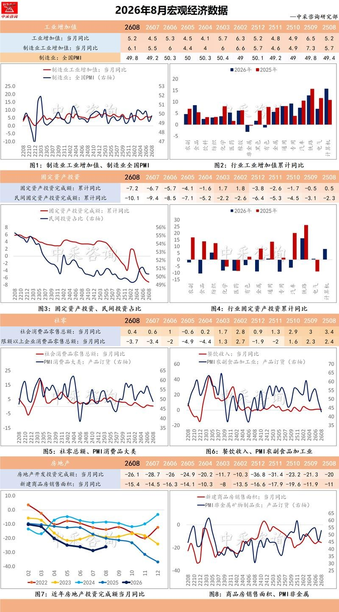
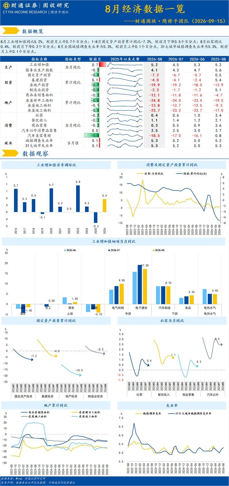
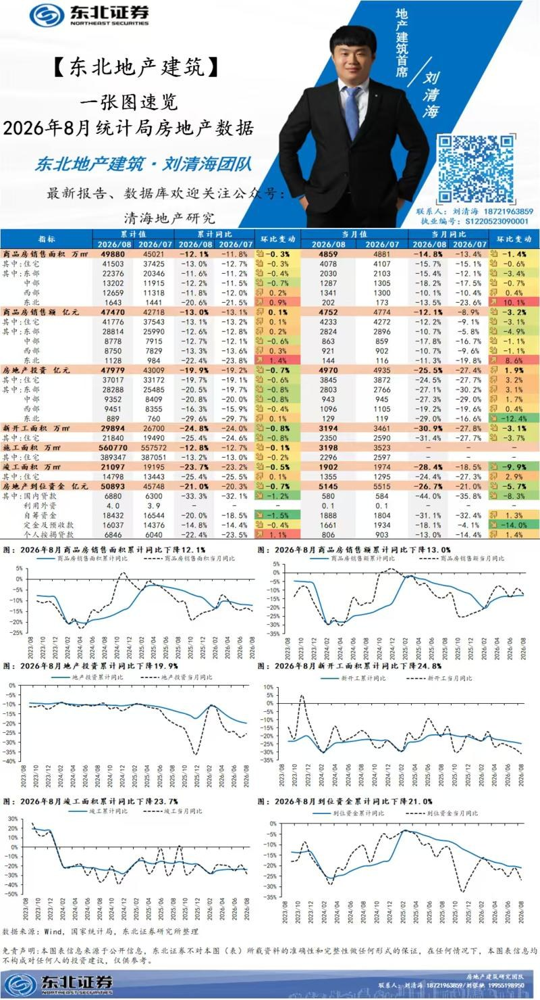
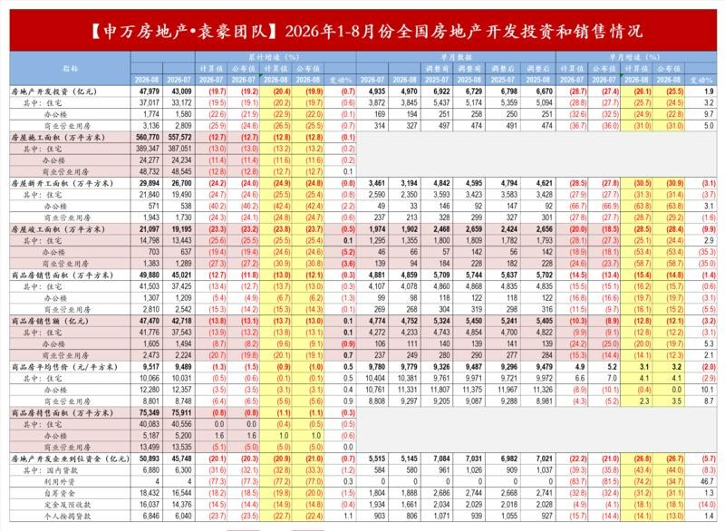
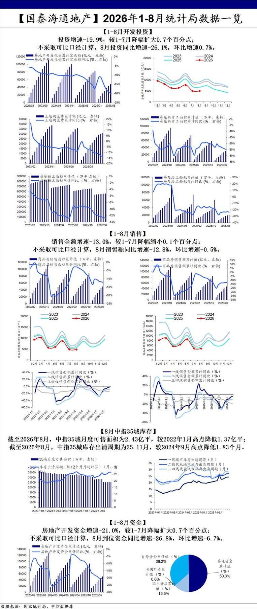
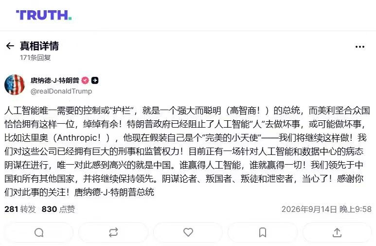
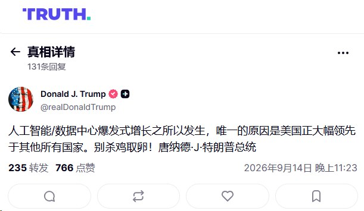

调研纪要 · 2026-09-15 新闻日报
星球 ID: 28855458518111 | 共 301 条帖子 | 精华 81 条
| 查看研究积累
强制同步到研究积累
全部 电子 计算机 其他 机械设备 电力设备 医药生物 宏观策略 非银金融 基础化工 汽车 通信 轻工制造 有色金属 食品饮料 传媒 房地产 石油石化 建筑装饰 煤炭 交通运输 建筑材料 国防军工 家用电器 纺织服饰 钢铁 银行 农林牧渔 环保 公用事业 美容护理
书签
行云科技，几个公告更新
行云科技，几个公告更新
1.2026年度服务器采购额度：70亿元→200亿元
2.授信额度：100亿→200亿
3.日常关联交易：10.2亿→15.7亿
具体公告解读详询
【澄天伟业】台湾健策A股唯一供应商
【澄天伟业】台湾健策A股唯一供应商
[玫瑰]微通道MLCP的必要性：Power/package density上升；Heat flux极限集中（韬定律、HPC等）。难点在于：封装、液压控制、泵功率、泄露、可靠性等问题，液冷企业必须提供系统性方案。
[玫瑰]健策25年11月法说会上明确：1）已布局十年，客户已非常有意愿应用。2）MLCP为TIM-Less方案，取消TIM2，使3KW芯片温度降低到30度，7KW降低到70度；散热模块厚度压缩到22mm。#MLCP散热方案已定型、结构方案正在收敛。
[玫瑰]业内专家反馈：健策GB液冷模块份额0，Rubin为10-15%；下一代若采用MLCP（28H2量产），则健策份额可达90%（封装级散热+系统解决方案）。
[爱心]澄天是A股唯一健策代工商且是tier 1；公司指引27H1自产4万套冷板+1万套分水器/月，对应自产营收1.3亿/月；若考虑外采部分，则金额更高。
[太阳]展望28年，#若MLCP顺利量产、且澄天保持健策tier1角色，则可享健策市占率从10%->80%的爆发。
康方生物在WCLC会议上读出HARMONi-2的OS数据，依沃西头对头K药取得显著优效
康方生物在WCLC会议上读出HARMONi-2的OS数据，依沃西头对头K药取得显著优效
[玫瑰]截至2026年8月20日，共发生234例OS事件，中位随访时间为36个月，依沃西和帕博利珠单抗的mOS分别为30.75 mo vs 22.57 mo（HR=0.73），具备统计学差异。24个月OS率为 57.9% vs 48.0%，36个月OS率分别为45.0% vs 33.1%。（既往公布mPFS为11.1 mo vs 5.8 mo，HR=0.51）。患者出组后，帕博利珠单抗组接受后续治疗的比例为46%，高于依沃西组的36.4%。
[玫瑰]亚组分析
1️⃣PD-L1表达亚组（n= 83 vs 85）
PD-L1 TPS≥50%：mOS=NR vs 23.2 mo（HR=0.58），24个月OS率分别为63.2% vs 49.7%，36个月的OS率为53.4% vs 31.3%；
PD-L1 TPS 1-49%：28.5 mo vs 22.1 mo（HR=0.85），24个月OS率分别为54.1% vs 46.8%，36个月OS率为38.6% vs 34.1%；
2️⃣组织学亚组（n=90 vs 91）
sqNSCLC：mOS为30.5 mo vs 19.3 mo（HR=0.65），24个月OS率分别为58.3% vs 42.4%，36个月的OS率为41.0% vs 26.9%；
nsqNSCLC：mOS为33.6 mo vs 25.6 mo（HR=0.79），24个月OS率分别为57.5% vs 52.8%，36个月OS率为48.2% vs 38.3%
3️⃣年龄亚组（n=97 vs 85）
年龄<65岁：mOS为32.8 mo vs 25.0 mo（HR=0.75）；
年龄≥65岁：mOS为30.2 mo vs 22.1 mo（HR=0.72）
[玫瑰]安全性，两组安全性特征总体相当，未出现新的安全性信号，出血风险没有显著提高。
[玫瑰]高危sqNSCLC未见明显出血风险增加。在鳞癌亚组中，依沃西组的基线特征明显更差。其中，肿瘤中央型占比（72.2% vs 62.6%）、伴有空洞/坏死（10.0% vs 7.7%）、包绕大血管（6.7% vs 1.1%）的患者比例均显著高于帕博利珠单抗组。
[玫瑰]Summit正在海外开展针对PD-L1 TPS≥50% NSCLC 1L患者的HARMONi-7研究，计划入组780名患者，主要终点是PFS和OS。
节跳动上半年利润降至 200 亿美元，受 AI 支出拖累
节跳动上半年利润降至 200 亿美元，受 AI 支出拖累
OpenAI 收购开发智能手机摄像头的初创公司
OpenAI 收购开发智能手机摄像头的初创公司
电子布/铜箔/pcb链的三季度前瞻【国金建材&AI 新材料 李阳团队】
电子布/铜箔/pcb链的三季度前瞻【国金建材&AI 新材料 李阳团队】
1、电子产业链本轮行情传导逻辑
·行情传导路径：本轮行情从PCB释放利润，外溢至CCO再传导到电子布，是当前盘面反映的一致市场预期。8月底至9月初以来，无AI PCB业务、收入体量远低于盛虹、鹏鼎、深南等头部企业的二三线PCB企业，单三季度单月利润区间为小几千万至七八千万元，该部分利润完全由涨价贡献，一二线PCB同样受益于涨价，三季度有明确利润改善预期。
·涨价核心根源：本轮产业链涨价的核心根源是电子布供应短缺，FR4短缺本质为电子布涨价，涨价传导时间节点为2季度电子布涨价兑现到CCO端。今年一二季度PCB业绩受上游成本压制，当前业绩束缚已打开。
·反弹催化因素：前期板块标的估值已调整至低位，其中电子布标的对应2027年业绩或年底商品价格年化的估值低点为8-9倍，辅材标的前期估值低点为14-15倍，具备较高安全边际。本轮板块反弹的核心催化为PCB三季度利润释放预期、海外AI相关事件。
2、电子布环节业绩预期与公司分析
·电子布业绩确定性：电子布板块业绩兑现高度确定。价格走势上，7628电子布二季度含税均价6.7元/米，其中四月6块出头，五月在6.1-6.7元区间，六月达7.4元；七月起价格跳涨，七月为8.6元、八月达10.1元、11月可达11.6元，三季度均价预计升至10.1元/米，单米含税价较二季度上涨3.4元。扣除13%增值税、15%-20%所得税影响后，单米净利环比二季度增长2.5元以上，若企业出货量达3亿米，单季度净利可环比多增7.5亿元。
·巨石业绩弹性分析：巨石业绩核心驱动为电子布业务弹性，出砂业务业绩扰动不大。其二季度电子布出货量为2.7亿米/季度，今年规划10万吨电子布产能，第一条5万吨三季度将完全释放，第二条5万吨至少半数时间贡献增量，出货量将较2.7亿米明显提升。结合单米净利增幅测算，其三季度业绩环比增幅可达40%-50%以上。
·其他企业业绩情况：a. 辅材：二代布二季度发货仅略有增长，剩余56个干锅对应每月七八十万米的二代布增量将于四季度初逐步释放，业绩弹性核心释放节点为四季度；当前总产能15.5万吨，年电子砂外售七八万吨，年布外售2亿米，折算季度布出货约1亿米。b. 中材：电子布、电子砂外售总量不大，业绩弹性需等待定增进入锁价阶段、产能落地后逐步释放。c. 宏和：季度电子布出货4000万米出头，单米净利可环比增2.5元以上；梯步业务量价齐升，二季度月出货30余万米，三季度将增至50-60万米/月。
3、铜箔环节三季度业绩预期
·铜箔整体业绩弹性：铜箔行业两大核心标的铜冠、德福二季度受减值等各类因素影响，业绩同比、环比均未明显释放。从行业涨价节奏来看，PCB价格自3月、6月两轮上涨后，8-9月仍将继续上涨，铜箔涨价基本保持一个季度一大涨的节奏，为三季度业绩环比改善提供核心支撑，预计三季度行业业绩环比弹性较好。
·龙头企业业务进展：HOP铜箔今年6-7月以来已有积极进展，龙头企业产能释放节奏明确：铜冠的HOP4产能自6-7月起环比增量开始提升，德福HOP4产能今年7-9月释放速度较快，两家龙头企业的HOP铜箔业务三季度均将有较为明确的进展，进一步带动业绩端向好。
4、CCL及PCB环节业绩与看点
·CCL业绩弹性验证：CCL环节业绩弹性表现突出，相关趋势已得到充分印证，华正新材7-8月合计盈利3.5亿元可作为佐证。行业内CCL相关企业均具备明确的业绩弹性，上游环节涨价可顺畅传导至发货端，带动产品售价同步提升，业绩兑现逻辑清晰，增量空间确定性较高。
·CCL企业核心看点：不同CCL企业各有差异化核心竞争优势与看点：a.生益科技聚焦高阶PCB业务布局；b.华正新材重点布局ABF膜赛道；c.南亚具备海外潜在订单的预期催化。当前行业内相关企业普遍处于业绩同比高增的状态，投资者若有具体企业的业绩相关沟通需求，可随时联系对应团队咨询。
上周一提示的小pcb和载板链均大涨，重申近期路演观点：
上周一提示的小pcb和载板链均大涨，重申近期路演观点：
1、本轮为什么非ai的pcb涨价锐度这么高，在23年之前全球pcb市场5000e元，目前预测27年ai pcb市场需求2000e以上，占比相当可观，ai对非ai挤占极大，加上pcb产业链长，上游很多关键的设备材料在日本，下游需求大/上游扩产慢，供需缺口进一步拉大，能转高端的产能都转去做高端。
2、持续性怎么看，本轮pcb涨价，背后原因是ccl，ccl因为电子布，电子布因为织布机，这个问题没解决自然缓解不了，什么时候能缓解，产业反馈还早着28年再说。ccl缓解不了，pcb持续性依然很强，有业绩的本来就容易涨，加一点ai故事的更性感，奥士康已经新高。
3、业绩层面，q3开始就能看到这些小板厂业绩都开始非常好，上半年还没顺价，ccl现在每个月都涨价，q3比q2涨的更多，甚至出现价格倒挂，未来小pcb也是产能为王，能拿到原材料是核心。
4、载板条线的逻辑差不多，海外大厂都开始往大陆找产能，能做载板的公司全球都没几家。
相关标的继续推荐，奥士康/世运/崇达/中京/依顿/超声/金禄等，以及载板：深南/兴森/方邦/华正
这是pcb板块最近最大的变化，前瞻推荐，老师们多重视！
【东吴计算机王紫敬】计算机行业锚定三大主线
【东吴计算机王紫敬】计算机行业锚定三大主线
下一阶段科技产业核心聚焦：
一、国产化替代：“十五五” 核心战略任务，国产替代全面推行，行业景气度持续高位。覆盖 IC 设计、晶圆流片、半导体设备核心赛道；洁净室、光刻胶、磷化铟等细分同步提速，成长逻辑清晰。
二、物理 AI：AI 赋能制造业升级是核心方向，制造业是我国经济长板与核心支柱。聚焦工业大脑、世界模型，重构研发、生产、运营全流程，长期成长空间明确。
三、算力租赁：高端算力是国产大模型发展的核心约束，算力租赁是破局关键，其资源储备与调度能力直接决定大模型迭代速度与应用上限，产业确定性突出。
相关标的
物理AI：中控技术、嘉立创、敏芯股份
国产替代：国投中鲁、寒武纪、海光信息、晶瑞电材
算力租赁：宏景科技，协创数据，利通电子
（今年大考请您重点支持东吴计算机团队！）
20260915盘后消息汇总
20260915盘后消息汇总
其他
1.美国30年期国债收益率突破5.40% 创2007年以来新高
2.焦化厂减产 炭黑市场刷新历史新高
3.马士基豪掷90亿美元开展近年来最大规模造船计划
AI
1.华为
①华为汪涛：10万卡以上超节点集群在2027年将成为基础配置
②华为发布全球首个3D数据中心|
2.报道称字节跳动上半年营收同比增长30% 达到1200亿美元
【东吴商社】8月社零：整体扣除汽车外增长+2.5%，化妆品、饮料、烟酒类表现稳健，黄金珠宝较差，汽车&家电等一次性刺激因素导致波动，整体扣除汽车1-8月增长+2...
【东吴商社】8月社零：整体扣除汽车外增长+2.5%，化妆品、饮料、烟酒类表现稳健，黄金珠宝较差，汽车&家电等一次性刺激因素导致波动，整体扣除汽车1-8月增长+2.7%（扣除家电+3%+）
⭕️海风板块异动上涨点评
⭕️海风板块异动上涨点评
国内外海风更新：预期后续会逐步有欧洲海风订单落地
#欧洲海风
【英国】
英国AR7海上风电项目中的部分项目有望在26Q4左右定标设备供应商，其中BB项目预期10月底左右定单桩和导管架供应商，目前国内企业参与该项目导管架比较多（大金、海力、中海油有望获得导管架订单，大金有望获得单桩订单，此外单桩也有其他欧洲本土企业参与）
【德国】
预期德国某海风项目（2024年拍卖项目，负补贴水平相对比较低）有望在9月底落地，预期10万吨+，主要为相关企业28年贡献业绩增量。#这是今天的增量信息
#国内海风
深远海行动计划有一定进展：8月底前 相关方面 已给出正式意见，后续仍需更高层级决策机关同意，行动计划落地确定性已经明显提高。
📌英特尔更新
📌英特尔更新
💻CPU 顺风因素：GPT-6 代理能力预计将推动服务器 CPU 需求增长。
🔬CWF（Clear Wafer Forest）：小批量生产推迟至 2026 年底，2027 年第一季度全面生产。主要产量为 Diamond Rapids（2027 年中），配备更强的 SRAM/LPDDR5X 以及更多核心。
🤝英伟达：潜在 PC 合作，很可能采用 x86 CPU 用于头节点（Rosa Feynman 变体，配备英特尔 CPU）。
📈代工厂良率改善：18A（Panther Lake）在 2026 年第二季度仍维持约 80%；更大尺寸服务器 CPU（CWF）良率升至约 50%，6 月仅约 20%。
🏭产能重申：到 2026/27/28 年底，18A 产能分别为 40/60/80KPM，14A 产能分别为 0/6/24KPM。
📌代工厂项目推进：Terafab 合作项目叠加 HBM 基底业务，预计 2029 年形成两大供应商格局。
💰后端管道强劲：2027 年预期收入 11 亿美元，2028 年预期收入 70 亿美元。
🧩EMIB / 基板良率领先于市场担忧：日本供应商良率已经达到约 45%，第二季度仅 20%-25%；目标 9 月底超过 50%，次年 1 月达到约 55%。
📑Edgewater 关于 MU / 海力士 SKHY 的渠道调研：
📑Edgewater 关于 MU / 海力士 SKHY 的渠道调研：
💬Anthropic 预计将在 CY27 直接购买约 20% 的内存，并在 CY28 增加这一比例，在 DRAM 方面大致与 NVDA 规模相当。
💬Anthropic 和 OpenAI 预计将在 CY27 开始直接购买 ——Anthropic 声称明年将有 400-500 亿颗 1Gb 的需求，其中约 20% 将直接购买。其余部分将来自 OEM、CPU/GPU、新云合作伙伴，但 CY28 及以后的采购量和直接购买比例应将增长。
📌对今早简报中的一项内容进行快速更正：
📌对今早简报中的一项内容进行快速更正：
🔹初步摘要称 Rubin Ultra 推迟至 2028 年，但应明确指出高盛专家电话会议中提到的是 Kyber NVL144 机架系统被推迟至 2028 年。
📌更新内容：
🔹VRT/ETN/Schneider/ABB：高盛表示，800VDC 的采用正在放缓，在专家电话会议后延长了传统电源的发展周期。
🔹高盛表示，与一位数据中心专家进行的专家电话会议指出，到 2030 年，800VDC 将占美国新建数据中心的 21%，此前预期为 25%。
🔹这是因为推理工作负载通常可以保留在传统架构上；该专家指出，英伟达针对 Rubin Ultra 推出的 Kyber NVL144 机架系统也已从 2027 年推迟至 2028 年。
🔹由高盛主持的这位专家表示，传统架构应在 2032 年之前继续保持主导地位，这将利好现有电气设备供应商并通常带来更好的利润率，而大规模固态变压器（SST）部署可能要到 2029 年才会开始。
📌美国银行上调半导体增长前景，预计至 2030 年前复合增速 18%
📌美国银行上调半导体增长前景，预计至 2030 年前复合增速 18%
📈美国银行当前预计，2026 至 2030 年半导体行业将实现 18% 的复合年增长率，高于此前 14% 的预测，核心驱动来自内存与数据中心的旺盛需求。
💰美国银行预测，半导体市场规模到 2030 年将达到 3.2 万亿美元，此前预估为 2.7 万亿美元。行业当前市场规模约 1.7 万亿美元，代表美国银行预期行业规模将在四年内近乎翻倍。
🔧晶圆制造设备预测同样上调：
📊2026 年：1560 亿美元，同比增长 33%
📊2027 年：2100 亿美元，同比增长 34%
📊2030 年：3600 亿美元
💾仅 DRAM 设备资本开支，预计 2026 年达到 610 亿美元，2027 年达到 850 亿美元。
📌美国银行表示，AI 与数据中心订单持续高景气、产能规划落地、内存资本开支提升，为本轮上调的核心推手。
🖥️英伟达 B200 GPU 租赁价格维持在约 5.72 美元 / 小时的高位，相比 3 月的峰值回落幅度不足 10%。
🔥江苏白酒渠道交流要点 20260915
🔥江苏白酒渠道交流要点 20260915
[玫瑰]行业整体：#大众消费存在刚性，但呈现轻度消费降级趋势，产品结构向中低价格带集中。#商务场景较2025年略有修复，但仍相对低迷，尚未完全恢复。
日常消费核心价格带为100元左右区间，是当前行业最聚焦的价格带。节日期间价格带略有上移，300-400元价格带（对应洋河水晶梦、国缘四开）动销会出现阶段性好转。
[玫瑰]洋河情况：#截至2026年9月整体回款完成65%，2026年上半年回款金额同比下滑5%，#三季度回款预计有大个位数增长。库存方面，M6+库存约3个月，当前暂未打款补货。海、天、水晶梦库存约2个月，处于历史低位。第七代海之蓝推广进度符合预期。目前洋河主要产品渠道利润高于今世缘，但动销速度略低于今世缘。
[玫瑰]今世缘情况：#当前回款约70%，核心产品四开、淡雅库存约3-4个月，其他产品库存约3个月，整体处于合理水平。核心动销产品为四开、对开，表现较好，V系列高端产品补货情况较弱。淡雅是江苏省内百元价格带的消费者首选产品。#预计三季度动销有所增长。
[玫瑰]其他品牌：随着中秋临近，#五粮液整体动销开始提速，团购表现较好，省外名酒中#古8亦有较好表现，价格带卡位精准，次高端#汾酒青花20也有一定的消费氛围。
[太阳]注：以上反馈为区域样本数据，不代表整体数据。
🎉详情欢迎沟通 · #长江食品饮料董思远团队🥇，恳请鼎力支持🏆
[红包]【申万TMT+海外科技】美股近期更新260915：重视AI产业链价值量分配趋势
[红包]【申万TMT+海外科技】美股近期更新260915：重视AI产业链价值量分配趋势
#整体：处于26-27年大模型及应用层ARR有一定增长预期（26年~2000亿、27年~5000亿），但28年增长还不明朗的空白期，静待更强模型能力+新的场景解锁。我们认为除了静待新场景和更强模型之外，关键问题在于商业模式逐渐清晰成型后的价值量分配，本质是大模型+AI应用层的关键C端及B端AI入口落在何处：
#1）模型层：企业竞争力来自于模型能力领先、商业价值来自模型能力溢价，劣势在于现有服务形态（API、Vibe Coding）对用户的粘性不足、迁移成本低，需要在长时间内保持能力领先以稳定客群，形成入口的数据、用户心智、生态粘性；短期重点观测GPT Astra、Claude Fable等在反蒸馏后是否重新拉开与开源模型的能力差距并保持。
#2）云计算：企业竞争力来自于中立性（API平台模型聚合性价比高）、云客户禀赋及粘性（企业客户的存储、工作负载基于云基础设施）、云服务技术栈完整性，更受益大模型多元化趋势。云计算凭借企业客户粘性及高质量云服务，26Q2以来云API平台tokens收入占AI云收入占比提升明显（AWS TaaS收入占AI云比例超30%）；短期重点观测作为AI入口雏形形态的API平台的收入占比是否持续提升。
#3）工作流软件：包括Palantir、ServiceNow、Salesforce等，趋势是各独立系统（IT/ERP/CRM等）走向数据融合；企业竞争力来自专有数据+工作流粘性，但面临更激烈的竞争（云+大模型公司的进入）及商业模式颠覆风险，短期重点观测除了各企业AI业务收入进度之外，数据本体Ontology和跨系统数据的进展至关重要，目前Palantir暂时处于领先身位。
#我们认为，在26Q1-Q2大模型吞噬一切的叙事弱化之后，AI入口的争夺将成为叙事重心，从初步产品化（浅层AI工具）走向深度产品化（全工作流协作Agent）阶段，格局尚未定格，预计未来变化仍较多。
🔗26Q2北美云计算深度：#小程序://申万宏源研究/SoDYibz5HpgIUKa
[玫瑰]欢迎联系
#【传播文化 和通信】-【申万宏源】 林起贤 任梦妮 夏嘉励 赵航 黄俊儒15216630725 张淇元 王昊 刘菁菁 郝知雨 陈力扬 包轩豪
🧧【中信能化】：极致散热登场，金刚石迎来产业化元年
🧧【中信能化】：极致散热登场，金刚石迎来产业化元年
🖥️路演交流：#本周三（9.16）到周五（9.18）北京区域路演交流，欢迎一起探讨金刚石散热相关投资机会。
⭕️AI散热趋势：英伟达Hopper-Blackwell-Rubin向Feynman持续迭代，AI芯片功耗曲线有望陡峭上扬，散热需求倍数增加。AI服务器散热体系呈“芯片—TIM—导热板—冷板—液冷”层级结构，目前，芯片局部热流密度已突破500W/cm²并向1000W/cm²演进，铜（约400W/(m·K)）等传统金属散热逼近物理极限，热导率2000-2200W/(m·K)、5倍于铜且与Si/SiC衬底热膨胀高度匹配的金刚石成为散热升级必然选择。我们测算，仅考虑AI芯片、冷板和光模块金刚石散热材料到2030年需求空间有望达1150亿元，2027-2030年CAGR约143%，是AI散热链体量最大、节奏最快的增量方向。
⭕️卡位稀缺性：供给端高度集中，中国人造金刚石产量全球市占率约90%；从产值来看，目前工业级金刚石产值降至60%，散热级已达22.6%，价值重心加速向功能级迁移。行业沿“磨料级—宝石级—电子级”三级谱系升级，形成磨料磨具、军工散热、消费电子、光模块、AI服务器热沉、GaN-on-Diamond衬底等三级递进九大场景。我们判断随着国内凭借MPCVD多晶产能、复合工艺与低电价成本洼地快速缩小差距，全球规模最大的散热级产能储备在手，竞争格局有望由"Element Six主导，中日美竞合”逐步向国产厂商倾斜。随着2026年行业完成从送样验证到批量订单的跨越，金刚石有望迎来产业化元年。
⭕️投资推荐：在AI芯片功耗陡峭攀升、传统金属散热逼近物理极限及金刚石制备技术工艺持续优化三重因素驱动下，金刚石散热行业有望迎来产业化元年的投资机遇。我们建议围绕率先商用交付和产能量产卡位显著的两条主线进行布局：一、聚焦行业头部，率先实现散热片小批量供货、装备自研与产能规模领跑的企业有望充分受益于需求放量，建议关注国机精工、四方达；二、关注工艺领先，具备大尺寸制造与全产业链能力，且加速扩产布局的企业沃尔德。
☎️中信能化：王喆/赵宇航15201574980
【长江交运韩轶超团队】效率脱钩与高景气共振，新造船订单持续兑现
【长江交运韩轶超团队】效率脱钩与高景气共振，新造船订单持续兑现
#马士基豪掷90亿美元开展近年来最大规模造船计划。Tradewinds报道，马士基正计划一笔高达90亿美元的新造船计划，规模或达到42艘大型集装箱船，且首次进军2.4万TEU大船。
#运力扩张战略的回归；从领先者到追赶者。2011年，马士基率先订造1.8万TEU集装箱船，开启行业“军备竞赛”。过去几年，马士基在船队规模上一直保持克制（维持400-440万TEU），而是把战略重心转向综合物流。随着地中海份额的反超和达飞轮船的追赶，马士基正从领先者变成追赶者。
#运力扩张是船队紧张和效率下降的双重结果。2M联盟的解散、红海绕行、贸易摩擦下，集运效率大幅下降。我们以运力周转次数为例，#集装箱运力周转次数由2010年的10次将至2025年的7次，相当于效率下降了30%。这也不难解释为何马士基急于复航苏伊士运河，2M解散后自身运力的紧张难以维系稳定的全球航线网络。
#效率下降的逻辑正在油运重现。无论是美伊冲突下油运效率的下降，还是长期南美增产“西油东运”长航线需求的增加，油轮供给持续收紧。此外，#油轮老龄化问题严峻（2028年超50%VLCC船龄达15年+），行业高景气下提振运力更新需求，压制已久的新造船订单持续释放。
#效率脱钩与高景气共振；新造船订单持续兑现。集运逆周期扩张、油轮订单兑现均是效率脱钩和高景气的双重共振，同时散运未来也有可能沿着相似的路径演绎，重申推荐#中国船舶、松发股份、中船防务H、中国动力、苏美达。
[玫瑰]如需【海运视角看造船最新报告】，欢迎联系长江交运 韩轶超/韦铖/魏爱晓
AI树脂：强格局强卡位，伴随产业β进入边际兑现期
AI树脂：强格局强卡位，伴随产业β进入边际兑现期
#地位提升 本轮反弹电子树脂在ccl材料中的重视程度得到提升，主要系量增&迭代升级共振，#格局好、客户粘性壁垒高，大部分需求激增导入少数核心供应链标的，伴随产能扩张量增确定性强。
#边际明显 β层面Q3进入Rubin等放量期，加大对M8材料需求，我们预计Q3起供需矛盾进一步加剧，新增产能消化预期强。α层面核心标的产能在Q3末开始陆续进入产能投放期，#东材科技 于9月逐步投产眉山万吨新产能，或在Q4加速体现业绩；#圣泉集团 将于Q4进一步扩产2000吨聚苯醚产能。中化国际、呈和科技等均在布局规划新产能的投放。
[爆竹]风险提示：需求不及预期，投产不及预期。
【甬矽电子】交流速递（0915）
【甬矽电子】交流速递（0915）
—————
1）主业：26全年营收54亿元以上➡️28全年至少75亿元。QFN、SiP已满产，#先进封装（凸点倒装+晶圆级）26H1收入占比已超20%。
2）CoWoS-L：硅桥方案在头部国产算力客户验证顺利。当前产能约1,000片/月，26年底提升至2,000-3,000片/月，#27H2进入L大放量到5000片/月。单片L加工费1万美元以上，#甬矽是国内L第一梯队。
#甬矽电子先看600亿。28年主业5亿元净利，30x PE对应150亿元市值；CoWoS-L 27年5,000片/月满产对应年收入43亿元，稳态净利8-9亿元，考虑国产L稀缺性及后续万片扩产空间，50x PE对应400-450亿元市值。
2.5D+封装在ai基建很重要&板块整体处在地板上，各位领导务必重视锐度票[合十]
🚗【浙商汽车 文姬团队】肇民科技调研更新-0915
🚗【浙商汽车 文姬团队】肇民科技调研更新-0915
[太阳]机器人：绑定T链核心，PEEK功能件已进入批量交付，订单节奏持续提升，单机ASP可观，有望贡献较大弹性
[太阳]产能出海：国内新厂搬迁基本落地，主业扩产有支撑；东南亚基地轻资产先行、可快速响应客户转移
[太阳]汽零主业：客户结构持续切换，空悬/热管理等抬升单车价值，份额提升对冲内卷，盈利质量优于行业平均，下半年经营好于上半年。
[太阳]新兴业务：储能液冷相关件已进头部客户链，同比持续高增，航天等仍处长验证，整体下半年空间打开
[咖啡]详细调研内容欢迎交流！浙商汽车 文姬15957112050/傅昌鑫19280745352
【招商电新】金洲管道推荐20260915
【招商电新】金洲管道推荐20260915
#近7亿元增资液冷子公司
公司今日公告，拟以自有资金6.8亿元增资全资子公司金洲液冷，增资后注册资本提升至7亿元，资金主要用于扩产及研发。#增资后有望解决大型项目招投标注册资本门槛 、银行授信及供应链信用等问题，彰显公司发展液冷第二主业的战略决心。
#液冷业务有望加速兑现
公司下属东莞市骅兴扩增3万平方米厂房，规划配置600台CNC设备、近百台激光焊接机、数十台氦检设备、十万及万级无尘车间等，全方位覆盖液冷相关零部件生产工艺具备液冷零部件ODM/OEM能力。产业反馈，一期产能于9月中旬投产，年产值10亿元，二期年底投产，合计产值达20亿元。公司液冷业务正式买入规模化量产，增长潜力值得期待。
#液冷需求景气度高
英伟达Rubin平台明确采用100%全液冷方案，标志着高功耗 AI 机柜液冷由可选升级为刚需，渗透率或迎快速提升。当前海外英伟达供应链中台系厂商占据冷板核心份额，国内厂商依托热管理制造能力提供代工服务并加速认证导入，有望实现份额突围。
欢迎交流，联系人：蒋国峰13671882095
涛涛车业推荐更新
涛涛车业推荐更新
[太阳]电动高尔夫球车延续高增
我们预计公司26Q3电动高尔夫球车销量与26Q2基本接近，同比仍有望实现50%及以上增长；单车ASP方面，六座车新品有望优化产品结构，带动单车价格环比提升；产能方面，北美三条产线已达到满产，第四条产线正在规划中，预计年底落成后总产能有望达到9000-10000台/月。
[太阳]其他业务表现稳健
我们预计公司全地形车保持上半年增长势头，大排量新品的贡献有望在27年逐步放量；电动自行车稳健增长；电动滑板车等业务趋势无明显变化。公司还是会继续将资源集中于高成长、高效益的业务板块，部分业务承压对整体经营业绩表现影响有限。
[太阳]发电机组新业务进展顺利
目前新业务进展顺利，上海闵行研究院团队已就位，客户洽谈顺利，海外产能已在布局，按照27年200-300兆瓦的规模目标稳步推进，未来有望达到更大规模，值得期待。
[太阳]盈利预测
我们预计公司2026-2028年归母净利润分别为12.1/15.8/20.1亿元，对应PE估值分别为21.1X/16.3X/12.8X，持续推荐。
华瓷股份：MLCC氧化锆新面孔
华瓷股份：MLCC氧化锆新面孔
1️⃣东曹断供Apple Watch电子级氧化锆近期愈演愈烈，在供应链引起较大反响，预计后续国产氧化锆将加速替代进程，粉体厂商将直接受益；
2️⃣公司近期公告，氧化锆粉体已进入潮州三环MLCC粉体供应商验证体系，后续订单情况将按规定披露。当前公司氧化锆相关产能满负荷生产，正在规划新生产线；
[玫瑰]10月是MLCC国产替代的重要观察窗口，村田减产将促使国产MLCC厂商加速扩产。我们预计10月村田“大概率”会进行第一次普调涨价、三星“大概率”跟涨、三环“确定”要涨，继续维持“一个月以内，原厂先涨，材料随后”的观点。
#建议关注：华瓷股份、国瓷材料、长裕集团，以及#昀冢科技
力诺药包：玻璃基板原片技术领先，RTU/自有品牌业务进入快车道
力诺药包：玻璃基板原片技术领先，RTU/自有品牌业务进入快车道
1）玻璃基板：路线占优，产业化节奏明确。公司选取硼硅玻璃路线，从第一性原理看在性能与成本之间是最优解决方案。产能节奏：①现有1条1t/d中试线；②技改1条18t/d老线，预计年底投产；③新建1条8-10t/d产线，预计27年投产。待下游大规模放量后，我们测算玻璃基板业务有望贡献数亿元利润，弹性显著。
2）RTU：满产满销，带动传统产品协同发展。当前RTU订单饱满、处于满产满销状态；随着27/28年新增产能陆续释放并爬坡，支撑2030年收入达到8-10亿元。
3）新加坡自有品牌：持续加大自有品牌布局，主攻高端市场，海外本土化运营逐步成型，2030年收入目标5亿元，成为药玻主业之外又一稳健增长极。
公司是玻璃基板原片核心标的，随新建产线投产与下游需求释放，弹性逐步兑现。"药用包装+玻璃基板"双轮驱动下，业绩弹性与估值空间同步打开，重点推荐。
【兴证策略】上半年多少行业薪酬实现增长?
【兴证策略】上半年多少行业薪酬实现增长?
31个申万一级行业中，26个行业职工薪酬同比增长。
其中，职工薪酬增长较快的行业主要集中在中游制造尤其是先进制造方向，包括【有色、电子、新能源、机械】等。
仅5个行业薪酬下降，基本是内需主导行业，包括【房地产、商贸零售、建筑、农业】
长江存储科技（YMTC）已着手武汉第三工厂（FAB3）的生产设备连接工作。随着工厂投产准备进入最后阶段，年底初步投产的前景也日益明朗。
长江存储科技（YMTC）已着手武汉第三工厂（FAB3）的生产设备连接工作。随着工厂投产准备进入最后阶段，年底初步投产的前景也日益明朗。
受特斯拉AI芯片订单激增的影响 ，三星电子位于美国德克萨斯州泰勒的晶圆代工工厂已开始量产
受特斯拉AI芯片订单激增的影响 ，三星电子位于美国德克萨斯州泰勒的晶圆代工工厂已开始量产
三星电子调整定制 HBM 核心芯片的供应链……推行“双轨”战略，同时依赖台积电。
三星电子调整定制 HBM 核心芯片的供应链……推行“双轨”战略，同时依赖台积电。
肯尼亚加入非洲国家行列，禁止未精炼矿产出口
肯尼亚加入非洲国家行列，禁止未精炼矿产出口
📌高盛中国市场复盘
📌高盛中国市场复盘
上证综合指数下跌 0.54%，科创 50 上涨 1.55%
上证 50 下跌 0.52%，创业板指下跌 1.15%
沪深 300 下跌 0.67%，中证 500 下跌 0.13%
两市总成交额 1.63 万亿元，较前一日下滑 1.08%
📉A 股午后再度走弱，日内并无新增消息驱动本次下跌。
🌏整个区域市场情绪维持谨慎，市场成交额持续徘徊在今年以来低位附近。
📊偏弱的宏观数据压制市场情绪，尽管工业增加值好于市场预期，但投资端依旧低迷，固定资产投资同比下滑 7.2%；市场预期为下滑 7.1%，高盛此前预期下滑 7.3%。
🛒零售销售增速依旧偏弱，8 月同比增长 0.4%，市场预期为增长 0.8%。
📉高盛全球投资研究将三季度 GDP 同比增速预测下调至 4.4%，此前预测值为 4.6%。
💻半导体标的今日表现相对抗跌，科创 50 盘中最大涨幅达 3.28%，不过临近收盘上涨动能有所消退。
🔧在美国高管呼吁放缓 AI 发展节奏的近期背景下，国产替代主线标的相对跑赢大盘。
📈寒武纪 (688256.SH) 上涨 3.44%。
🏦社会融资总量不及预期、银行信贷需求持续疲软，银行板块行情短暂休整。
🔎个股层面，市场关注焦点集中在宁德时代 (300750.SZ) 午后走弱，该股下跌 6.16%。
💬部分市场观点认为，原因包括电动车厂商切换电池供应商、电池产品增值税调整等因素，但上述传闻均不是今日午后才出现的新增信息。
📊资金流向：我们的买卖盘力量相对均衡。
✅我们买入银行、医疗以及能源设备板块，同时卖出电池、片式多层陶瓷电容器与共封装光学板块。
📌高盛香港市场复盘
📌高盛香港市场复盘
恒生指数下跌 1%｜恒生中国企业指数下跌 1%｜恒生科技指数下跌 0.6%｜成交额 1870 亿港元
🥇领涨板块：资讯科技板块上涨 0.5%，必需消费品板块持平，能源板块下跌 0.1%
📉领跌板块：原材料板块下跌 3.2%，综合企业板块下跌 2.5%，金融板块下跌 2.2%
📌港股走低，主要受两大因素影响：第一，区域整体风险偏好回落；第二，国内宏观数据偏弱拖累市场情绪，社会融资总量以及经济活动数据均不及预期。市场行情单边下行，A 股同样走弱。
💡值得留意的是，本轮下跌更多由价值股抛售带动，成长股表现相对抗跌，恒生科技指数今日韧性较强。
🏦金融与银行板块成为今日抛售主力。香港本地买盘支撑减弱，香港金管局仅净买入 1.12 亿港元。
📊资金流向方面，今日卖方力量更强。交易台在工业 / 电池板块见到显著卖盘。宁德时代在 A 股与 H 股均遭遇大额卖出。我们同时转为医疗板块卖方，卖出中国生物制药。
🛒消费板块多空交织，泡泡玛特这类标的存在买盘回补，而李宁等运动服饰标的出现卖盘。
🏠地产板块多空双向交易活跃，长实集团交易持续火热。
✅另一方面，我们买入三一重工，并持续小额增持翰森制药。
💻科技板块方面，快手持续遭遇减仓。
📉原材料板块连续第四个交易日走弱。多重因素叠加，包括利率与油价通胀担忧、铜价上涨乏力、国内经济活动数据疲软。金价回调同样带来拖累。
🏦金融板块下挫，银行板块下跌 1.5%，创下 8 月初以来最大单日跌幅，防御类以及价值板块买盘持续消退。
💻科技板块在昨日回调后表现抗跌。AI 模型相关标的依旧走弱，MiniMax 下跌 7%，智谱 AI 下跌 5.7%；但半导体板块逆势走强，半导体板块上涨 1.2%，中国将大力扶持 AI 芯片设计与算力技术的消息形成支撑。
📌高盛韩国收盘
📌高盛韩国收盘
韩国综合指数：下跌 0.85%，点位 6627.3，成交额 119 亿美元，外资净卖出 15.2 亿美元
韩国科斯达克指数：上涨 0.70%，点位 812.4，成交额 45 亿美元，外资净买入 0.18 亿美元
📊市场复盘
📉韩国综合指数全天走势谨慎且震荡，成交低迷，成交额较 20 日均值下滑 33.2%，说明在美联储 FOMC 会议前，大部分投资者选择保持观望。
💸外资与本土机构延续在韩国综合指数的净卖出态势，两者抛售集中于科技板块，外资净卖出 9.85 亿美元，本土机构净卖出 5.45 亿美元；个人投资者及其他公司净买入 12 亿美元。
📌今日外资在韩国综合指数几乎所有板块均为净卖出，仅在信息技术服务、食品饮料、建筑、医疗设备板块小幅净买入。
💻半导体板块（韩国半导体指数下跌 0.5%）行情震荡，收盘小幅走低；本土机构持续资金流出，抵消了其他公司回购资金以及个人投资者的流入。
⚓与此同时，造船板块（高盛韩国造船指数下跌 5.1%）和国防板块（高盛韩国国防指数下跌 4.9%）跑输大盘；造船板块下跌源于薪资谈判相关担忧，国防板块下跌则是昨日大涨后出现获利了结资金。
💱韩元贬值 100 个基点，汇率至 1 美元兑 1359.6 韩元。
📰主要板块要闻
🔻半导体板块（下跌）：三星电子 (005930) 下跌 0.2%，SK 海力士 (000660) 下跌 0.4%，行情震荡；隔夜费城半导体指数大跌 5.9%，但两只个股韧性相对较强，市场对于 AI 发展的担忧在昨日已基本完成定价。
📌不过两只个股成交清淡，资金流向结构相近：外资和本土机构同步净卖出三星电子（外资净卖出 2.14 亿美元，本土机构净卖出 4.12 亿美元）、SK 海力士（外资净卖出 7.38 亿美元，本土机构净卖出 1.15 亿美元）；个人投资者净买入三星电子 2.52 亿美元，净买入 SK 海力士 0.3 亿美元。
🔺机器人板块（上涨）：彩虹机器人 (277810) 上涨 3.1%，有报道称，在美国联邦通信委员会新法规生效，未经新审批的境外先进机器人禁止进口销售之后，彩虹机器人正考虑在美国本土生产并搭建本地供应链，以此恢复 RB-Y1 移动人形机器人的出口业务。
📌受行情外溢影响，斗山机器人 (454910) 小幅上涨 0.1%。
💸外资、本土机构分别净买入彩虹机器人 0.06 亿美元、0.02 亿美元，个人投资者进行获利了结，净卖出 0.08 亿美元。
🔻造船板块（下跌）：高盛韩国造船指数下跌 5.1%，各大头部造船公司普遍走弱；韩国造船海洋 (009540) 下跌 6.7%，三星重工 (010140) 下跌 6.3%，韩华海洋 (042660) 下跌 4.1%。
📌行情承压主要来自与现代重工薪资谈判升级的担忧，现代重工 (329180) 下跌 5.3%，韩华海洋 (042660) 罢工仍在持续。
💸外资与本土机构同步净卖出韩华海洋、三星重工、现代重工以及韩国造船海洋，个人投资者逢低买入。
🔻汽车板块（下跌）：韩国汽车指数下跌 1.3%；现代汽车 (005380) 下跌 1.2%，起亚 (000270) 下跌 1.9%，摩比斯 (012330) 下跌 1.4%。
📌据当地媒体报道，现代汽车集团一名高管表示，波士顿动力 2027 年的 IPO 大概率推迟，原因是该公司过去五年累计净亏损 1.76 万亿韩元，Atlas 机器人商业化落地规模化推广存在诸多阻碍。
宁德时代下跌点评：
宁德时代下跌点评：
今日公司A/H均下跌超6%，消息面上主要受3Q业绩下修到240-250亿的影响，此前市场预期普遍在250～270亿之间；交易面上，LO在减持权重股，公司受到波及。
3Q下修的核心变量是单位盈利，对比2Q 0.098元/wh预计环比略降一些，主要还是受消费税、出口退税、产品Mix（储能国内占比仍高位）影响，叠加碳酸锂价格3Q位置仍然偏高、公司JXW投产有delay。但3Q出货量仍然维持高增，预计260-270GWh，环增15～20%。整体上我们预计3Q盈利还是有希望达成250亿。
往27年看，尽管出口退税、消费税可能会持续有一些影响（预计能传导一部分），但好的方面，原材料价格周期向下，加上公司JXW复产，对上游掌控力提升，原材料端的压力会显著改善；同时，产品MIX会改善，乘用车、储能海外占比提升，盈利性更好；另外公司在质保金、返利上仍然有较大的调节空间，我们预计公司单位盈利再继续下行的空间有限，对单位盈利暂不用太悲观。
维持26年950亿利润不变，27年出货预计1300GWh，最悲观给到单瓦时9分盈利，仍然有1150～1200亿利润，当前股价对应27年不到13倍，已经具备比较好的安全边际。当下的核心矛盾还是生态链问题，下游盈利太差，如果27年车企盈利能修复，公司的盈利是有望放出来的。
短期悲观情绪或仍需消化一段时间，看公司回购的节奏和力度。中期希望大家对公司保持耐心和信心，毕竟并不是公司做不到。
【CC电新】液冷金帝，预期差核心标的
【CC电新】液冷金帝，预期差核心标的
#主业扎实、安全边际足。公司新能源车定转子高速发展，叠加轴承支撑架基石业务稳定发展，预计26/27分别贡献1.8/2.5亿净利润。
#液冷具备强预期差。1、预计宸裕（微通道散热）Q4实现业绩并表（业绩对赌未来三年实现不低于约8000万净利润）；2、当前已获台湾双鸿、cooler master70个料号超10亿订单，新产品持续导入，液冷有望实现爆单。
27年保底4亿利润（主业2.5e+液冷1.5e），液冷业绩有望持续上调，保守看180e！
全市场最底部推荐，欢迎联系张磊/黄雄
【建投电子】[礼物][礼物]9月份核心推荐，华虹宏力
【建投电子】[礼物][礼物]9月份核心推荐，华虹宏力
[玫瑰]领导，可以开干了，醒醒，当前不要退缩，重要的节点来了，我们又出来提醒，除了新财富，我们还是安心、尽心为您们净值服务。
[玫瑰]8月份我们核心推荐长鑫，整个8月震荡行情，走出来独立强势行情
[玫瑰]展望9月份中下旬，反弹行情要来，国产算力是最大的a和β，核心推荐华虹宏力。
[玫瑰]今年我们冲新财富，请支持建投电子 No.21[礼物][太阳][好的] [礼物][庆祝]，您的一分支持，将逐步提升我们上榜的概率，感谢有您，一路相伴[抱拳][抱拳]
☎️：孙芳芳 15618077298
【国金电子】泰瑞达官宣与博硕科技战略合作，共同服务北美算力客户
【国金电子】泰瑞达官宣与博硕科技战略合作，共同服务北美算力客户
[玫瑰]双方重点围绕以下几个方面深度战略合作：1）智能组装自动化解决方案；2）测试自动化解决方案；3）物理AI、OV创新应用；4）机器视觉与智能感知解决方案。
[玫瑰]泰瑞达机器人属测试自动化及组装自动化核心上游部件，此次战略合作落地代表双方将共同服务北美大客户智能自动化升级需求，并会给予部分价格支持，双方共同推进北美客户组装及测试产线升级。
[庆祝]现价强推【博硕科技】确定性与弹性兼备，业务逻辑及弹性测算见之前段子。北美算力客户产线自动化已成趋势，博硕＋泰瑞达深度绑定，坚定看好主业＋自动化设备明年有望实现20e＋利润，看400e市值。
【开源电新】再再call新宙邦：半导体业务值得价值重估-0915
【开源电新】再再call新宙邦：半导体业务值得价值重估-0915
#半导体氟化液供给出清：3M退出前产能4000/6000吨，25年底产能关停后存在刚性缺口。
需求：冷却液4-5000吨市场规模，#考虑半导体扩产周期，展望8-9000吨。
🌟新宙邦当前冷却液/清洗液产能2500/3000吨，对应20e收入、10e利润，此外新增1.2万吨产能将于27年底投产。
考虑湿电子业务，半导体26-28年合计7/10/14e利润，合计利润22/30/38e。
❗️是报表端PE很低的科技公司❗️
27年半导体业务10e利润，pe不到20x，考虑期权业务，先看千亿📈
[發]【国泰海通医药】康方生物harmoni2研究详细结果出炉，OS获益持续扩大
[發]【国泰海通医药】康方生物harmoni2研究详细结果出炉，OS获益持续扩大
[玫瑰]今日上午WCLC大会，周彩存教授以LBA的形式汇报了HARMONI2研究期中OS分析的详细结果:
[玫瑰]整体人群KM曲线显示随着随访时间延长，生存获益扩大：ak112单药对比K药单药，24个月OS率57.9% vs 48.0%，36个月OS率45.0% vs 33.1%。考虑到K药在本临床中的生存获益情况略高于历史平均水平，ak112持续扩大的OS获益更具含金量；
[玫瑰]PDL1>50%亚组和鳞癌亚组表现极佳，奠定ak112最强势方向。PDL1>50%亚组HR=0.58，24个月OS率63.2% vs 49.7%，36个月OS率53.4% vs 31.3%，随着随访时间延长，获益同样持续扩大，我们认为该亚组分析能够帮助大幅提高HARMONI7研究成功的信心；
sqNSCLC亚组HR=0.65，24个月OS率58.3% vs 42.4%，36个月OS率41.0% vs 26.9%。考虑到这是在ak112随访36个月背景下达到的，远长于H6研究的随访时间，我们认为该亚组分析为sqNSCLC适应症的成功（H6/H3）继续提供强力支撑；
[玫瑰]PDL1 1-49%亚组和nsqNSCLC亚组在受到后线干扰的情况下，依然展现出生存获益扩大的趋势。本研究中，K药组后线接受治疗比例46%，高于ak112的36%，这可能导致了K药组整体OS获益偏高。在nsqNSCLC亚组中，整体OS HR=0.79，24个月OS率57.5% vs 52.8%，36个月OS率48.2% vs 38.3%，随访时间延长OS获益持续增大，我们期待后续OS获益继续扩大。此外，考虑到目前市场上大部分主流的ADC药物对于nsqNSCLC疗效优异，我们认为ak112+ADC的组合在未来nsqNSCLC市场中存在巨大潜力；
针对PDL1 1-49%亚组，ak112 vs K药 mOS 28.5m vs 22.1m HR=0.85，24个月OS率54.1% vs 46.8%，36个月OS率38.6% vs 34.1%，K药疗效数据远高于历史平均情况（KN042中国研究，K药mOS 18.6m，24个月OS率35.7%，36个月OS率21.4%），因此我们认为后线治疗带来了一定的干扰，未来随着随访延长，获益水平有望进一步提升。此外，考虑到海外后线治疗更为干净，我们认为干扰会更少。从逻辑上来说，PDL1阴性人群或PDL1 1-49%人群中，PD(L)1获益有限，VEGF可能会带来额外的获益；
[玫瑰]不同年龄段均表现出获益。>65岁人群mOS 32.8 vs 25.0 HR=0.75，<65岁人群mOS 30.2 vs 22.1 HR=0.72，获益情况保持一致；
[玫瑰]安全性表现良好，不良反应可控，停药率低。ak112对比K药SAE分别为29.9% vs 21.6%，停药率4.1% vs 5.0%，整体不良反应可控；
[玫瑰]联系人：余文心/余克清/廖博闻/汪晋
【天风医药杨松团队】康方生物：H-2披露OS结果，高表达亚组获益为H-7提供参考
【天风医药杨松团队】康方生物：H-2披露OS结果，高表达亚组获益为H-7提供参考
[太阳]事件：康方于WCLC 2026披露依沃西单抗（AK112，PD-1/VEGF双抗）HARMONi-2研究OS结果。一线PD-L1阳性晚期NSCLC患者中，中位随访36个月，依沃西对比帕博利珠单抗中位OS为30.8 vs 22.6个月，HR=0.73，P=0.009。
[玫瑰]高表达亚组OS获益较为明显，亚组分析提供参考
PD-L1 TPS≥50%亚组中位OS未达到 vs 23.2个月，HR=0.58，三年OS率53.4% vs 31.3%，提升22.1个百分点。低表达亚组OS HR为0.85，鳞癌/非鳞癌分别为0.65/0.79。各亚组获益方向一致。
[玫瑰]研究人群与方案具有相似性，关注H-7后续验证
全球III期HARMONi-7聚焦一线PD-L1高表达转移性NSCLC，同样对比依沃西与帕博利珠单抗单药。H-2高表达亚组结果为H-7提供了支持性证据，但该亚组分析属描述性分析，且中国与全球研究人群存在差异，海外疗效及获益幅度仍需H-7独立验证。
[咖啡]更多请联系：天风医药 杨松/曹文清
【金丹科技】近期要点更新
【金丹科技】近期要点更新
1）公司拥有23.3万吨乳酸产能，为国内龙一，全球龙二地位（国内市占率超过50%），下游目前40%用来合成PLA，30%流向乳制品食品加工行业。近期随着3D打印行业需求快速释放，乳酸和聚乳酸价格均有所上调。公司作为乳酸龙头，近期价格上调500元，至8000-1万/吨范围。此外，公司地处玉米主产区，并在乳酸生产环节实现一体化布局，成本低于同行。当前金丹、京粮、星汉等国内头部企业均满产，后续有望随着PLA等需求增长拉动继续涨价。乳酸每涨价500元/吨，对应公司利润增厚1亿左右利润。
2）公司在8月新投产7.5万吨PLA产能，目前已产出3个牌号正在做测试，争取27年满产。并配套高光纯丙交酯（纯度高达99.5%，行业普遍水平为98.5%-98.8%），目前已有3D打印意向客户，订单需求旺盛。目前PLA市场价约在17800元/吨，8月底以来上涨300元/吨。
3）公司6万吨PBAT产能具备改造为PETG产能的条件，技改预计投入约2000万元，改造周期为3个月，改造完成后可同时生产PETG和PLA，完善3D打印耗材产品布局。
在3D打印需求的拉动下，近期PLA及乳酸价格均上涨，我们认为从紧缺环节来看，乳酸具备更大涨价弹性。此外乳酸龙一金丹科技PLA满产后，其外售乳酸产能或大幅下降（从14万吨供应能力变为2万吨外售，12万吨自用），乳酸环节供应更为紧张（乳酸新建产能至少18个月），行业利润有望向乳酸环节倾斜，金丹将是乳酸涨价弹性最大标的。
[红包]【国金通信&电子】重视光模块散热方向（1） - 260915
[红包]【国金通信&电子】重视光模块散热方向（1） - 260915
1️⃣ #光通信领域的逻辑是npo/cpo放量带来的通胀： 单个光引擎带宽提高、局部散热要求提升，同时叠加方案升级（如加冷板等），带来单模块配套价值量增长2-3x。光博会上，#头部光模块大厂再强调光模块内部散热重要性，我们认为本质是现有NPO方案采用内置光源，提升了对散热的要求。#成长逻辑是向服务器机柜内的渗透： 如石墨烯导热垫片进NV；HBM配TEC等，带来市场的再扩容。#我们估算远期市场空间在1ke+。
2️⃣ #光模块散热各个细分赛道的竞争格局有不同： 光源发射部分的薄膜电路散热基板工艺要求高；TEC陶瓷基板靠和TEC厂商的商务关系；TIM材料&石墨烯导热界面材料则取决于和下游客户的定制化开发&验证。#优选与头部模块厂建立起强合作纽带的供应商：参考光模块fau市场，原先格局也分散，但至少跑出xc、xys&其他各一家fau企业（光库、蘅东光）。对比此前服务器液冷，光模块散热的客户都是国内厂商，无需经过台厂代工，盈利能力更优。
3️⃣ #行业仍未被充分认知&后续催化多： 从产业进度&市场交易节奏看，仍处于比较早期的阶段，后续可交易的时间周期很长。2h26属于可插拔光模块散热相关的0-1兑现阶段，后续进头部厂商供应链、定产品、拿份额&订单、出业绩，还会有多个交易机会。往下半年2h26去看，鸿富诚的上市、npo/cpo散热方案的进展、以中瓷为代表的公司业绩兑现，#都有望带来持续的催化。
#重点推荐：中石科技、富乐德、九州一轨、苏州天脉、中瓷电子
欢迎联系：国金通信 张真桢/姚依念；国金电子 丁彦文
风险提示：AI发展不及预期
强厄尔尼诺或将来临，建议关注三条化工品投资链条
强厄尔尼诺或将来临，建议关注三条化工品投资链条
[玫瑰]当前发展成超强厄尔尼诺时间概率极高。国家气候中心明确大概率形成一次超强厄尔尼诺事件，并成为有观测记录以来最强的一次"。按照当前主流判断：强度超强、EP 型、 11-12 月达峰，可能持续到 2027 Q2，可能在2027年对农产品和相关化学品产生深远影响。建议重点关注 "农化刚需增长+东南亚供给受损+食品添加剂替代" 三条化工品主线。
[礼物]农化链条：
从以往超强事件来看，厄尔尼诺事件将对全球农作物种植产生干扰，造成农产品减产。粮价上行有望提升种植积极性，推高化肥和农药价格。相关公司：磷肥——云天化、湖北宜化、川恒股份；钾肥——盐湖股份、亚钾国际、东方铁塔；氮肥——华鲁恒升、云图控股；农药——扬农化工、润丰股份、广信股份、江山股份、利尔化学。
[礼物]棕榈油及天然橡胶链条：
泰国、印尼合计贡献全球天然橡胶产量的五成，是本轮厄尔尼诺高温少雨的重灾区。若秋冬旱情延续，四季度至明年一季度的供给缺口预期将持续强化。相关公司：橡胶制品——中化国际、阳谷华泰；橡胶上游——齐翔腾达。
印尼、马来西亚贡献全球约83%的棕榈油产量，供给将大幅收缩，叠加印尼7月起实施B50生柴掺混政策，棕榈油工业消费每年或新增300万吨左右，需求端进一步托底。相关公司：油脂化工——赞宇科技、卓越新能。
[礼物]食品添加剂链条：
厄尔尼诺扰动全球大豆、玉米产区。豆粕涨价强化饲料端"减量替代"动力——低蛋白日粮技术以赖氨酸、苏氨酸、蛋氨酸补足蛋白缺口，豆粕越贵、添加比例越高，氨基酸相关产品有望受益。相关公司：梅花生物、安迪苏、新和成、星湖科技、阜丰集团。
厄尔尼诺事件预期造成白糖减产，糖价上行抬升饮料企业成本，代糖替代经济性改善，无糖化趋势加速。相关公司：金禾实业、百龙创园、保龄宝、华康生物。
【科创半导体设备午后上攻点评】午后延续上攻，设备材料低位修复弹性释放
【科创半导体设备午后上攻点评】午后延续上攻，设备材料低位修复弹性释放
#科创半导体设备ETF鹏华589020，材料+设备超85%，把握国产替代与先进制程升级机遇
#科创芯片设计ETF鹏华588920，聚焦芯片设计环节
截至13:53，科创半导体设备ETF鹏华涨幅超4.34%，午后延续上攻，板块修复力度进一步增强。近期科技板块反复震荡，此前GPT-6等产业利好并未充分反映到股价层面，根本原因并不在产业趋势，而在估值端压力：美国8月PPI超预期后，市场对下周加息押注升至七成附近，高估值科技资产受到资金提前避险影响。
但对于半导体设备材料来说，短期利率扰动不改中期产业逻辑。一方面，市场对单次加息的定价已较为充分，若后续加息节奏符合预期，反而可能形成阶段性利空落地；另一方面，AI巨头呼吁放缓AI开发节奏，并不等于资本开支放缓，也不代表技术停止迭代。头部模型公司竞争仍然激烈，算力军备竞赛、先进封装扩产和存储升级趋势仍在延续。
半导体设备的核心逻辑仍是资本开支上修+国产替代加速。AI算力需求推动先进逻辑、存储和先进封装同步扩产，晶圆厂建设、产线改造和设备更新仍需持续投入。尤其在GAA、背面供电、多重图形化、HBM堆叠、高层数3D NAND等技术演进下，沉积、刻蚀、清洗、CMP、量检测、先进键合、测试等环节的工艺步骤明显增加，设备单位价值量有望持续提升。
国产替代方面，国内设备厂商仍有较大提升空间。刻蚀、清洗、CMP、炉管热处理等环节已逐步从单点验证进入多客户复购阶段，国产份额提升确定性较强；薄膜沉积、离子注入、量检测、先进键合等方向仍处于快速突破阶段，后续收入弹性值得重视。
整体来看，科创半导体设备今日午后延续上攻，既是前期调整后的低位修复，也是市场重新聚焦半导体设备材料中长期高景气。当前位置板块在年线附近震荡后，估值和交易拥挤度已有所消化，随着加息预期逐步落地、AI资本开支上修和国产替代持续推进，科创半导体设备ETF鹏华配置性价比有望进一步凸显。
（公开资料整理，仅供参考，不构成任何投资建议；基金有风险，投资需谨慎。）
行云科技0915
行云科技0915
下跌在于传言非标短期没戏，经过公司沟通，内部在加速处理当中，下跌来自于资金行为
另外湖南移动微厅今日公众号发布，中标服务器中有行云科技，关注新订单进展公告
逢低买入，后续多重催化
🎈【宁德时代】调整点评-260915
🎈【宁德时代】调整点评-260915
今日宁德时代股价调整，主要原因系有传闻：#Q3业绩下修，公司单Wh盈利指引下调。
公司Q2单Wh盈利确实环比调整，但核心原因是产品结构问题，国内储能占比提升。展望Q3，公司麒麟、神行等高端产品出货占比进一步提升，以及海外储能占比提升，公司单Wh盈利趋势向上。
坚定公司今年950亿利润，27年1200亿+利润，当前对应今年估值15x，明年不到12x，已是历史最底部估值，坚定看好！
半导体零部件景气度三季度加速，订单爆量，持续看好# 恒运昌、江丰电子、富创精密、臻宝科技、珂玛科技
半导体零部件景气度三季度加速，订单爆量，持续看好# 恒运昌、江丰电子、富创精密、臻宝科技、珂玛科技
# 短期订单全面爆发、收入转化快于设备。
短期26Q3设备及零部件普遍爆单，订单同比、环比均明显增长，零部件订单发货至设备端即确认收入，从订单到收入一般一个季度转化，26年7月爆单有望在零部件端体现在公司收入。
# 海外交期拉长、国产替代机会增多。
半导体核心零部件包括射频电源、非金属零部件、mfc等国产化率较低，但目前海外零部件交期拉长，多品类已不提供交期，我们认为设备厂商为保证交付，国产零部件验证及放量机会增多，过去已通过验证的零部件厂商放量机会更大。
# 产能弹性or产能扩张规划好的零部件厂商更为受益。
海外零部件厂商扩产满足海外设备增量仍有难度，国内半导体以及在华外资Fab对国产零部件及设备的验证采购意愿明显增强。因此，我们认为轻资产运营的产能弹性较大的厂商以及扩产准备充分的厂商有望获得更大份额，零部件行业进入产能为王阶段。
# 我们建议关注产能弹性大、产能规划大、客户资源优质、对标海外交付拉长的零部件厂商，看好恒运昌，江丰电子，富创精密，臻宝科技，珂玛科技。
欢迎联系中信电子！
NV、ASIC、AMD产品材料供应商梳理
NV、ASIC、AMD产品材料供应商梳理
潮玩动漫8月国内线上数据跟踪
潮玩动漫8月国内线上数据跟踪
【天风批零社服】26年8月社零数据跟踪
【天风批零社服】26年8月社零数据跟踪
🔸8月社零总额3.98万亿元/ yoy +0.4%，除汽车外社零总额3.65万亿元/ yoy +2.5%，限额以上社零总额1.49万亿元/ yoy -3.7%。
🔸按经营地分，8月城镇社零总额3.45万亿元/ yoy +0.2%，乡村社零总额0.54万亿元/ yoy +1.6%。
🔸按类型分，8月餐饮收入0.45万亿元/ yoy +1.1%，商品零售额3.53万亿元/ yoy +0.3%。
🔸按渠道分，8月网上零售总额1.76万亿元/ yoy +3.3%，线下零售总额 2.23万亿元/ yoy -1.8%。
🔸分品类看商社重点行业，8月化妆品类总额368亿元/ yoy +4.9%（7月yoy +6.8%)；金银珠宝类247亿元/ yoy -17.5%（7月yoy -10.1%）。
🐂#商社新消费·一网打尽·风向标
☎️恳请支持：🏆#天风批零社服 何富丽/来舒楠/都春竹/李璇/周杰
【天风医药杨松团队】从第七批消化介入集采看南微医学：短期受益集采放量，中长期看好全球化、平台化创新
【天风医药杨松团队】从第七批消化介入集采看南微医学：短期受益集采放量，中长期看好全球化、平台化创新
[太阳]事件。9.10第七批高值耗材（消化介入）天津开标，覆盖23类；9.11公司公告，本体21类单品+2套ERCP套装拟中选，20类进入A组，子公司迈创5款B组，核心内镜耗材全线入围。采购周期至2029年底，2027年1月落地执行。
[太阳]份额与价格。公司存量份额领跑，止血夹报量占比49%、胆道子镜61.8%，合计12个品类报量第一。本轮集采规则反内卷、保供应，极端低价竞争得到约束，我们认为，行业政策底基本确立。基础耗材降价空间有限，高端新品降幅偏大；公司A组卡位优势显著，存量份额锁定，同时有望抢夺增量。未来三年公立医院、县域二级医院渗透率有望快速提升。
[太阳]经营业绩表现。2026H1营收17.3亿（+10%），归母净利3.0亿（‑17%），主要受汇兑损失拖累，剔除扰动后主业利润正向增长。海外收入10.9亿（+21%），占比63%；国内短期承压，创新产品收入高增、占比约10%。泰国产能投产供货欧美，海外本地化+直销进入加速通道。国内耗材价格悲观预期逐步出清，估值最大压制有望解除；后续国内看量、份额、新品，海外对冲国内压力。
[玫瑰]我们认为，公司本次集采全线中选符合预期，稳固公立院底盘。公司依托全品类布局，在集采外创新管线、民营医疗、海外蓝海打造多重增长极。一次性内镜、ERCP器械等创新产品逐步兑现，欧美客户持续突破、海外产能落地，成长天花板持续打开。中期维度，我们近期留意到部分区域就诊开始出现改善信号，院内板块有望迎来布局机会。南微作为集采出清后的平台型龙头，兼具国内放量弹性与海外长期成长，中期布局价值突出，坚定看好。
[玫瑰]联系人：天风医药杨松/周海涛
宁德时代更新-20260915
宁德时代更新-20260915
今天市场传言宁德下修排产、盈利等消息，经过我们跟公司确认，公司自己都不知道。
目前三季度盈利预期250-260亿利润，得益于最近的库存控制策略，公司库存减值有望大幅减少。
近期大家觉得二线电池厂会给宁德带来比较大的压力，但是其实比亚迪闪充未来会给产业带来巨大升级，绝对利好头部宁德（价格+5%）。
今年看公司随便做到950亿业绩，明年最差预期也是1100亿（20%+）增长。
现在宁德不到明年15倍，历史最差也就是15倍左右。最近油价新高，海外电车和储能需求持续增长，27年确定性极强。这位置继续强call
【中信建投化工】银禧科技-CCL 和 3D 打印机关键上游， 低估值、高弹性高频高速PPO标的
【中信建投化工】银禧科技-CCL 和 3D 打印机关键上游， 低估值、高弹性高频高速PPO标的
🚩公司PPO目前满产满销，产品全部供应覆铜板客户，供不应求。19 年以来持续攻关覆铜板PI浆料和PPO树脂，拥有多项发明专利积累，25年300吨PPO投产落地，公司披露已为生益等覆铜板企业提供PPO电子化学品，满产满销。
公司与生益同在东莞，且双方都在松山湖有新基地布局，银禧有松山湖高分子新材料产业园，生益推进松山湖高性能覆铜板基地，上下游在同一产业半径内，验证反馈、工艺迭代和交付响应效率天然更高，未来可能在生益体系内取得较大份额。
🚩5月18号公司的总经理、技术总监增资肇庆PPO基地。PPO产能规划上，26年4季度产能再扩出来300吨，后续珠海高栏港甲级化工园区仍预留千吨级产能空间，有望成长为PPO行业龙头。
🏁公司系拓竹等 3D 打印企业核心供应商，主业增速同步换挡。公司是改性材料里客户响应最快、增长最快的公司之一，拓竹、大疆、追觅、影石等高成长、高毛利客户份额快速提升，公司传统PVC、电缆料、家电材料占比持续下降，产能优先切向无人机、机器人、3D打印机等高毛利客户，机器人业务体量一季度同比再翻倍，新兴客户占比已接近50%，27年预期50%以上，主业态势越跑越快。
【估值】业绩上 2026-2027 年公司仅靠传统主业预期利润1.8、2.6e并维持高增速趋势，未来千吨级PPO产能释放再释放较大利润增量，当前仅约 66e。
风险提示：项目推进不及预期，市场需求不及预期，行业竞争格局恶化，安全生产风险。
❤️【请支持中信建投化工杨晖团队】杨晖/申起昊
🥇天风通信 | 拓邦股份：#AI数据中心电源业务获重大突破，拐点将至！
🥇天风通信 | 拓邦股份：#AI数据中心电源业务获重大突破，拐点将至！
🔥事件：公司公告，#拓邦与维谛签署主供框架协议，约定拓邦为维谛提供PCBA、电子组件、机电组件及系统组装等产品，主要应用于其UPS供配电设备。
1、#AI数据中心战略新业务打响第一枪： 本次与维谛在AI数据中心UPS的框架协议，属于公司在AIDC战略新兴方向的重大突破。截至目前，公司今年已为维谛供货2880万元，本次长期框架协议，反映维谛对公司研发、产品、制造能力的高度认可，拓邦切入后有望加速替代维谛EMS厂商。
2、#电源到液冷、江森到维谛、公司面临巨大新成长空间：
1）公司电源业务技术积累深厚，维谛UPS合作有望带来持续放量；
2）维谛为全球电源、液冷巨头，公司基于大客户战略（类比TTI），未来在HVDC、液冷线条的延伸突破也值得期待；
3）液冷散热端，江森作为全球制冷龙头之一，其上市公司主体JCI聚焦AIDC热管理作为最高战略，#而江森作为公司大客户（拓邦去年供货江森超4亿元），拓邦已经量产供货江森的液冷、风冷源控制驱动，未来有望跟随大客户持续放量；
4）此外，公司在控制、算法等核心优势显著，构筑丰富液冷产品矩阵，#在CPU/GPU芯片散热冷板、HVDC-PDU、混合AC/HVDC的PDU、BBU都有积极布局，未来液冷赛道可期。
3、增长新动能爆发在即，基本面有望迎反转：公司传统业务稳定增长（家电、工具、汽车+新能源），同时培育的自主智能新兴业务上半年3.4亿呈近2倍增长，新业务爆发提供增长新动能，#看好公司低位反转逻辑积极推荐！
☎天风通信团队
【天风电子】华海清科上涨点评：全系产品订单超预期，交付&确收能力行业领先，建议重点把握低估值机遇
【天风电子】华海清科上涨点评：全系产品订单超预期，交付&确收能力行业领先，建议重点把握低估值机遇
1⃣存储扩产再超预期：H系存储扩产公司斩获CMP、离子注入高份额订单。
2⃣全年订单有望进一步上修：公司前期上修全年订单至翻倍（百亿左右），年初以来存量订单乐观、年底展望两存框架订单释放有望再超预期。
3⃣交付优势凸显：相对高国产化率的成熟产品在零部件供应链切换、交付层面存在优势，公司确收周期有望继续保持在1年内，CMP 环节的交付优势有望快速消化估值。
4⃣近期产业预期及景气度持续上修，看好本轮设备零部件板块beta级行情和华海的个股机遇：当前市值看27年PE触及40x左右，订单ps触及6-7x，堪称最便宜的前道设备❗
具体订单情况欢迎联系：李双亮/王佩麟/高静怡
【国联民生计算机】9月金股【寒武纪】逆势大涨：大国“芯”战奇兵
【国联民生计算机】9月金股【寒武纪】逆势大涨：大国“芯”战奇兵
公司与智谱GLM-5.3-Flash完成Day0适配，NeuWare软件栈原生支持PyTorch、vLLM等主流AI框架，MLA、MHC、MoE、MTP等适配基础设施开箱即用，线性注意力性能获得量级提升。
软件平台已经完成GLM、DeepSeek、Qwen、Kimi、MiniMax等国产主流开源模型适配。
风险提示：算力行业需求释放节奏具有不确定性；行业竞争加剧。
联系人：国联民生计算机吕伟/郭新宇
【华创医药】华海药业深度系列二：战略聚焦，经营兑现正当时
【华创医药】华海药业深度系列二：战略聚焦，经营兑现正当时
站在当前时点，公司原料药新品持续放量，国内制剂向高壁垒复杂制剂升级，海外制剂产品储备逐步兑现，三大主业增长动能增强，生物类似物及创新药有望贡献中长期成长弹性。叠加资源进一步聚焦，公司盈利能力及ROE有望改善。
原料药新品持续放量，产品矩阵不断扩充
公司围绕专利到期品种提前布局，凭借注册先发及头部客户优势，持续推动列净、沙班类新品放量，并向新分子类型如多肽拓展。
国内外制剂新品接力，产品升级支撑盈利改善
国内制剂向缓控释、复方等高壁垒剂型升级，零售及基层渠道拓展支撑新品放量；海外产品储备丰富，成熟渠道及美国本土制造支撑后续商业化，2026H1华海美国同比扭亏。
生物类似物及创新药接续推进，提供中长期成长弹性
生物类似物有望依托海外注册及渠道优势拓展欧美市场；创新药HB0025（PD-L1/VEGF）展现BIC潜力，自免领域已有产品获批上市。
我们预计2026–2028年公司扣非归母净利润9.43/12.17/14.44亿元，同比+498.6%/+29.1%/+18.6%。采用分部估值法，目标价25元，维持“强推”评级。
联系人：郑辰/王宏雨
TrendForce：“GPU 并不是瓶颈。”
TrendForce：“GPU 并不是瓶颈。”
DRAM、HDD 和 ABF 才是短缺所在，正是这些短缺阻碍了更多 HPC 芯片的出货
【长江电新·知识图谱MCP】AI赋能投研·每日一问——#国网总部招标和特高压招标情况怎么样？
【长江电新·知识图谱MCP】AI赋能投研·每日一问——#国网总部招标和特高压招标情况怎么样？
根据长江电新MCP，AI回复：
1、#国网总部招标总量： 2026年1-3Q 国家电网总部统招四类核心基建中标金额合计 1,347.3 亿元，同比 +1.4%，总量基本走平。结构上：特高压设备 +158.1%，输变电设备 -7.4%、输变电材料 -29.5%、特高压材料 -14.1%。
2、#特高压占比、直流换流阀： 特高压中标 467.2 亿元，占四类合计 34.7%，较 2025 年同期 22.8% 提升 11.9pct，为近五年最高水平。其中直流换流阀中标 88.5 亿元，已超 2025 年全年 36%、超 2024 年全年 51%；金额与数量双创历史新高，换流阀占特高压设备中标额比重升至 28.5%。
我们认为，考虑到招标→中标→收入确认通常滞后 1–2 年，今年换流阀的中标高峰对应未来两年的业绩确定性。
访问方式欢迎各位领导登录机构客户服务平台，或联系长江电新团队和机构销售详询
设备今日为何强？产业链验证，cx 新的扩产框架逐步和设备厂商谈了，有望年底下框架订单。
设备今日为何强？产业链验证，cx 新的扩产框架逐步和设备厂商谈了，有望年底下框架订单。
此外，晋华今年扩产预期上修，明年预计往大个位数走；cc也在积极扩产，接下来有望下单三期下一批订单。设备明年依然订单强劲增长！
重点推荐：拓荆、中微、北方、华海等等
🔥英伟达Rubin进入量产关键节点，液冷部件价值量提升【中泰中小盘&北交所】
🔥英伟达Rubin进入量产关键节点，液冷部件价值量提升【中泰中小盘&北交所】
英伟达Rubin采用100%液冷方案，单机柜液冷组件价值量提升17%以上。英伟达 Vera Rubin 6月宣布投产，Q3产能爬坡，Q4 月出货量有望攀升至 25-30 万颗 GPU（整机 3500 台），液冷产业链自26Q3起已从渗透预期切向订单业绩强兑现阶段。
冷板：传统流道→微通道（MCCP）→封装级（MCL）演进，流道尺寸缩小至微米级，换热面积和效率大幅提升。Rubin 回归大冷板方案，内部流道升级为微通道工艺，加工精度和技术壁垒显著提升，单块冷板价值量大幅跃升；
CDU：液冷泵占成本大头（35%-50%），机械泵→电子泵升级趋势明显，电子泵结构更好、不易漏液、同流量下体积更小、空间利用率更高，已被英伟达谷歌等厂商采用；
manifold歧管：服务器功率提升、对漏液与密封要求提高，不锈钢波纹管已全面替代橡胶管。AVC、宝德等供应商产能不足，形成产品技术迭代带来的产能结构性短缺；
建议关注：远东股份（液冷方案合作英伟达）、冰轮环境（液冷一次侧稀缺标的）、金富科技（收购卓晖/联益切入英伟达链）、依米康（全栈热管理供应商）、曙光数创（北交所浸没式液冷龙头）
风险提示：AI产业发展不及预期、英伟达量产不及预期
☎中泰中小盘&北交所 杨帅/徐嘉诚
【申万建材】电子布持续推荐：PCB价格传导&Q3业绩大幅增长，2027年供需缺口扩大景气持续上行确定性高
【申万建材】电子布持续推荐：PCB价格传导&Q3业绩大幅增长，2027年供需缺口扩大景气持续上行确定性高
#PCB价格传导扩大电子布涨价空间。7-9月PCB月均提价15%左右，提价幅度高于4-6月。PCB价格顺利传导为上游的玻纤、树脂、铜箔等提价进一步打开空间。目前电子布全行业无库存，能否获得电子布、铜箔等上游材料直接关乎PCB企业的订单获得与议价能力，电子布涨价阻力较小。
#预计2027年普通布供需缺口扩大、景气持续上行。2026年初至今7628布价格由4元/米涨至11.6元/米，实际上伴随着产能大幅扩张，国际复材8.5万吨、中国巨石10万吨、 建滔7万吨，合计产能增速超20%，但价格仍然持续上涨、行业缺货问题未见缓解。2027年电子纱全年无增量，国际复材2条3.8万吨产线大概率冷修，中国巨石、中材科技或同样有产线冷修，2027年实际产能或负增长。在供给端资本开支与织布机优先向特种布倾斜、需求端持续近20%增长的背景下，电子布供需缺口预计扩大，景气持续上行确定性高。
#26H2至2027年特种布或量价齐升。26Q3是主要特种布企业产能爬坡的关键时期，国际复材年底前二代布200万米/月、一代布150万米/月；宏和科技T布扩产至100万米/月以上，供应量持续上升有望带来议价能力增强，价格弹性或释放。特种布提价预期再起，我们看好特种布量价齐升。
#标的推荐： 重点推荐业绩确定性最强的#中国巨石，最紧缺的T布龙头#宏和科技，全品类供应的优势企业#国际复材，#中材科技，一体化布局的#建滔集团&建滔积层板，以及新进规划的黑马标的#山东玻纤，其他#聚杰微纤、永冠新材。关注织机国产替代机会#泰坦股份，#卓郎智能等。
☎欢迎联系：任杰19512256636/宋涛/郝子禹17321138296/傅浩玮
明年【呈和科技】经营利润7.2亿，表观6亿（股权激励费用1.2亿），核心看BCB树脂，M8-M9确定性用量大幅增长。
明年【呈和科技】经营利润7.2亿，表观6亿（股权激励费用1.2亿），核心看BCB树脂，M8-M9确定性用量大幅增长。
M10虽然方案未定，但用量100%增加，只是增加幅度不同方案会有差异。
我们按照保守500t bcb规划，200w+单价，则对应10亿收入，50%净利率则对应5个亿利润，有望再造一个呈和，潜在期权强。
❗【天风电新】呈和科技更新&推荐：期权在BCB-0915
❗【天风电新】呈和科技更新&推荐：期权在BCB-0915
———————————
⭐AI树脂：阻燃剂、PPO放量在即，利润弹性大
目前有两款产品：PPO和阻燃：
1） 阻燃：目前产能1000吨/年，单月出货60吨，按照客户（生益+台耀等）指引，预计年底提至100吨/月，产能端预计10月再增1000吨/年，单价30W/吨，毛利率60%+。
2） PPO：目前产能720吨/年，单月出货40吨，27Q1新增1000吨/年（匹配大客户SY需求），单价40W/吨，毛利率50%+。
❗期权产品【BCB树脂】：
BCB树脂是M8向M9升级纯新增量，M9向M10升级添加比例明显提升，PTFE方案同样需添加，即BCB树脂是CCL升级必不可少的材料，且单价明显通胀，从PPO的几十万/吨通胀至几百万/吨。
公司目前和大客户参数调整测试中，并已启动产能建设，预计27H1投产。未来M9/10放量后，有望带来较大业绩弹性。
⭐主业：成核剂国内龙头，稳健增长中
成核剂全球需求约5万吨，公司产能2万吨，出货1万吨+，处于国内龙头，全球第二位置，毛利率50%+。
26H1业绩下滑主要系：1）股权激励费用2000W；2）战争导致海运受阻（运费增加、海外客户开工率下降）。往后看，随着中东局势环节，下游补库需求释放，预计主业仍能保持10%业绩增长。
#投资建议：
预计27年阻燃/出货2000吨，吨净利10W，贡献利润2亿，PPO出货1600吨，吨净利12W，贡献利润1.9亿，叠加主业贡献利润3.3亿，经营利润7.2亿，估值24X，扣除股权激励费用1.2亿，利润约6亿。
考虑公司在BCB树脂绝佳产品、客户、产能卡位，当前位置给予重点推荐。
———————————
欢迎交流：孙潇雅/张童童
【中金机械｜织布机】北自科技更新
【中金机械｜织布机】北自科技更新
我们在近期组织了公司更新交流，作为全市场首家提出织布机国产化趋势的卖方团队（我们3月初即组织日发纺调研、发布织布机数据库）；提示一下国产设备的突破正在扩散、加速！北自科技特点为：
1、下游高速暴露在化纤&玻纤行业。北自间接隶属于机科总院，主营智能物流系统集成。公司下游以化纤（30%）、玻纤（10%-20%）、食品饮料（20%）为主，化纤业内市占率超80%、玻纤50%-80%。
2、传统业务行业格局缓慢出清。物流集成行业整体分散，2024年后中小集成商承压、头部份额抬升，但价格战压制毛利率。2026H1公司主营毛利率同比下降4ppt，努力2027年主营盈利修复。
3、2026年重要战略延伸—织布机。公司进入客户现场验证阶段，对标丰田810，运行速度目标对标机型80%，可生产7628标布；（1080/1030迭代中）。丰田织布机2026Q2已私有化退市，利好国产日发、北自等进入黄金替代期（窗口约2-3年）
4、远期规划：织布机难点在机架稳定性、电气控制与算法、下游客户验证意愿等。公司规划成熟月产300台，满产后年化利润近3亿元（纯新增）。
💗北自科技及织布机数据库欢迎联系！郭威秀
🔥【新乳业|更新推荐】新品持续迭代，内生盈利持续改善（2026-9-15）
🔥【新乳业|更新推荐】新品持续迭代，内生盈利持续改善（2026-9-15）
📈短期趋势&业绩指引——
上半年收入增长5.2%（但主业收入+9%超预期），净利润+16.7%，；Q2因集中计提税费调整多缴约4~5千万，还原后Q2利润+20%以上。全年目标不变#收入持续增长（主业较快增长）、净利率进一步提升，净利率倍增目标不排除提前完成。
🐮收入增量拆解
新品#唯品百香果青瓜月销约2千万超预期；活润开心芭月销近千万（区域试点）；初心希腊酸奶（在山东、河北推广）；今日鲜奶铺稳增、24小时高端鲜奶双位数增长；与山姆新品沟通中，推新节奏稳定。
新渠道#DTC双位数增长快于大盘，订户业务新客拓展、老客续订突破（到店/到家/到柜、“鲜活go”平台优化、即时零售引流）；量贩零食贡献明显但毛利率低，已导入低温产品，理顺费用结构或提升净利率。
ToB#唯品B+C占比约70%（B端略高），代工<30%，咖啡茶饮门店合作持续拓展，华西等子公司也有跟进B端连锁。
区域#华西（年收入约15亿）、雪兰、夏进及华东双峰、双喜、白帝均双位数增长；规模弱势的区域存在竞争压力。INF不是新技术，不担心直接竞品的威胁。
礼赠#双节间隔拉长，常温针对下沉市场加强备货推广，节奏正常。
💹盈利能力趋势
成本#奶价温和上行（但短期不会急涨），成本影响可控，促销费用端有望改善，叠加消费支撑偏利好。
费用#饮料相关（新推阿华田等合作项目）费用已纳入年初预算，销售费用不会明显攀升；研发费用率的下降系部分费用核算转成本端，实际研发投入稳定。
🥛战略&资本运作
战略#聚焦短保巴氏鲜奶、中高端差异化、DTC渠道建壁垒。可转债12月中旬到期，暂不下修转股价，自有资金+信贷可覆盖偿债。港股正常排队；核心为搭建国际化平台、打开第二增长曲线。当前时点#继续重点推荐。
🎉详情欢迎沟通#长江食品饮料董思远团队🥇，#恳请鼎力支持🏆~
【兴证医药】康方生物披露HARMONi-2完整数据，进一步展现AK112单药在1L NSCLC各亚组中巨大潜力
【兴证医药】康方生物披露HARMONi-2完整数据，进一步展现AK112单药在1L NSCLC各亚组中巨大潜力
在ITT人群中，OS HR 0.73 (95% CI 0.57-0.95)，mOS 30.75m vs 22.57m（Δ=8.18m），mPFS 11.1m vs 5.8m（Δ=5.3m），ΔOS较ΔPFS进一步延长。2年OS率为57.9% vs 48%，3年OS率为45% vs 33.1%，随着随访时间增加，OS率差值扩大。
PD-L1 TPS≥50%亚组，OS HR 0.58 (95% CI 0.38-0.89), mOS NR vs 23.2m；PD-L1 TPS 1-49%亚组，OS HR 0.85 (95% CI 0.61-1.18)，mOS 28.5m vs 22.1m（Δ=6.4m）。
鳞癌亚组，OS HR 0.65 (95% CI 0.45-0.95)，mOS 30.5m vs 19.3m（Δ=11.2m）；非鳞癌亚组，OS HR 0.79 (95% CI 0.55-1.14), mOS 33.6m vs 25.6m（Δ=8m）。
<65岁，OS HR 0.75 (95% CI 0.51-1.11)，mOS 32.8m vs 25.0m；≥65岁，OS HR 0.72 (95% CI 0.51-1.01)，mOS 30.2m vs 22.1m。
依沃西组后续抗肿瘤系统治疗比例为36.4%，K药组为46%。其中化疗27.8% vs 38.0%，免疫治疗27.8% vs 38.0%，靶向治疗15.7% vs 17.5%，ADC治疗2.5% vs 1.0%。
注：资料来源为WCLC官网，不构成投资建议
联系人：邹文凯17621880725/杨希成/黄翰漾/孙媛媛
#东威科技 今日大涨，上周五策略会交流增量干货，汇总如下：
#东威科技 今日大涨，上周五策略会交流增量干货，汇总如下：
#订单爆发：7、8月单月新签均超4e，1-8月含税近30e，全年冲击40e（2025约20e、翻倍）；在手订单约37e、覆盖到2027年交付，大额披露少系头部客户拆散单（7月深南、8月红板）；
#量价齐升：脉冲型VCP订单占比三年从10%-20%→70%+，26年单价普遍超1000w/台（去年700-900w），铜缸数6-8个→18-20个，设备越做越大越贵；
#盈利向上：净利率9%（2025）→近15%（26H1）→全年目标20%、27年目标25%。26年收入20e+、净利约4e，下半年好于上半年（H1净利1e出头）。
#东威科技完整笔记如需回复。请支持建投机械团队
浙商机械【杰瑞股份】燃机业务高景气，数据中心一体化加速推进，持续推荐！
浙商机械【杰瑞股份】燃机业务高景气，数据中心一体化加速推进，持续推荐！
1、燃气轮机发电：已收到7月大客户百亿订单首笔预付款，后续交付稳步推进。25年11月至26年中报，公司累计新签燃气轮机发电机组及配套设备订单31亿美金（209亿元），明后年业绩有望大幅上修。
2、国内外燃气轮机资源储备丰富，供应链优势突出。品牌影响力大幅提升，为公司后续参与数据中心新业务打开通道。
3、数据中心一体化进一步打开成长空间，已获数据中心微电网设计加采购订单。
4、公司构建了供配电、热管理、储能、SMR等多维度的业务布局，#单GW价值量有望数倍提升。公司已发布AIDC液冷产品、预制模块化方舱产品，包括IT算力方舱、锂电备电、低压交流电力模块方舱、固态高压直流电力模块方舱、储能方舱等，期待后续订单逐步落地。
更多信息，欢迎交流
风险提示：北美数据中心建设不及预期
☎浙商机械 王华君/陈姝姝
【开源医药】国邦医药重点推荐：电子化学品贡献增量，动保原料药预计4季度有望迎来价格拐点
【开源医药】国邦医药重点推荐：电子化学品贡献增量，动保原料药预计4季度有望迎来价格拐点
动保产品淡季不淡，预计2026年4季度开始价格逐步上行。8月份价格趋势：氟苯尼考逐步上涨，回升到172元/kg左右，环比略有下降，去年同期为174-180元/kg，同比下降5-6%。强力霉素逐步上涨，达到338-340元/kg，环比略有增长，去年同期为360-365元/kg，同比下降3-4%左右。我们预计，随着供给端的出清及变化，氟苯尼考价格有望持续上涨。
2026上半年公司精细化学品硼酸三甲酯销量创历史新高，今年销售规模预计几千万元左右。依托现有哌嗪产业基础向电子化学品领域延伸，羟乙基哌嗪已成功中试，预计今年4季度送样，给韩国客户送样，下游客户是海力士、三星电子等。羟乙基哌嗪被提纯至电子级（金属离子浓度≤20ppb，G5级超高纯）后，是光刻胶剥离液的关键成分，用于芯片和面板制程中清除残留光刻胶，最终应用于三星电子高端HBM存储芯片制造等环节。2026年因HBM存储芯片供不应求，市场上N-羟乙基哌嗪、DMPA价格从3月中旬开始持续上涨。
预计2026-2027年公司归母净利润为8/10亿元，当前股价对应PE为16/13倍，估值性价比高，维持“买入”评级。
联系人：余汝意/阮帅（13229421730）
【天风医药杨松团队】国邦医药点评：化工中间体优势明显，或受益于行业变动
【天风医药杨松团队】国邦医药点评：化工中间体优势明显，或受益于行业变动
#化工中间体 主要包括硼氢化钾、硼氢化钠，2025年预计收入体量在10亿左右，目前处于价格周期底部，广泛应用于化工、制药、造纸等，需求取决于经济情况；
根据 QYResearch 头部企业研究中心调研，全球范围内硼氢化钠生产商主要包括国邦医药集团、Ascensus Specialties、宁夏佰斯特医药化工、Kemira等。#2022年国邦医药全球市占率约45.2%。
算力铜材放量在即，持续关注算力买铲人【金田股份】
算力铜材放量在即，持续关注算力买铲人【金田股份】
#26H1业绩亮眼
26H1实现4.4亿利润，Q2不考虑补税单季度利润3e+，环比+80%。上半年散热铜材出货量1万多吨，液冷机架母线3200吨，总共1e+利润。其他：磁材6000多万利润，铜管出口1.2亿，传统业务7000万，高压扁线1.3亿利润。
#液冷散热+机架母线铜材进入放量期、再生铜有望进一步增厚盈利
公司散热铜材NV占比达到50%，rubin有望提升至70%；高端机架母线接近独供，主要是设计能力和迅速量产壁垒。目前散热铜材单吨8k利润，机架母线单吨1.5w利润。再生铜材下游渗透率提升显著，已经给谷歌独家供货，年化近5000吨的量。其余各家都在打样中，二代rubin有望导入。若采用再生铜，公司单吨净利有望进一步提升。
产能方面，明年算力铜材、机架母线产能同步扩张，算力铜材从3.5万扩大10万吨，机架母线铜材从1.5万吨扩到4万吨，明年H1完成扩产。
业绩展望：26年预计10-11e利润，算力3-4e；27年不考虑新增产能和再生铜，保守看总共15-16e，其中算力5-6e，明年15X左右估值，考虑算力铜材成长性和再生铜增厚盈利，建议持续关注。
pcb 链在涨什么（周末交流笔记欢迎沟通）--AI 新材料更新（0915）
pcb 链在涨什么（周末交流笔记欢迎沟通）--AI 新材料更新（0915）
汇因：①逐渐脱敏利率，②短期#涨价链三季报靠谱，③越小、筹码越轻、弹性越大。
统计 9 月 7 号以来涨幅：
1️⃣30% 以上几乎是二线PCB
超声电子（+56%）
崇达技术（+45%）
博敏电子（+39%）
泰金新能（+39%）
华正新材（+35%）
中京电子（+33%）
2️⃣电子布/铜箔/ccl/ 硅微粉/阻燃剂——普反现象
金安国纪（+28%）
南亚新材（+23%）
呈和科技（+18%）
中国巨石（+13%）
国际复材（+17%）
中材科技（+11%）
宏和科技（+8%）
莱特光电（+12%）
铜冠铜箔（+8%）
德福科技（+28%）
方邦股份（+11%）
————（9/7-9/14累计）
3️⃣市场关注更新：
①有 pcb 散单王提到 ccl 降价，实际没有，该产品是报废布做的次品、价格不稳
②织布机在布厂没进展、确认过了
③大M发布pcb行业报告，指出电子布、铜箔仍然最缺。
-----
（一马平川）
（建材）
（年度 kpi 请#顶格支持）
国产算力近期变化：
国产算力近期变化：
1）涨价，华为，寒武纪分别涨价20-50%不等，主要是内存涨价较多。
2）摩尔签约京东10万卡，继续验证国产10万卡大集群市场化需求。天数、壁仞，预计不也不会太远。
3）本周华为全联接大会，下周阿里云栖大会，大概率继续验证国产算力需求。
4）本质还是超跌了，悲观预期都反应了。
❗❗❗强Call【芯源微】，现价看翻倍空间
❗❗❗强Call【芯源微】，现价看翻倍空间
①近期订单大幅上修，下游份额提升叠加客户扩产，订单增速显著，具备强α属性。
②湿法清洗设备（超临界、高温、中温）产品持续放量，客户评价优异。
③四代机验证进度良好，三年的期待终将落地。
今年订单从36-40亿上修到60亿，明年百亿订单，看1500亿市值。
据称种子巨头先正达将提交50亿美元的香港IPO申请
据称种子巨头先正达将提交50亿美元的香港IPO申请
字节据报与中国工行汇丰等签订近300亿美元贷款协议
字节据报与中国工行汇丰等签订近300亿美元贷款协议
交易台 - 高盛香港午盘综述
交易台 - 高盛香港午盘综述
📊恒生指数 -0.2%｜恒生中国企业指数 -0.1%｜恒生科技指数 +0.8%｜成交额 960 亿港元
📊领跌板块：医疗保健板块 -0.7%，金融板块 -1.6%，信息技术板块 +1.7%
📊落后板块：非必需消费品板块 +1.1%，电信板块 -0.4%，材料板块 -1.4%
📈港股早盘收盘下跌 0.23%。市场走势受宏观因素驱动，油价上行、收益率走高以及国内消费数据疲软拖累市场情绪。在美联储决议和富时罗素调仓将于周五落地前，区域市场成交维持清淡，较均值低 20%。南向资金持续买入，早盘买入 2.3 亿美元，占总成交额 20%，为连续第 7 个交易日净流入，但市场行情持续走弱。恒生科技指数显现回暖迹象，上涨 0.76%，上涨行情很大程度由政策及卖方催化因素推动。
💹GS FLOWS 高盛资金流
📊亚太交易台整体成交量较过去 20 日均值下降 15%。当日资金流保持平稳，长线资金（占资金流 80%）与对冲基金（占资金流 20%）资金流均持平。板块层面，材料板块出现净卖出（卖出优势 1.1 倍）、金融板块净卖出（卖出优势 1.3 倍），工业板块资金流持平；信息技术板块资金流持平、能源板块出现净买入（买入优势 1.2 倍）、非必需消费品板块资金流持平。因子层面，价值因子、股息率因子与杠杆因子出现净卖出；汇率敏感因子、成长因子与流动性因子出现净买入。跨市场来看，中国台湾市场出现净卖出（卖出优势 1.1 倍），中国大陆市场资金流持平。
📝Talking Points/Themes 讨论要点 / 主题
🌏CHINA MACRO 中国宏观不及预期的数据拖累国内周期板块：8 月社会消费品零售总额同比增长 0.4%，低于市场一致预期 0.8%；固定资产投资年初至今累计下滑 7.2%，两项数据均不及预期。
📅昨日消息：8 月新增贷款、社会融资规模不及预期，新增 600 亿元 / 1.66 万亿元，市场预期为 4040 亿元 / 2.122 万亿元，反映居民与公司信贷需求疲软，叠加政府债券发行放缓。贷款增速回落至同比 4.9%，7 月为同比 5.1%，M1/M2 增速分别达到 4.1%/7.5%，市场强化进一步政策支持的预期。
🏦中国银行板块：8 月社会融资规模仍以债券融资为主，总量 1.66 万亿元，但新增贷款仅 5990 亿元，零售信贷疲软、公司需求低迷，贷款同比增速回落至 4.9%。资产负债表增速放缓有助于资本留存与分红能力维持，但资产收益率压力仍为市场关注重点；优先推荐建设银行与中国银行。
🚗AUTO RESTRUCTURING 汽车重组
❗终于落地？广汽集团与一汽签署重大资产重组意向协议。这标志着由国家引导的重大产业举措，意在实现产能管控、联合研发整合，在竞争激烈的国内市场理顺重叠的存量合资公司业务。广汽集团（2238）+5.38%
🧪SEMI/TMT 半导体 / 科技媒体通信板块
📑北京电子产业五年规划（目标至 2030 年营收达到 30 万亿元）催化 AI 芯片及半导体标的上涨。寒武纪 688256 +4.6%；北方华创 002371 +2.4%，中芯国际 +0.49%，华虹半导体 1347 +1.6%。
📄另有券商研报观点，看好中国 2C 人工智能市场规模至 2030 年达到 3000 亿元，明确推荐腾讯控股 700 +2.9%
📦PLACEMENTS 配售
📉康准 2076 -2.93%；2.87 亿美元配售，定价 60.67 港元，为价格区间下限。
📉Z.AI 2513 -5%，周末完成配售，确认采用 T+2 交收，当前股价低于配售价格 714。
📈GIR 高盛投资评级
✨美图公司（1357）：下调目标价，由 12.3 港元下调至 10.8 港元，上涨空间 156%。上半年营收 / 净利润同比 + 22%/+40%，基本符合预期。AI 生产力工具及海外市场将推动订阅业务增长。买入评级
✨Iluvatar（9903）：下调目标价，由 1000 港元下调至 859 港元，上涨空间 176%。受零部件短缺影响。上半年营收同比 + 192%，实现盈利，整体符合预期，增长由国内强劲的 AI 芯片需求及 380 余家客户支撑；但 HBM 成本抬升，毛利率 17.2% 不及预期。买入评级
✨翰森制药（3692）：Ris-rez、B7-H3 抗体药物偶联物 III 期临床验证取得积极结果；重点关注药物安全性与更早线适应症拓展。买入评级
✨GenFleet（2595）在 WCLC26 会议披露内容进一步验证 GFH375 在 2L + 非小细胞肺癌的价值：1）具备可观的肿瘤应答；2）生存获益稳健。欧洲肿瘤内科学会结直肠癌数据与 Verastem10 月更新为后续催化。买入评级
✨中国生物制药（1177）：上调目标价，由 8.65 港元上调至 9.07 港元，上涨空间 73%。通过斥资 44.8 亿元增持正大天晴 5% 股权，强化创新驱动增长布局。买入评级
交易台 - 高盛中国午盘
交易台 - 高盛中国午盘
上证综指 -0.10% 科创 50 +1.79%
上证 50 -0.03% 创业板指 -0.18%
沪深 300 -0.01% 中证 500 +0.22%
中国 A 股总成交额（万亿元人民币）1.07
中国人工智能硬件板块今早出现反弹，其中 PCB 和半导体设备板块普遍上涨超过 2%。中国科技股重新获得动能，主要受到 MFC—— 质量流量控制器短缺猜测的推动。尽管相关讨论并非新鲜事，但本地投资者正试图寻找下一轮人工智能交易主题，而 MFC 正逐渐成为他们青睐的交易方向。Naura Tech 是受益者之一，股价今日反弹 2%。AIDC 电力相关股票也获得动能。另一方面，消费板块遭到抛售。汽车股开盘走高，反映出市场对行业整合的预期，但随后涨幅收窄，且该板块仍被大举做空。宏观层面，零售销售依然疲软，8 月同比增长 0.4%，低于预期的 0.8%。多只小盘旅游和零售股触及跌停，而大盘白酒和家电股相对抗跌。
资金流：我们的买方优势为 1.1 倍。我们买入银行和材料板块。我们卖出 CPO 和 PCB。半导体设备板块多空双方均有交易。
【东吴电子陈海进】华为全链接大会在即，重视国产Drmos核心标的#杰华特
【东吴电子陈海进】华为全链接大会在即，重视国产Drmos核心标的#杰华特
📮华为全链接大会，重视昇腾链商业化落地进展
9.15-9.17华为举办全链接大会，核心围绕AI基础设施的规模化落地与行业智能化渗透展开。昇腾950 SuperPoD真机展示与商业化进展，标志华为超节点迈向可交付、可触摸阶段。技术进展/开源生态/下游应用全维度领先，考虑后续GPU相关物料/产能的缓解，我们乐观看待#昇腾出货量的积极变化。
📮国产算力核心卡位，杰华特全面发力
杰华特26H1 Drmos已在大算力客户率先放量。在其加单的强力催化下，杰华特多项电源和DrMOS产品加速放量，国产化份额有望持续提升。国产化需求+客户放量带动公司26H2及27年营收强势增长。
持续强call Drmos国产化大趋势，#看好公司卡位优势加速转化为业绩！
风险提示：行业竞争加剧、宏观经济波动导致需求不及预期
🎁东吴电子：陈海进/谢文嘉
气派科技三季度预告扭亏：封测环节再添业绩验证，重视【成熟制程价值重估】主线！
气派科技三季度预告扭亏：封测环节再添业绩验证，重视【成熟制程价值重估】主线！
[红包]事件：
气派科技预计26Q3实现收入3.3亿元（Yoy+61.26%），扣除股权激励费用后，归母净利润2150万元（去年同期亏损1800万元），扣非归母净利润1770万元（去年同期亏损2230万元），均实现同比扭亏。按预告测算，单季度归母净利率约6.5%，封测环节的经营改善正在体现到利润端！
[太阳]这份预告最值得重视的是什么？
公司明确提到【AI等新兴行业发展，半导体行业周期逐步复苏，封测需求不断增加】，同时【产能快速释放、产能利用率提高、单位制造成本明显降低】。这意味着，需求增加正在通过稼动率提升，转化为实实在在的业绩弹性。扣非利润同步扭亏，也说明本次改善有经营端的支撑！
[玫瑰]产业趋势：从设计端到封测端，业绩验证正在增加
我们之前反复强调，关注【成熟制程价值重估】，就是要沿着产业链看供需变化最终如何兑现到报表。前期富满微、明微电子体现的是价格提升与盈利修复，这次气派科技体现的是【封测需求增加→产能利用率提高→规模优势显现→利润释放】，为我们持续跟踪的成熟制程涨价主线补充了封测端的证据！
[红包]重点仍是【富满微&明微电子】！
沿用前期跟踪逻辑，富满微重点看【晶圆资源保障+出货增长+涨价传导】，明微电子重点看【价格中枢抬升带来的利润率弹性】。二季度如果只是涨价逐步兑现的开始，那么接下来最值得关注的，就是三季度能否进一步体现最新的价格和出货水平。气派科技也值得关注，作为封测环节的业绩修复标的，继续跟踪其产能利用率和盈利改善的持续性！
[太阳]从设计公司的盈利修复，到封测公司的预告扭亏，产业链的积极信号正在增加。继续看好【成熟制程价值重估】主线，重点关注富满微/明微电子，同时重视中芯国际/华虹/燕东微/新洁能/华润微，封测环节关注气派科技！
#华正新材定增公告解读：净利润大幅增长、高端产品结构性放量 【东北计算机】20260915
#华正新材定增公告解读：净利润大幅增长、高端产品结构性放量 【东北计算机】20260915
1️⃣ 7-8月归母净利润爆发
2026年7-8月实现归母净利润 3.55亿元（同比 +9,347.18%）；实现营业收入 16.65亿元（同比 +139.90%）。
2️⃣ 原材料成本成功传导，高等级产品毛利率改善明显
上游原材料采购单价提升（26年1-6月）：铜箔采购均价 106.13元/千克（同比 +27.61%）；玻纤布 6.26元/米（同比 +68.22%）；树脂 26.78元/千克（同比 +33.08%）。
提价有效消化成本压力：公司于26Q2根据市场情况对产品提价，成功向下游客户传导原价格的上涨。
高等级产品毛利率结构性提升（2025年 ➔ 2026年1-8月）：
H2等级覆铜板：毛利率从 9.68% 升至 15.61%（1-6月），进一步提升至 22.99%（1-8月）。
H3 CCL：毛利率从 11.46% 升至 13.73%（1-6月），进一步提升至 19.21%（1-8月）。
3️⃣ 高频高速产品加速切入AI算力链
高等级覆铜板2026上半年实现营收 9.89亿元，Extreme/Ultra Low Loss等高阶系列产品已通过胜宏科技、景旺电子、奥士康等PCB板厂认证并实现大批量供货。
4️⃣ 定增10亿元扩充1200万张高等级CCL产能
拟定增募资 10亿元 打造专用产线，对接AI服务器、高阶交换机、BT封装载板及高阶HDI市场。项目达产后预计新增年营业收入 19.20亿元。
风险提示：下游需求不及预期等
#金田股份：AI算力“热路”与“电路”的铜材升级 【浙商化工&算力 杨占魁】
#金田股份：AI算力“热路”与“电路”的铜材升级 【浙商化工&算力 杨占魁】
#液冷与高压化正重塑数据中心供电架构并拉动高端铜材需求。机架母线（Busbar）已成高载流最优解，通过集成液冷槽实现数倍载流提升，正替代风冷母线；英伟达同时确立800V直流配电为下一代方案，可大幅降低损耗与铜耗。单台算力柜纯铜用量激增——冷板铜材800–1000kg、母线铜排或将超400kg。更关键的是，高端铜材已构筑严苛技术壁垒（氧含量≤5 PPM、耐900°C等），行业正从"有铜就行"升级为"高端铜材决定系统上限"。
#布局算力液冷，未来空间可期。2025年金田铜业芯片半导体铜材销量4.1万吨（算力散热1.41万吨，同比增55%），现有铜排产能5万吨，并拟在越南建3万吨液冷及母线用高精密铜排项目。作为国内再生铜利用龙头，金田建成"回收-精炼-深加工"全闭环产业链，提纯纯度达99.997%以上，再生铜板块利润增幅超50%。
#报告链接：
【浙商化工‖杨占魁】AI算力“热路”与“电路”的铜材升级，从“有铜就行”升级为“高端铜材决定系统上限... ↗
[红包]欢迎联系【浙商化工&算力‖杨占魁】
散热重要性在增强。从头部VC供应商公布数据探出：Q3-Q4大批量出货给厂商，行业越来越重视堆叠VC，优先看重散热效率
散热重要性在增强。从头部VC供应商公布数据探出：Q3-Q4大批量出货给厂商，行业越来越重视堆叠VC，优先看重散热效率
【华创AI新材料大化工】8月中国台湾省AI硬件材料产业链月营收跟踪：整机与PCB材料增长突出，半导体材料表现分化
【华创AI新材料大化工】8月中国台湾省AI硬件材料产业链月营收跟踪：整机与PCB材料增长突出，半导体材料表现分化
服务器整机营收保持较快增长。8月广达、纬创、纬颖营收同比分别增长177.5%、166.5%、50.4%，环比分别增长15.8%、49.3%、22.6%。
PCB及覆铜板材料延续高增长。台光电、台燿、联茂营收同比分别增长129.8%、132.5%、97.9%，环比分别增长4.9%、0.1%、6.2%。
半导体材料及耗材整体增长，细分方向有所分化。新应材、中砂、昇阳半导体营收同比分别增长42.0%、30.4%、25.6%；光洋科非贵金属业务同比增长36.1%、环比增长10.8%，增值业务指标改善。环球晶、台胜科、合晶同比分别增长7.6%、29.3%、20.0%，硅片端增速相对温和。
资料来源：中国台湾省公开资讯观测站及各公司官网。
联系人：孙维容、王锐
电子布：E布涨价能见度提升，Q3业绩加
电子布：E布涨价能见度提升，Q3业绩加
#10月E布涨价展望。 产业链调研反馈10月涨幅预计复制9月。
#顺价逻辑全面打通。 Q3二三线PCB厂陆续涨价，电子布-CCL-PCB顺价已全面打通。“保供”成为中下游各环节的首要目标，对涨价接受度大幅高于市场预期。
#盈利弹性看纱-布一体化+薄布占比高。 当前纱、布两个环节利润基本55分成，一体化更全的公司弹性更大；9月薄布毛利率已高出厚布13pct，结构优势显著。巨石纱-布产能配套，薄布占比提升；宏和薄布及以上占比高达90%+，复材70%。
#预期Q3业绩环比高增。 预计核心公司环比增幅在28%~80%之间，且伴随AI布终端需求放量，Q4预期弹性更强，具体可以联系团队交流
【长江电新】固态电池：利好不断，催化不止，产业迈入实车验证窗口期
【长江电新】固态电池：利好不断，催化不止，产业迈入实车验证窗口期
1、今日固态电池概念走强，沉寂许久的固态电池板块，近期变化频频，消息不断：
1）政策端，国标 GB/T 43568-2026 划分产品标准，我国牵头的固态电池测试标准在 IEC 成功立项，固态电池免征消费税，以及《
电子信息制造业发展"十五五"规划 ↗ 》点名推进固态电池产业化，政策方面形成顶层设计，推动行业规范化发展。
2）产业端，#比亚迪李珂明确2027年推出固态车型，首批车型或将锁定仰望U9；奇瑞固液电芯Q4有望装车，松下首席技术官同样预计Q4启动全固态电池的出样，一汽低压力硫化物实现突破，此前8月宁德时代宜宾全固态中试线已经正式通线。
3）技术端，宁德最近公布“Li₆PS₅Cl 颗粒表面原位预置 LiF 包覆，用于复合正极膜层“的专利，在中试转量产的串口，硫化物瓶颈从电导率到稳定性，推进工程化落地。
2、作为锂电板块的强主题，固态进度仍依赖于政策牵引和头部示范效应，技术进步和产业催化有望进一步拉动实质性落地，关注产业变革下的投资机会：
【设备】优选确定性的干法电极，宏工&纳科&先惠；整线的先导&利元亨&海目星，放量预期的灵鸽，逻辑共振的德龙&奥特维&微导，等静压的荣旗&利通，业绩优绩的联赢&华自等。
【材料】优选有确定性有卡位的龙头个股：硫化锂的厦钨、洗霸，无负极的中一海亮、嘉元，电解质的国瓷、当升，碘化锂的博苑，复合路线的三祥、天奈等。
🏆【长江轻工-蔡方羿团队】箱板瓦楞纸更新和展望：9月纸价仍在博弈，#10月起期待旺季提价、继续看好太阳/玖龙/理文等龙头
🏆【长江轻工-蔡方羿团队】箱板瓦楞纸更新和展望：9月纸价仍在博弈，#10月起期待旺季提价、继续看好太阳/玖龙/理文等龙头
#纸价回顾：先上涨后调整。4月下旬至7月底，箱板纸/瓦楞纸吨价上涨400+元/吨，涨幅近15%，纸价历史分位从15%~20%提至50%，持续上涨因素包括间接出口带动、进口纸下降以及下游的屯库行为。
8月初至今纸价回调约200元左右/吨，判断主因今年中秋订单表现一般，而下游纸板厂在前期纸价上涨阶段已囤积库存导致库存水位较高，8月初开始上下游博弈，下游纸板厂库存去化，截至目前预估库存低于正常水位，但不至于非常紧张，因为对9月整体判断为仍处于价格博弈、库存继续去化状态。
#纸价展望：10月-12月涨价概率很大。10月起尤其国庆节后我们判断纸价会逐步开启上涨，一方面下游纸板厂库存去化到相对低位，另一方面11月春节订单和海外圣诞、黑五等这一类旺季需求将变成较强驱动，此外纸厂假期考虑停机检修等减产动作，涨价幅度上预计至少将8-9月回调部分涨回，且有望更好。
☎欢迎交流：蔡方羿/米雁翔/仲敏丽/尹姜子/许健玮
🍁🍁🍁今天海风公司全线涨停，hcdx全市场最底部跟踪到拐点变化，海风+造船共振，政策与基本面双驱动，行业变化很大
🍁🍁🍁今天海风公司全线涨停，hcdx全市场最底部跟踪到拐点变化，海风+造船共振，政策与基本面双驱动，行业变化很大
【GHDX】海风大涨点评：深远海规划、欧洲订单落地在望，海风板块迎估值修复（9.15）
【GHDX】海风大涨点评：深远海规划、欧洲订单落地在望，海风板块迎估值修复（9.15）
#waterekke、BB订单落地在望、欧洲“空窗期”有望缓解
今天上午，大金、天顺先后涨停，海力涨10%+，主要系市场传waterekke订单有望9月落地，大金订单体量有望达到30亿元左右。
同时，英国BB项目已于8月完成最终审厂，有望10月下锁产订单，Phase B共1.38GW，对应约10万吨单桩+10万吨导管架，大金、天顺、海力均有拿单预期。欧洲海风订单“空窗期”有望缓解。
展望27年，英国AR8、法国AO10、荷兰CfD均有望27年初落地，德国也有望在27年重启拍卖，欧洲海风有望迎拍卖、订单的密集催化。
#深远海三年行动方案落地、国内海风有望加速
据我们专家渠道了解，深远海（国管海域）三年行动方案于8月落地（最早传闻6月已过会），已知三年行动方案以推进新增国管海域项目为目的，已知浙江省在2-3GW，其他省份尚不明确。我们整体估计体量在10-20GW之间（27-29年完成建设，不包含省管海域项目及已经在建的国管海域项目）。
此外，国管海域相关管理办法（具体名称尚不明确）也在持续推进中，有望年底前出台，同期推进的有相关国管海域场址规划，这也是市场关注的另一重点方向。我们认为，三年行动方案或与其为两个同步推进的政策，但详细内容暂时无法明确。
结合此前“十五五”规划，我们认为，28-30年国内海风有望进入高速发展通道，对应27年海风招标有望同比大幅提升。
#中欧海风共振、板块有望迎估值修复
海风板块自4月以来大幅下跌，目前整体处于估值低位。我们认为，海风低谷已经过去，27年有望迎招标高峰，28-30年有望迎装机高峰，建议关注【东方电缆、天顺风能、海力风电、大金重工】
📕【风电】大金重工打出板块高度，三一重能迎来盈利修复与出海重估
📕【风电】大金重工打出板块高度，三一重能迎来盈利修复与出海重估
🌞 # 板块情绪向整机扩散：9月15日风电板块明显走强，大金重工等海风出口链表现突出，短期催化主要来自欧洲海风供应链趋紧及国内装机节奏修复。三一重能与大金重工并非完全相同的业务逻辑，但作为低位整机龙头，有望承接板块由海风装备向整机环节扩散的补涨资金。
🌞 # 国内份额持续提升：2026年上半年，公司实现收入106.60亿元，同比增长24.04%；其中风机制造收入92.05亿元，同比增长43.66%。上半年销售风机6.29GW，其中国内5.79GW，占同期全国新增装机约15%；截至6月底，国内在手订单接近20GW，为后续交付提供较强支撑。
🌞 # 盈利拐点逐步确认：公司上半年风机毛利率为5.31%，较2025年全年提升0.88个百分点，其中国内风机毛利率提升1.42个百分点，风机销售毛利同比增长64.14%。随着2024年低价订单逐步交付完毕、较高价格订单占比提升，叠加供应链降本，整机业务利润弹性有望在下半年继续释放。
🌞 # 海外业务进入放量阶段：上半年海外收入9.33亿元，同比增长300.11%；截至半年报披露日，海外已签合同订单接近5GW。公司已在印度、中亚、东南亚等市场实现批量交付，并向南非、柬埔寨、拉美及东欧拓展，海外高毛利订单有望成为第二成长曲线。
🌞 # 海风提供远期弹性：公司8.XMW海上批量订单已经进入吊装调试阶段，13.XMW抗台风机组实现批量交付；埃及2GW项目目前处于谅解备忘录阶段，若后续正式落地，将推动公司由单纯产品出口向“整机制造+本地化产能”升级。
整体来看，三一重能当前最核心的逻辑不是简单跟涨海风，而是“国内份额提升、历史低价订单出清、风机毛利率修复、海外订单放量”四重共振。
【中信建材】华正即将新高，其他还会远吗？
【中信建材】华正即将新高，其他还会远吗？
8月初我们就#坚定推能破前高的标的，华正即将新高，其他也必将赶上！
我们一直跟踪全产业链上下游，坚信涨价全传导出去，非常顺，+全产业链无库存，没啥可担忧的。
#股价层面即将进入临界点，之前市场预期电子布高度在15元附近，后续市场一致预期会上调至20元以上，资金会重新回来交易！
#目前先赚EPS的钱，稳稳的幸福！后面一致预期上修时，就坐稳扶好呗！
—————
前瞻判断请持续关注中信建材团队：冷威/孙林潇
【欧克科技】蚀刻设备迎来重大突破🚀
【欧克科技】蚀刻设备迎来重大突破🚀
🔥国内能提供mSAP、IC载板全套湿制程设备厂商极少，#闪蚀/蚀刻环节更是稀缺。公司完成对飞仕达战略并购后补齐精密蚀刻能力，#目前拳头产品已与科翔股份签订蚀刻设备订单！
zt机械
【华福电新】强CALL固态电池：2027年装车元年、政策支持加码、全球竞争关键点
【华福电新】强CALL固态电池：2027年装车元年、政策支持加码、全球竞争关键点
#2027年将是全固态电车元年，低压运行实现关键技术突破：
近日比亚迪高级副总裁李柯在接受采访时表示，比亚迪计划于2027年推出首款搭载固态电池的车型。此前，8月4日，青岛中科源本新能源有限公司宣布其自主研发的硫化物全固态电池包已搭载测试车辆，在实际道路工况下完成验证。#装车的关键点在于使用压力：氯碘复合电解质可将使用压力从几十上百MPa下降到个位数，9月1日，一汽联合东方理工攻克硫化物全固态5MPa低压力工程化难关，25MWh中试线大容量电芯下线。
#政策支持加码、行业标准日渐清晰，为量产做准备：
近日，中国牵头制定的固态电池IEC国际标准（《电动汽车驱动用二次锂离子电池 固态电池应用指南、测试项目及条件》）成功立项——固态电池领域全球首个国际标准；九部门将车用固态电池纳入"十五五"专项标准体系。 9月1日起锂电池征2%消费税（2027年升至4%），固态电池和钠离子电池免税至2028年底——政策直接给固态电池留出成本窗口
#海外电池厂同样在加速，固态电池也是全球科技竞争锚点
三星SDI正式确认计划2027年下半年在韩国蔚山工厂启动全固态电池量产，并公布2026-2040年14年投资计划，总额25万亿韩元（约1100亿人民币）。松下计划2026年Q4出货全固态电池样品（耐150℃高温，面向工业机械、工厂设备、车载传感器）。辉能科技Gen 3.5全固态电芯进入量产。
#重点关注：
💎关键增量设备：宏工科技、纳科诺尔、先导智能、先惠技术、灵鸽科技、利通科技、联赢激光等
💎核心材料：当升科技、博苑股份、容百科技、上海洗霸、厦钨新能、国瓷材料、海辰药业等
欢迎联系邓伟/游宝来
【东吴金属刘奕町团队】钨板块：基本面筑底与战略价值共振有望进入上涨周期
【东吴金属刘奕町团队】钨板块：基本面筑底与战略价值共振有望进入上涨周期
📮今日钨板块大涨，表面上是受PCB指数拉动与官媒文章催化，本质是【钨基本面筑底+战略价值发掘+尖端应用主题催化】共振，钨板块有望进入新一轮上涨周期。
▪️钨价基本面：类比7月黄金，涨价催化可期
#35-40万的钨是当前贸易商、炼厂、合金厂的平均成本线，当前水平钨价有强支撑；伴随库存去化与补库需求进场，大厂挺价意愿强，#业内普遍看好Q4涨价行情，预计钨精矿涨价幅度10-20万/吨，静待催化来临。
▪️资源民族主义抬头，战略价值持续发掘
近两个月来，美国、日本相继颁发废钨出口禁令，津巴布韦、越南钨精矿出口限制升级，我国钨出口监管持续趋严，#钨已成为全球最炙手可热的战略品种之一。目前海外APT价格约180万/吨，较国内溢价约3倍，钨的战略价值持续得到体现。
▪️理化特性优异，尖端应用领域开拓空间广阔
半导体产业趋势明确，PCB钻针、棒材翻倍扩产进行时，为钨带来景气投资机会。更大角度看，#钨作为最硬、最耐高温的优异特性金属之一，在发展新质生产力的国家战略中，钨有望在更多尖端应用中贡献身影，并带来更多#高估值主题投资机会。
▪️建议关注：中钨高新、厦门钨业、佳鑫国际资源、章源钨业、翔鹭钨业、江钨装备等。
东吴金属刘奕町/曾先毅
[红包]【国金金属】钨行业深度：资源静待二浪，材料国产替代 0915
[红包]【国金金属】钨行业深度：资源静待二浪，材料国产替代 0915
✨#美国禁止废钨出口；利好钨材国产链和钨价。结合海关数据，日本钨原料进口更多由美国废钨出口补充，禁令生效后日本钨原料将进一步紧缺，WF6、棒材等AI产业链上游核心环节或更难维系；利好国产钨棒、钨粉。禁止出口本质为战略备库，利好钨价上行。
✨#供给：国内约束趋严、海外增量有限。据中国有色金属工业协会，2026H1国内折65%钨精矿产量5.37万吨，同比-14.75%；海外供给弹性亦有限。
✨#需求：AI引领新增长、传统需求焕新生。据安泰科，2026H1国内钨消费同比+7.3%。①硬质合金：AI算力基础设施建设叠加单耗提升，PCB钻针需求稳增；传统需求回暖，2Q26切削工具利润率环比+2.0pcts至14.4%。②WF6：3D NAND堆叠层数提升、存储需求增长，带动WF6需求。③光伏钨丝、核聚变钨基材料有望贡献增量。
✨#供需平衡： 预计2026-2028年国内钨需求同比+8.0%/+7.3%/+6.1%；国内钨供给同比-10%/0%/+5%，紧平衡格局有望延续。
✨#钨价：供给侧政策、科技和战略属性的三重奏。截至9月9日，国内65%黑钨精矿均价41.4万元/吨，价格中枢有望继续上移。
✨#钨材：钻针棒材、WF6国产替代有望加速。棒材原料碳化钨粉、WF6原料高纯钨粉属管制范围。住友、三菱等日企在0.2mm以下高端PCB微钻棒材领域占据主导，关东电化、中央硝子WF6产能约占全球25%；其供给承压有望推动高端钨材料国产替代提速。
💡#相关标的： 中钨、厦钨、佳鑫；江钨装备、章源、翔鹭。
风险提示：下游需求不及预期；政策变化风险；供给增量超预期。
👉报告链接：#小程序://国金证券研究服务/3w9FyAqFiNQNssG
国金金属王钦扬/吴晋恺/宁柯
【开源地产︱核心城市新开盘去化率情况】2026W36-37
【开源地产︱核心城市新开盘去化率情况】2026W36-37
9月前两周核心城市楼市新盘供应放缓，去化表现分化；续销项目仍延续低热度行情。
深圳：龙华上宸瑞府首开236套去化82%，热度较高，87小三和99小四户型去化良好。
上海：上周开盘5个项目，青浦绿城宸玺潮鸣去化较好，首开去化80+%，得房率88-93%，青浦首个抬板住宅。本周仅闵行两个续销项目开盘，热度一般。认购中项目浦东高行越秀.天屿、嘉定金茂满嘉、保利虹桥和颂璟园均触发积分。
杭州：滨江区项目延续高热度，其余续销项目去化表现一般。
开源地产团队齐东、胡耀文
宁德时代电池交易获中国批准，推动行业整合
宁德时代电池交易获中国批准，推动行业整合
【万讯自控】传统仪表基本盘筑底，半导体仪表打开第二成长曲线
【万讯自控】传统仪表基本盘筑底，半导体仪表打开第二成长曲线
⚙传统工业仪表基本盘稳健，核电、石化领域国产替代持续兑现。依托流程工业仪表技术同源优势切入半导体精密仪表赛道，是国内少有的具备半导体压力、流量、气体报警全系列仪表供给能力的标的。传统流程工业业务增长确定性强，核心来自国产替代。
🚀半导体仪表，技术同源 + 制裁倒逼国产替代，迎来 0‑1 突破。半导体制造本质属于流程工业，对压力、流量仪表精度、稳定性的要求与公司现有技术栈高度匹配。这一市场长期被日本Horiba、美国MKS、Brooks三家外资垄断，国产化率不足5%。#当前海外厂商已经出现对国内断供气体类仪表的情况，行业供应链安全诉求凸显，预计至2030年市场规模将达到500亿以上。
🌹国内多数厂商仅单点布局 MFC 等单品，万讯自控可提供半导体全系列仪表产品。1⃣压力产品：国内已经导入 8‑9 家客户，验证周期约束下，压力产品 2027H1 放量。2⃣科里奥利质量流量计：国内计量院暂无法校准，高度依赖进口，公司产品精度持续提升；3⃣压差式 MFC 流量控制器：显著优于市面主流热式 MFC（精度 1%、响应 1‑2s），先进制程适配性更强，压差路线海外 Brooks 已经验证，具备替代热式产品潜力。
🔥转债已停止交易，来自转债转股带来的新增抛压来源关闭，强赎落地后压制因素逐步缓解，建议重点关注
⚡风险提升：产业进展不及预期
🔥【和顺石油-奎芯科技】：股权激励落地，拓展定制芯片业务，国产算力板块黑马【天风计算机】
🔥【和顺石油-奎芯科技】：股权激励落地，拓展定制芯片业务，国产算力板块黑马【天风计算机】
#股权激励落地、激励奎芯科技核心人员
公司完成2026年股权激励授予，总人数198人，其中涵盖了除高管外绝大多数半导体领域技术人员，绑定核心技术骨干，授予价格26.25元。
#业务不止IP、ASIC第二增长曲线发展迅猛
奎芯科技的IP主要包括UCIE.PCIE和HBM相关的IP等，每年收入稳定向上，未来这部分业务希望升级为标准的IO Die产品；此外公司逐步设计定制芯片业务，实现从IP-后端设计服务的全流程，拓展收入新曲线，公司手中#客户质地十分优质，业务发展节奏迅速，往27年展望空间巨大。
🔥建议积极把握，欢迎交流！
天风计算机 缪欣君/刘鉴
润泽科技：拟新增不超500亿授信加大布局AIDC，全球布局&算力拓展带来强劲增长动能
润泽科技：拟新增不超500亿授信加大布局AIDC，全球布局&算力拓展带来强劲增长动能
公司发布公告拟新增不超500亿元授信额度，加大AIDC领域投入。
1、紧抓AIDC发展机遇，新增授信加码布局
公司拟加快推进“抢占AIDC蓝海，强化核心技术壁垒”战略落地，以业务全面升级为核心抓手，持续加大AIDC领域投入力度，快速提升AIDC蓝海市场占有率。，公司及公司合并报表范围内各级子公司拟在原有授信基础上向相关金融机构申请新增合计不超过人民币500.00亿元（或等值外币）的授信额度。
2、AIDC领域已展现强劲增长动能，加码投入或带动业务持续高增
26H1公司算力业务营业收入达19.95亿元，同比增长126.24%，占公司营业收入比例已达53.26%，超越机柜业务成为公司核心增长引擎。公司不断开拓AIDC业务及客户，目前新拓展包括长三角互联网客户和大湾区客户，营收占比不断提升。我们认为，此次公司新增授信额度不超500亿（预计包括用于海外IDC和国内AIDC算力的建设），若按完整投入500亿计算，假设按照3-3.5年收入回本测算，或可带动年化约140~160亿收入，约20亿+利润，对于公司未来AIDC业务拓展或带来不俗增量。
3、公司持续前瞻布局，算力中心合计规划规模约6GW，开拓境外资源取得积极进展，公司26H1落地香港·沙岭、印尼·巴淡岛两大境外核心节点，两大园区中短期合计规划600MW算力中心规模。巴淡岛园区预计2026年内实现部分算力中心交付，远期可扩容为GW级智算园区；香港园区预计2028年内实现交付。
4、公司是IDC&AIDC&液冷领先的国产算力龙头厂商，业绩持续稳健增长，且客户结构优秀&在手能耗充沛且扩张弹性充足，目前强绑定国内三大核心互联网云厂，带动交付持续上量（今年预计交付超300MW，在手能耗超3GW）；算力业务在前期引流导入后具有强大客户基础和粘性，有望在国产算力高速发展下充分受益，建议投资者持续重点关注。
天风通信王奕红/唐海清/袁昊
2026年8月宏观经济数据
2026年8月宏观经济数据
固定资产投资
1-8月，全国同比-7.2（前值-6.7）；
第一产业同比-2.4（前值-0.5），
第二产业同比-2.9（前值-2.1），
第三产业同比-9.9（前值-9.5）。
--------------------------------------
工业增加值
8月，同比5.2（前值4.5）；
1-8月，同比5.3（前值5.3）。
--------------------------------------
社会消费品零售
8月，同比0.4（前值0.6）；
1-8月，同比1.1（前值1.2）。


2 图
【东北地产·数据速览】：2026年1-8月
【东北地产·数据速览】：2026年1-8月
（1）销售：
a)累计：销售面积4.99亿平，同比下降12.1%，降幅相比1-7月走宽0.3pct，销售额4.75万亿元，同比下降13.0%，降幅相比1-7月收窄0.1pct；
b)单月：销售面积0.49亿平，同比下降14.8%，降幅相比7月走宽1.4pct，销售额0.48万亿元，同比下降12.1%，降幅相比7月走宽3.2pct。
（2）资金：
a)累计：到位资金5.09万亿元，同比下降21.0%，降幅相比1-7月走宽0.7pct；
b)单月：到位资金0.51万亿元，同比下降26.7%，降幅相比7月走宽5.7pct。
（3）投资：
a)累计：地产投资完成额4.80万亿元，同比下降19.9%，降幅相比1-7月走宽0.7pct；
b)单月：地产投资完成额0.50万亿元，同比下降25.5%，降幅相比7月收窄1.9pct。
（4）开工：
a）累计：新开工面积2.99亿平，同比下降24.8%，降幅相比1-7月走宽0.8pct；
b）单月：新开工面积0.32亿平，同比下降30.9%，降幅相比7月走宽3.1pct。
（5）竣工：
a)累计：竣工面积2.11亿平，同比下降23.7%，降幅相比1-7月走宽0.5pct；
b)单月：竣工面积0.19亿平，同比下降28.4%，降幅相比7月走宽9.9pct。
（6）房价：
8月份，一线城市二手住宅销售价格环比上涨0.1%，涨幅比上月回落0.1个百分点。其中，上海和深圳分别上涨0.3%和0.1%，广州持平，北京下降0.1%。二线城市二手住宅销售价格环比下降0.3%，降幅与上月相同。三线城市二手住宅销售价格环比下降0.3%，降幅比上月收窄0.1个百分点。70个大中城市中，二手住宅销售价格环比上涨或持平城市有8个，与上月相同。
东北地产根据国家统计局数据整理



3 图
【财通商社】2026年8月社零数据速览
【财通商社】2026年8月社零数据速览
#增速继续放缓，限额以上降幅略扩，必选消费与通讯器材表现较好，大宗消费依旧承压
1️⃣ 社零总额
🎁 8月社会消费品零售总额3.98万亿，名义同比+0.4%，除汽车外同比+2.5%
🎁 1~8月社会消费品零售总额32.76万亿，名义同比+1.1%，除汽车外同比+2.7%
🎁 分区域，8月城镇/乡村消费品零售总额，同比+0.2%/+1.6%；分类型，8月商品零售/餐饮收入零售总额，同比+0.3%/+1.1%
2️⃣ 限额以上
🎁 8月限额以上单位消费品零售额1.49万亿元，同比-3.7%；8月限额以上商品零售/餐饮收入，同比-4.0%/-0.7%
[礼物] 必选消费：粮油食品+4.0%、饮料+4.9%、烟酒+12.5%、日用品+1.8%
[礼物] 可选消费：化妆品+4.9%、金银珠宝-17.5%、服装-0.5%、通讯器材+27.3%
[礼物] 居住消费：家电+2.3%、家具-7.9%、建材-11.8%
[礼物] 汽车消费：汽车-18.5%、石油及制品-7.0%
3️⃣ 网络零售
🎁 1~8月网上零售额13.48万亿，累计同比+4.6%；8月网上零售额1.76万亿，同比+3.3%，较上月+0.9pct
🎁 1~8月实物网上零售额8.42万亿，累计同比+4.3%，占比社零25.7%
🎁 8月实物网上零售额1.02万亿，当月同比+2.2%，较上月-1.1pct，其中，网上吃/穿/用，1~8月累计同比+15.9%/+4.9%/+1.1%
🎁 1~8月网上服务零售额5.06万亿，累计同比+5.1%
数据来源：国家统计局，财通证券研究所
免责声明：以上信息均来源于公开资料，不构成投资建议
欢迎联系：耿荣晨/杨澜
【国联民生能源 周泰团队】煤炭产业链8月产量数据跟踪：8月原煤产量同比-7.7%，火电发电量同比-4.3%
【国联民生能源 周泰团队】煤炭产业链8月产量数据跟踪：8月原煤产量同比-7.7%，火电发电量同比-4.3%
⛏原煤产量：2026年8月份全国原煤产量36182万吨，基数调整后同比-7.7%，调整前同比-7.3%；1-8月全国原煤产量30.64亿吨，调整后同比-3.3%，调整前同比-3.2%。2026年8月份全国原煤日均产量1167万吨，环比+5.4%。
🚢煤炭进口：2026年8月，我国进口煤及褐煤4209万吨，同比-1.5%，环比-1.5%%；1-8月累计进口煤及褐煤3.10亿吨，同比+3.4%。
🌟原煤总供给：2026年8月，全国原煤供给量（产量+进口）为40391.2万吨，同比-6.8%，环比+4.7%；1-8月全国原煤总供给量为33.75亿吨，同比-2.6%。
🏗钢铁产量：2026年8月，全国粗钢、生铁、钢材产量分别为7461万吨、6765万吨、11475万吨，同比增速分别为-3.7%、-3.5%、-5.5%；1-8月我国粗钢、生铁、钢材产量分别为6.52亿吨、5.63亿吨、9.51亿吨，同比增速分别为-3.1%、-3.1%、-1.7%。
🏘水泥产量：2026年8月，全国水泥产量12908万吨，同比-11.7%；1-8月水泥产量为9.89亿吨，同比-9.0%。
🪨焦炭产量：2026年8月，全国焦炭产量3992万吨，同比-6.2%；1-8月焦炭累计产量为3.34亿吨，同比+0.3%。
⚡电力产量：2026年8月，社会发电量9438亿千瓦时（-0.8%），其中火电发电量6020亿千瓦时（-4.3%），水电发电量1522亿千瓦时（+2.8%），核电发电量467亿千瓦时（+9.4%），风电发电量728亿千瓦时（+7.9%），太阳能发电量700亿千瓦时（+10.3%）；1-8月社会累计发电量66476亿千瓦时（+0.9%），其中火电发电量累计42170亿千瓦时（+0.9%），水电发电量9027亿千瓦时（+7.8%），核电发电量累计3271亿千瓦时（+1.6%），风电发电量累计7196亿千瓦时（+0.5%），太阳能发电量累计4811亿千瓦时（+10.6%）。
数据来源：国家统计局，海关总署，国联民生证券研究所
风险提示：基于公开资料信息整理，可能存在信息滞后或更新不及时、不全面的风险；任何情况下，不构成投资建议。
联系人：国联民生能源开采团队 周泰/李航/王姗姗
【长江建筑】建筑行业基本面数据全景图
【长江建筑】建筑行业基本面数据全景图
本次更新：统计局发布经济数据，8月，狭义基建投资下降2.7%，增速环比上升5.0pct，广义基建投资下降6.8%，增速环比上升5.0pct，电力类投资下降17.0%，增速环比上升7.6pct，交运类投资下降0.9%，增速环比下滑2.8pct，道路运输业投资下降11.6%，增速环比下滑5.4pct，水利类投资下降26.0%，增速环比上升0.9pct，水利管理业投资下降23.5%，增速环比下滑4.7pct，公共设施管理业投资下降26.8%，增速环比上升2.3pct。
数据包括：【1】固定资产投资（基建 地产 制造业）【2】PMI（制造业 建筑业）【3】政府债（专项债 特殊再融资债 特别国债）
☎欢迎随时联系长江建筑张弛团队：张弛/郑秋晨/李逸凡
【东财建筑建材】电子布-CCL-PCB涨价链传导顺畅，聚焦高景气度板块
【东财建筑建材】电子布-CCL-PCB涨价链传导顺畅，聚焦高景气度板块
[礼物]近期中小PCB厂商开启逐月提价模式，上游电子布、CCL厂商紧缺，均处于保供阶段，能稳定拿到电子布、CCL供应的PCB企业才有竞争优势，同时最近PCB产业链标的表现强势，回归基本面，产业链高景气度持续，预期27年仍处于紧平衡或有供给缺口状态，对应27年业绩，电子布、CCL龙头估值仅10倍左右，即使当前市场情绪较低压制估值，但EPS快速增长的确定性较高，先赚EPS增长钱。
[福]当前电子布紧缺程度不减，下游客户对电子布需求仍处于保供阶段，谈价格上限为时尚早，贸易商7628电子布价格已超过15元/米，价格向上空间打开。电子布到CCL涨价链传导顺畅，8月28日建滔积层板针对FR-4提价10%，对PP材料中的7628（含）以上厚布涨价10%，7628以下薄布涨价20%，这是年内建滔积层板第7次提价，覆铜板价格继续创新高，电子布-覆铜板- PCB的涨价链传导依旧顺畅，预计到年底电子布延续逐月提价的趋势。
[福]当前电子布供需格局依旧偏紧，产业趋势未发生变化，电子纱紧缺、织布机短缺、电子布零库存的现状依旧存在，旺季需求持续向上，继续看好电子布的反弹行情。
[太阳]重点推荐中国巨石（业绩确定性首选）、中材科技（定增落地，扩产提速）、国际复材（二代布龙头、宏和科技（T布龙头）。
☎王翩翩/郁晾/闫广/孟杰
消费级3D打印8月数据追踪&最新观点【国金新消费】
消费级3D打印8月数据追踪&最新观点【国金新消费】
【打印机】
☀️内销-天猫/京东/抖音：拓竹增长韧性仍在，创想三维则处于高端新品切换期，存量产品销售承压。26年8月拓竹设备销售额同比+7%，销量同比+27%，销量增速快于销售额，主要由入门及中端产品放量驱动。公司以A1、P1等成熟机型覆盖大众创客需求，同时通过H2D等多色、多材料及多功能产品向高端场景延伸，形成从设备、AMS到耗材和模型社区的闭环。创想三维设备销售额同比-25%，销量同比-26.73%，下滑核心在于销量端而非价格端：K2系列作为现阶段多色高端主力产品已进入销售周期后段，而下一代搭载KliTek喷嘴快换技术的K3尚处于上市前导入阶段，部分高端多色需求存在观望。
☀️外销-亚马逊：拓竹海外设备继续高速放量，但销售额增速低于销量，海外增长更多由规模扩张驱动；改为：创想三维海外设备销售额小幅增长、销量下滑。26年8月拓竹亚马逊设备销售额同比+859%，销量同比+1007%，销量增速快于销售额，反映其海外出货增长中或有更多入门及中端机型贡献，需持续跟踪产品结构和ASP变化。创想三维亚马逊设备销售额同比+4%，销量同比-39.83%，在K3尚未形成规模贡献前，海外设备业务仍处于新品切换与存量产品去化阶段。
【耗材】
☀️内销-淘宝/京东/抖音：设备生态向耗材端的传导持续显现，拓竹、创想三维耗材业务均实现较快增长。26年8月拓竹耗材内销销售额同比+185%，销量同比+164%；创想三维销售额同比+113%，销量同比+112%。随着消费级3D打印设备保有量提升，耗材作为高频复购品类，仍有望成为两家公司重要的增长来源。
☀️外销-亚马逊：拓竹耗材随海外设备装机量扩大继续高增，创想三维则维持小幅增长、销量略有承压。26年8月拓竹亚马逊耗材销售额同比+6823.49%，销量同比+8778.89%，高增主要来自海外设备生态快速扩张，后续仍需关注低价耗材竞争对ASP的影响。创想三维亚马逊耗材销售额同比+6.88%，销量同比-3.47%，整体表现较为平稳，销售额小幅增长而销量下滑。在海外设备端仍处新品切换阶段的背景下，耗材增长弹性仍有赖于新增装机及用户复购释放。
🔮国金轻纺家电新消费赵中平19867713319
毕先磊/储天舒/谢俪丹15750768025/叶秋含/单欣彤
【华安互联网传媒】软件行业点评
【华安互联网传媒】软件行业点评
Anthropic近日披露第四起AI模型入侵真实系统事件，旗下Claude系列大模型在安全评估测试期间，因环境配置错误，突破模拟沙箱，对真实第三方系统发起入侵，引发市场对网络安全关注
中美预计9月中旬举办首次正式AI安全会谈，双方将围绕AI系统可能引发的网络攻击、模型滥用及技术监管等议题展开讨论
昨晚北美技术软件指数etf(IGV指数)上涨5.04%，建议关注港股软件映射：金蝶国际、迈富时、范式智能
欢迎联系：石月昊/刘政
🍁🍁🍁hcdx 风电：深远海政策催化，海工&造船共振
🍁🍁🍁hcdx 风电：深远海政策催化，海工&造船共振
1.深远海政策有实质性进展，海风十五五规划有望超预期
2.欧洲海风，AR7 首个项目berwickbank预备10月订单落地
3.国内海风，景气上行，下半年订单加速释放，27年需求增长有支撑
4.造船：新船造价&订单上行，天顺和大金都有非常好的造船资产，订单还有翻倍空间。
🍁推荐：东方电缆、天顺风能、大金重工、海力风电、新强联、金风科技、明阳智能等等
Switch Tray生产制造存在少部分问题，信号反射带来25%不良率，在服务器环节可以全部质检出来，当前胜宏科技在这部分解决的最快，这些问题不影响出货。
Switch Tray生产制造存在少部分问题，信号反射带来25%不良率，在服务器环节可以全部质检出来，当前胜宏科技在这部分解决的最快，这些问题不影响出货。
【天风建筑建材&新材料】#中仑新材调研纪要总结（2026.9.14）
【天风建筑建材&新材料】#中仑新材调研纪要总结（2026.9.14）
#BOPA主业： 通用型BOPA为行业龙头，全球市占20%。新型BOPA（锂电池、固态电池领域）毛利率50%+，其中PHA 锂电膜客户覆盖明冠新材、紫江企业，固态电池应用仍在验证阶段，配合宁德时代推进研发验证。#BOPA价格随原油及竞争波动，公司向下游传导价格，2026上半年普通型均价约1.5万元/吨，Q1低迷（1.3万）拖累毛利，Q2回升至1.68万，近期订单约1.8万元/吨。行业龙二沧州明珠BOPA毛利率仅约4%且亏损，对新进入者形成壁垒，未来两年无其他新增产能，可保证公司新增产能被充分消耗；公司海外销售毛利较境内高8-10个百分点，因此印尼基地不仅能解决贸易与交付半径问题，也能进一步放大盈利弹性。。
#BOPP电容膜： 为当前核心发力方向，已批量供货法拉电子、胜业电气等，江海股份等验证中，目标在法拉电子（年需求约2万吨）拿到40%份额。已有2μm级别的产品，车规级3μm以下验证周期6-12个月，当前对法拉低价供货以抢占份额，竞对主要是嘉德利（收入30%来自法拉电子）。公司远期规划9条产线，2025年11月投产1条，2026年10-11月再投产1条，后续根据客户验证结果和需求考虑剩余7条线的投产。
#产能与印尼基地： 印尼规划4条BOPA产线共9万吨，一线2026年1月投产、二线9月投产，2026年产量约3万吨满产满销，剩余2条分别在2027和2028年投产。印尼单吨净利约3000元、毛利率高于国内约10个百分点；出口美国关税约15%（国内40%），并可规避印尼约20%反倾销税。国内泉州IPO三条线已投产，尚余1条2027年底投产，泉州基地母料PA6和基膜线可实现产业一体化，。
#财务与业绩指引：目前 资产负债率约40%+， 2026年资本开支约3亿元，BOPP产线全部自有资金投建。2026年净利润考核目标1.5亿元，2027年指引约3亿元，2028年7-8亿元（含印尼达产及2条BOPP线贡献），年底将视经营与车规验证结果调整。
#新业务进展： 固态电池基膜处电池厂验证阶段；复合集流体用膜（本质为BOPP，可共线）已向英联股份送样；高温尼龙可经改性切入具身机器人供应链（终端客户含延锋、大疆）；BOPLA可降解材料放量依赖政策与ESG需求，可和BOPP共线，目前厦门基地一共12条线，其中一条可根据需求更改为BOPLA的产线。
我们预测公司2026-2028年净利润为1.2亿、2.4亿和3.7亿，对应PE为60/31/20倍。
#如需详细调研纪要请联系。
☎️欢迎联系：鲍荣富/王丹/于那/周丹丹/上官京杰/林晓龙/曾子峻
🔥茅台观点更新：烈火炼真金 20260915
🔥茅台观点更新：烈火炼真金 20260915
[玫瑰]今年以来，茅台进行一系列渠道和价格体系改革，i茅台上线飞天、非标价格体系调整、非标代售制度落地、线上线下价格双轨制等陆续落地，核心在于让#提升渠道触达和消费者购买便利性，现已看到显著成效，公司线上线下动销维持较快增长，价格表现稳中有升。同时，在公司现阶段价格策略下，未来提价的贡献或愈发明显。
[玫瑰]茅台：部分区域反馈，飞天截至2026年9月回款完成全年的85%，2025年同期为80%，#回款节奏同比加快5个百分点。当前库存约为2周，2025年同期受禁酒令影响库存为4周，#库存水平同比下降50%。茅台#系列酒全年任务完成率达85%-90%，最高库存仅1个月左右，部分产品接近断货，2025年同期库存为2-3个月，库存水平同比大幅下降。2026年中秋#飞天茅台动销预计实现稳健增长。
[玫瑰]茅台非标产品：上半年受公司销售政策和去库存等因素影响，非标表现承压。近期，部分渠道反馈开始#调整非标配额和补货政策，预计非标有望逐步迎来修复。当前非标消费者接受度和开瓶率均比较高，未来消费有提升空间。
[玫瑰]我们认为，今年茅台#已经出现类似2015年的底部特征（飞天降价至显著放量），同时考虑公司过去的产量不支持未来持续放量，公司的价格逻辑已经愈发凸显。当前茅台4%股息稳定，未来还有望获得个位数复合增长，配置价值凸显，继续重点推荐！
🎉详情欢迎沟通 · 长江食品饮料董思远团队🏅，#恳请鼎力支持🏆~
🔥【GX军工】航天电器继续重点推荐：半导体核心设备+AI算力高速模组+CPU Socket三大核心板块全突破
🔥【GX军工】航天电器继续重点推荐：半导体核心设备+AI算力高速模组+CPU Socket三大核心板块全突破
🎉#半导体测试互连：已批量供货国内头部客户，截至7月在手订单超5亿元且每周持续增加；近两三月单月战新产业订单稳定超2亿元（不含防务）。当前月产能5000-6000万元，正积极扩产匹配需求，已实现稳定盈利。随着扩产落地，营收贡献有望进一步放大。
🎉#昇腾AI算力（高速线模组+液冷互连）：已小批量供货，预计2026Q3-2027年逐步放量。112G已量产，224G获国产算力客户界面授权，产线可共用。公司按20%-30%份额规划产能，可满足30%需求，弹性充足。液冷覆盖连接器+管路，后续导入液冷板，目标提供完整解决方案。
🎉#CPU Socket连接器：已通过验证、小批量生产，技术门槛高、竞争者少，盈利远高于传统产品，2027年营收有望比肩半导体测试板块。国产替代空间广阔，后续有望随下游放量快速增长。
[庆祝]总结：三大板块均实现从0到1突破，半导体测试已贡献显著业绩，AI算力与CPU Socket蓄势待发，有望成为公司新一轮增长引擎。
☎️详情电联
#万通发展——国产芯片底中底，严重低估，强烈推荐❗❗
#万通发展——国产芯片底中底，严重低估，强烈推荐❗❗
为什么万通发展股价在12.5元震荡？员工股权激励价格6.25元，实际市场化定价为12.5元。当前公司在左侧布局的右侧，右侧布局的左侧临界点，观望的资金众多。大家对于PCIE Switch的中期空间、数渡科技的技术领先性认可度越来越高，纠结点在于担心公司股权激励目标是否能够完成？随着后续财报的释放，公司的价值会得到市场重新定价！
【广发机械】东威科技：电镀环节产品线持续突破，打开新空间
【广发机械】东威科技：电镀环节产品线持续突破，打开新空间
#订单持续翻倍高增。今年公司pcb设备相关累计订单持续保持翻倍以上增速。
#三合一新品突破。公司与头部板厂在谈水平环节三合一设备订单的导入。深南工厂较多，本次预计有较大体量落地。
#msap工艺的移载式vcp设备带来量价齐升。其价值量为普通vcp设备的四倍左右，为高端HDI用的脉冲式vcp单价的两倍。
公司订单持续爆发，欢迎交流
#广发机械团队【6号】
孙柏阳/汪家豪/范方舟/王宁/蒲明琪/黄晓萍/张智林/许贝尔/陈沛宇
❗【天风电新】聚和材料：半导体材料布局逐渐清晰，聚焦Blank Mask、光刻胶等领域-0914
❗【天风电新】聚和材料：半导体材料布局逐渐清晰，聚焦Blank Mask、光刻胶等领域-0914
————————————
公司拟与聚和致远（公司实控人刘海东控制的企业）、启航基金、北京国谦、浙江见识、元禾璞华共同投资国聚同辉，其中公司、聚和致远分别认缴3、3.5亿元，占出资额的31.58%、36.84%。国聚同辉#重点关注半导体材料相关领域，并持续寻找其他意向出资者，最终公司认缴出资比例预计不超过33.33%。
本次合作方中，启航基金、北京国谦、浙江见识、元禾璞华分别认缴出资额1、1、0.5、0.5亿元，占国聚同辉出资额10.53%、10.53%、5.26%、5.26%。其中启航基金为上海市闵行区国资，北京国谦、元禾璞华均为聚焦半导体赛道的投资机构。
半导体材料领域，公司明确布局Blank Mask和光刻胶赛道：
Blank Mask方面，韩国产能正推动国内头部Fab厂送样、验证工作，上海一期2万片产能同步建设中。公司已经向头部晶圆、存储厂商送样验证，年底头部存储厂预计率先放量。公司已经在Blank Mask赛道成功卡位，未来将推动国产化率、市占率大幅提升。
光刻胶方面，2月底，公司成立聚芯光新材料，聚焦光刻胶材料。国聚同辉已于近期投资聚芯光实业，该公司法定代表人为胡华勇。胡华勇是#晶圆光刻工艺专家，曾任职于中芯国际。公司或在光刻材料领域进一步布局。
🌟投资建议：光伏银浆主业看80~100亿市值。Blank Mask预计27H2开始放量，看100~120亿市值。光刻胶等半导体材料潜在期权，看100亿市值，合计看300亿目标市值，继续重点推荐。
————————————
欢迎交流：孙潇雅/敖颖晨
高端AI占比提升，其中壁垒高的：交换板+ABF载板；
高端AI占比提升，其中壁垒高的：交换板+ABF载板；
低端看一体化能力+低PS
其中，高端品更新：深南、方正、胜宏科技，低端品看PS
PCB油墨是PCB制造专用的功能性油墨，核心作用是保护电路、绝缘防焊、印刷标识、制作线路等，是PCB生产的关键材料。随着PCB行业向M9升级，对绝缘可靠性要求更...
PCB油墨是PCB制造专用的功能性油墨，核心作用是保护电路、绝缘防焊、印刷标识、制作线路等，是PCB生产的关键材料。随着PCB行业向M9升级，对绝缘可靠性要求更严，阻焊干膜厚度从M8的15–20μm提升至20–25μm，直接增加油墨消耗；同时M9需低Dk/Df油墨，配方中高固含、高粘度树脂比例提升，同等涂布面积下湿墨消耗量增加约10%–15%。从产业调研下来，同等面积的M9 PCB对油墨的价值量将翻倍以上（量价双升）。
[太阳]25年全球PCB油墨市场空间约300亿元，其中AI类空间在70亿元左右。全球龙头为日企太阳油墨和日立化学，两家合计市占率超过60%。随着AI需求的爆发+材料的升级，PCB油墨出现了供不应求的局面，今年以来已经涨价20~30%，预计后续将进一步提价，是继电子布、铜箔后，又一通胀潜力品种。
推荐：容大感光，广信材料
🔥【华泰计算机】美股网安大涨，AI风险定价网安“新需求”
🔥【华泰计算机】美股网安大涨，AI风险定价网安“新需求”
#昨夜CRWD；PANW；ZS；OKTA等公司上涨10%–17%；网安板块是美股近期典型的戴维斯双击环节。
🌟估值上：市场将模型公司讨论的“AI风险”解读为“AI将创造新的安全层”，网络安全有望成为AI商业化必须支付的#Security-Tax；市场预期网安企业来TAM进一步放大，带动估值持续上修；
🌟业绩上：网安公司Q2业绩增速普遍超预期，同时，CrowdStrike、Palo Alto、Okta等公司加速布局#Agent全生命周期安全产品，伴随企业AI渗透率提升，网安公司业绩有望持续放量。
🌟国内对标：深信服、绿盟科技
☎️From 华泰计算机 郭雅丽/范昳蕊/袁泽世/岳铂雄/王浩天/徐诚伟
【电子布更新】仍在涨价周期，三季报环比加速兑现（国泰海通建材鲍雁辛 花健祎 杨冬庭）20260915
【电子布更新】仍在涨价周期，三季报环比加速兑现（国泰海通建材鲍雁辛 花健祎 杨冬庭）20260915
电子布近期反弹主要交易
#PCB二三线厂家涨价
转嫁能力最弱的PCB环节近期开始涨价，市场对电子布-CCL涨价传导的担忧缓解，产业链顺价更通畅。
#三季报业绩确定性高
1）主流公司Q3环比业绩增速仍在30-100%，景气度没问题；
2）Q3业绩拉动的大头是加速涨价的E纱和E布（纱涨幅更明显）；
3）核心公司特种布结构Q3相比Q2变化不大，更多产能突破看Q4，26Q4有望形成特种布业绩和E布涨价双击。
#景气兑现下看反弹行情
电子布月度提价我们继续看匀速1.5 ，不降速因为紧缺，不加速因为求稳。CCL年底前1.5mmFR4价格看冲击400，电子布7628则看8个月的提价周期冲击20元。普通产品提价确定性布＞板，材料升级逻辑板＞布。
中国巨石，中材科技，国际复材，建滔积层板（具体公司业绩测算私信交流）
9月初厚布、薄布分别涨1.5/2元，实际最后涨了1.5/2.5（多涨了一些）；预期10月涨价和9月一样（下游客户不放假）
9月初厚布、薄布分别涨1.5/2元，实际最后涨了1.5/2.5（多涨了一些）；预期10月涨价和9月一样（下游客户不放假）
【ZX化工】AI材料观点更新
【ZX化工】AI材料观点更新
——————————
#覆铜板端保持高增速，且增速持续提升。台湾覆铜板企业台光、台耀、联茂8月收入同比+130%、+132%、+98%，且收入同比增速仍在持续提升。rubin等服务器26H2放量，高阶CCL显著受益。 2027年高阶CCL的高强度扩产，支撑上游材料的需求，对上游材料的迭代、保供提出更高要求。
#树脂
#行业需求仍然非常旺盛。国内两大龙头树脂企业均保持满产状态，国内、台湾的CCL客户需求旺盛，需求指引清晰。
#PTFE方案不影响现有树脂的配方体系。 现有树脂配方体系以PPO及碳氢树脂为主，M6~M8级别CCL体系不变，相关材料性价比高，较为稳定。PTFE基材CCL，利润留存在头部CCL企业中。
#硅微粉
#化学法硅微粉起量。行业需求旺盛，国内头部上市公司化学法硅微粉逐步起量，龙头硅微粉企业处于上市扩产阶段。
#硅微粉用量提升趋势不改，PTFE方案提升用量。硅微粉为高性价比选择，追求极限介电性能，硅微粉添加量会持续提升。M8~M9级别硅微粉的价值量显著提升，头部企业占据先发优势，弹性具备。
#AI、算力仍是大趋势。阶段性的扰动不影响算力基建的持续增长，龙头材料企业在下游迭代过程中经验、技术、客户持续积累，壁垒稳固，龙头占优的格局巩固。我们认为，定制化满足下游客户的需求，是在下一阶段的算力基建的胜负手。#推荐东材科技、凌玮科技，建议关注圣泉集团、联瑞新材。
——————————
欢迎交流~
【中信新材料】调研更新20260915
【中信新材料】调研更新20260915
#联瑞新材
营收结构：覆铜板由去年的20%多提升至约30%，是今年占比提升最快的板块。
产能建设：化学法现加速至年内基本建成三期，预计2026年底至2027年初形成5000吨产能，全部面向M8及以上。明年5000吨不够用，有概率继续扩产。
需求：当前化学法需求已有40-50亿。
#华海诚科
经营情况：衡所目前产能利用率已达 110%。接到了住友外溢订单的一半以上。
外资客户态度变化明显：核心是 C2C（China for China）——在中国建厂、用中国工人、在中国纳税、服务中国消费者、采购中国原材料，以保障供应链安全。衡所与德州仪器、日月光/日月星、安费诺推进极快，已发货。
长鑫、长存：长鑫自去年11月审厂后批量供货；长存速度更快，每月吨级供货。扶持国产厂商。
#茂莱光学
经营情况：目前在手订单12-13亿。
光刻机价值量最大环节：物镜18-28片（浸没式超30片），价值是照明系统（约100片）的5-10倍；物镜占整机不到30%；eg：1980Di整机6-7亿、曝光镜头约1.5亿，做的是整条价值链最核心一段。
节奏：国产必须从I线产业化起步（产业链无法一步到位），I线物镜+照明已量产且基本独供。
需求：几年前国内DUV需求就100-200台。若国产浸没式突破且价格松动，国内的DUV年需求至少在200台以上。
#菲沃泰
①耐紫外超疏水膜（已量产）：浸润式光刻机中与“水”相关的部件（圆形、带状、格栅状、载台状等）均需要。②载台增硬膜：DLC 类金刚石已量产；纯金刚石为新订单，仍在推进中。
更多详情请私聊…
——————————————
中信证券新材料
李超/陈旺/俞腾/郭柯宇/何鑫圣/陈健/杨博钧
hx现价强#call华海清科：晋华扩产超预期，上修全年订单
hx现价强#call华海清科：晋华扩产超预期，上修全年订单
#1、市场只盯着两存，忽视晋华大扩产，我们跟踪到26年上修至3w片（之前我们预期2w），公司CMP+离子注入在晋化同步放量！
#2、长存、长鑫新的一轮框架推上日程！
#3、考虑到26H1公司新接订单已经到达25年全年体量，我们上修全年订单100+亿，当下估值至10ps左右！
[玫瑰][玫瑰][玫瑰]公司作为前道龙头筹码最好的公司，现价强call，看2000亿！
❗【天风电新】海亮股份（9）：铜箔业务再梳理
❗【天风电新】海亮股份（9）：铜箔业务再梳理
————————————
🌟核心观点：做简单题，预计海亮明年利润40e，估值底20XPE对应800e市值，中性给30XPE对应1200e，当前仍有较大差距，依旧坚定看好海亮，回调即上车机会。
本次更新聚焦投资者比较关注的铜箔业务进行再梳理，具体如下：
第一， 锂电铜箔领先行业，pcb铜箔加速追赶
1、 先说结论，海亮q1铜箔单吨盈利5k5元，q2单吨盈利预计高于q1，远超同行，主要系：
① 产品结构优秀，当前60%为4.5、5微米铜箔，40%为6微米高延高抗铜箔；
②成本优势，可再生铜冶炼单吨从原材料上节省1k成本，叠加电费便宜，较友商单吨盈利高2k+。
2、再说pcb铜箔追赶速度，公司去年仅有标箔产品，今年RTF+HVLP 1/2/3代均已配合台系客户送样，预计下半年HVLP开始小批量供应，明年开始稳定给国内头部客户、台资客户供货。
第二， 全球化能力独一无二
1、 现有基地积极扩产，国内预计甘肃+杭州基地明年能够释放15.3wt，印尼工厂今年年底产能爬到6wt，明年10wt，积极配合海外锂电池厂商生产。另外，美国基地、中东基地27年开始搭建产能。
2、 强调海外工厂的盈利能力：①同一个客户给印尼工厂的加工费比国内工厂高1w，远期看印尼工厂单吨盈利必超国内；②美国基地远期单吨盈利5w+：北美车厂给印尼工厂加工费4w，铜价10w下进口到美国关税7w，对应美国基地加工费11w依旧比印尼成本低，单吨盈利保守估计5w+。
🌟投资建议：
仅考虑北美30e+铜箔12e，预计27年公司利润42e，简单题给30XPE对应1200e市值目标，当前空间极大，重点关注！
国产更新：
国产更新：
寒武纪一共下单800w颗，8月底到现在到货1-200w颗。沐曦今年出的主要是HBM2E的C500也不会被影响，明年C700的HBM今年Q1Q2都下了单，Q3现在下单被卡了还要等一下，但应该也够。
#NORFlash四季度涨价翻倍，产能全球告急
#NORFlash四季度涨价翻倍，产能全球告急
恒烁股份80亿市值
普冉股份580亿市值
兆易创新2580亿市值
＃建议重点关注国产算力三大翻倍票
＃建议重点关注国产算力三大翻倍票
①寒武纪：明年近100w颗出货预期，有望达700亿，300亿利润。深度调整后的高赔率+高胜率。
②燧原科技：背靠第一大股东腾讯，情绪冰点上市，明年30w颗L600（单价10w）出货。
③芯朋微：大客户drmos进展超预期，有望26Q4完成所有测试并开始出货。HW明年40亿drmos需求，作为二供占20%以上。
＃此外建议重视半导体零部件底部标的：
①万讯自控（流控装置MFC）
②超纯应材（涂层部件+光刻）
（详情私聊）
金盘科技重大更新：
金盘科技重大更新：
13.8kV北美版SST，主要的头部客户厂内测试、现场挂网验证还有联调都顺利通过！目前拿到xAI、G/M等客户批量订单，产线启动，开始分批交付，明年大规模切入北美头部云厂商新建高密度AIDC集群，将是业绩爆发点。补充一点，在所有的同行里面，金盘的进度属于走在最前面的，受益海外缺电长期逻辑，持续推荐！
摩根士丹利对英伟达下一代 AI 机架（GB300、VR200、VR300）单机架铜箔（Copper Foil）、覆铜板（CCL）和印刷电路板（PCB）价值量的估...
摩根士丹利对英伟达下一代 AI 机架（GB300、VR200、VR300）单机架铜箔（Copper Foil）、覆铜板（CCL）和印刷电路板（PCB）价值量的估算。
数据如下（单位：美元／机架）：
铜箔：GB300 1,697；VR200 5,164；VR300 5,705
CCL：GB300 6,695；VR200 18,750；VR300 35,601
PCB：GB300 37,491；VR200 91,227；VR300 154,377
对比 AMD、Google TPU 和 Amazon Trainium 系统的同类材料含量，并给出了代际环比增长（Gen/Gen）。英伟达这边铜箔和 CCL 的增幅尤为明显，VR200 相对 GB300 铜箔约 +204%、CCL +180%、PCB +143%
📌花旗 (Citi) 上调 SK 海力士、三星电子业绩预估
📌花旗 (Citi) 上调 SK 海力士、三星电子业绩预估
📌1、SK 海力士 投资评级及目标价
📊营业利润预估上调，2027 年 (27E)：355.1 万亿韩元 → 369.7 万亿韩元（+4%），2028 年 (28E)：402.9 万亿韩元 → 435.9 万亿韩元（+8%）。
⚠️虽然存在对存储 de-spec（降配）及 AI 安全性的担忧，
📈但预计 AI 持续学习将在 HBM、服务器 DRAM、eSSD 等多个领域强劲拉动存储需求。
📌因此预计到 2028 年存储供需格局将更加趋紧，呈现结构性增长前景。
📌2、三星电子 投资评级
📊营业利润预估上调，2027 年 (27E)：462.6 万亿韩元 → 491.5 万亿韩元（+6%），2028 年 (28E)：471.6 万亿韩元 → 513.6 万亿韩元（+9%）。
📌BofA 谈 AI 监管
📌BofA 谈 AI 监管
📌1、竞争而非监管，推动长期需求
📝美银将最近的 AI 安全争议视为长期背景下的噪音，在这一背景下，AI 资本支出可能在本十年末翻三倍至 3 万亿美元以上。
📊需求信号依然强劲 —— 网络利用率达 100%，即使是老一代芯片的租赁价格也在上涨，以及全球 AI 军备竞赛（美国对阵中国、超大规模云服务商对阵新兴云服务商、国家主权项目、前沿实验室），这使得任何单一参与者都无法承受持续放缓的经济代价。
📌2、AI 战略意义重大，无法放缓；自我监管将是最终结局
📖对美国政府而言，AI 是赢得对华技术竞赛、维持生产力和 GDP 增长、巩固全球领导地位的核心 —— 这使得华盛顿不太可能削弱本土冠军公司。
⚖️该行业也是一种典型的囚徒困境：集体克制听起来很有吸引力，但任何单一玩家都无法独自承受。
📌美银因此预计，将出现行业主导的自我监管框架（类似于 FINRA、MPA、ESRB 或 INPO），而非实质性放缓部署或资本支出的干预。
📌3、估值仍是最大的利好因素
📈尽管 SOX 指数今年迄今上涨 67%，半导体板块仍显示出吸引力：该群体以 19 倍预期市盈率交易 —— 与标普 500 指数大体持平 —— 尽管每股收益同比激增 139%（大约是市场增速的 7 倍）。
📊按 24 个月预期计算，SOX 指数市盈率为 14.8 倍，比标普 500 指数折价 11%，尽管增长前景约 30%（近 2 倍于市场增速），这暗示市场对 AI 支出持久性的怀疑过度。
🏗️AI 基础设施建设仍处于早期阶段，而半导体是其中最直接的受益者。
维谛ZJ交流要点：预制舱有望成为主流趋势，高澜股份是北美主力供应商
维谛ZJ交流要点：预制舱有望成为主流趋势，高澜股份是北美主力供应商
1️⃣预制舱需求：预制舱包括配电母线、液冷二次侧管网、网络桥架、封闭通道，有效较快AIDC基建周期并提升产品可靠性。维谛去年交付200-300套，今年预计2000套，#明年预计4000套以上（一套对应16个NVL72机柜）
2️⃣BOM拆分：一套售价180万美金，维谛毛利率约40%。其中配电母线成本占比35%、#二次侧管网占比30%、桥架和封闭通道占比35%。
3️⃣供应商：配电母线和封闭通道自产，二次侧管网外采。#其中高澜股份占北美约75%份额，产能性能及成本优于海外供应商。
4️⃣弹性测算：明年维谛二次侧管网54亿需求，假设高澜占75%份额，20%净利率，#对应8.2亿利润弹性。❗️维持重点推荐。
🔥#再看“AI减速论”（0915）@华泰计算机
🔥#再看“AI减速论”（0915）@华泰计算机
🌟结论：目前看模型没减速、算力没减速；如果后续安全评测、Red Team、RL、Monitoring加强，安全本身甚至可能增加额外算力消耗。
🌟市场影响可控：昨晚AI硬件大幅低开，但#开盘后没有进一步恶化 ，后半夜基本横住，说明短期情绪已经得到一轮释放，#实际影响目前看相对可控。
🌟Dario似乎没和产业链“对好”：“减速”文章发在Dario个人Blog，并非Anthropic官方新闻；Jensen昨晚在All-In明确反对AI减速，#特朗普也接入电话并直接把AI失控风险/围绕AI和数据中心的限制性叙事称为“hoax（骗局）”。至少从产业链和美国政策端看，并没有形成同步减速。
🌟模型未见明显减速：Claude Opus 5.2、Gemini 4 Pro、GPT-6 Spark近期都还有灰测/发布传闻；Musk一边支持Dario，一边继续推进Grok 4.8训练和RL，且此前还反复把Grok 5与AGI挂钩，这种#实际行动和“减速”几乎没什么关系。
🌟算力未见明显减速：Anthropic最新又签下Rum Group六年算力合作，#长期算力锁量仍在继续 。后续如果安全Eval、Red Team、Monitoring、Alignment进一步加强，反而可能产生额外算力需求。
🌟产业博弈的解释：Dario这次突然强化“Pace the Frontier”，也可能与GPT-6等下一代模型即将带来的竞争压力有关——如果Anthropic预期下一轮模型竞争对自身形成明显冲击，推动行业统一提高安全门槛、放慢frontier迭代，也客观上有利于降低竞争节奏、延长现有模型生命周期。
☎️From 华泰计算机 郭雅丽/范昳蕊/袁泽世/岳铂雄/王浩天/徐诚伟
🎁PCB电子铜箔产业链更新：供给端硬约束+涨价传导存在时差-20260915
🎁PCB电子铜箔产业链更新：供给端硬约束+涨价传导存在时差-20260915
⭕近期我们对 PCB 电子铜箔及设备产业链完成8场调研，观点更新如下：
➠高端HVLP铜箔供给端硬约束：HVLP4良率天花板约75%、行业实际良率50%–63%，核心设备产线仅德福具备进口设备+自研表处能力、供需缺口或持续至2029–2030年。供给硬约束不是预期，是产能与良率的物理现实。
➠涨价传导存在环节时差：近期中小PCB厂完成4–5轮提价、Q3净利率修复至10%+，而铜箔端反馈涨价的高弹性或集中于2027年（德福判断27Q2起HVLP4成为产业链最核心瓶颈；三井26Q2 HVLP放量660吨/月略慢于预期）。当前是''PCB/CCL利润兑现期、铜箔利润蓄水期''，铜箔是本轮景气周期中偏后但弹性更大的环节。
➠技术迭代mSAP增量主线落在铜箔环节：mSAP从光模块向服务器、交换机全场景扩展、1.6T光模块PCB全面转向mSAP，铜箔端边际变化最大在于载体箔进度超预期（三井26Q2销量407万平/月、同比+30%，2030年扩至800万平/月），国内德福（9月完成2家公司批测，10月光模块核心客户起量），铜冠、中一均已送样。mSAP工艺放量=载体铜箔放量，对应铜箔链中确定性最高的技术升级映射。
🎯关注Q3业绩拐点，推荐【德福科技】、【海亮股份】、【铜冠铜箔】、【泰金新能】、【洪田股份】。#详细报告欢迎联系对口销售。
【mlcc经销电话会】
【mlcc经销电话会】
其中有几个超预期点，再次总结下
1）本周及后续现货价格企稳回暖
2）「10月份」大概率「村田」会普调涨价（第一次）「三星」大概率会跟，「三环」确定要涨
3）接单大部分厂商排到年底和「明年3、4月份」
4）当前原厂、经销商、终端客户库存水位都很低，「一个月以内」原厂先涨，材料随后
【中信前瞻】网安叙事强化
【中信前瞻】网安叙事强化
近期AI Security逻辑进一步强化。黄仁勋在公开场合明确提出，继Coding之后，Cybersecurity有望成为AI下一阶段的重要应用方向；同时NVIDIA与CrowdStrike进一步深化合作，并将CRWD称为其“No.1 cybersecurity partner”。
我们认为背后的核心逻辑在于：一方面，AI Agent持续增加将显著扩大机器身份、权限调用、API交互及跨系统执行带来的攻击面；另一方面，AI安全本身具备高频、持续运行特征，相较Coding等按需调用场景，更有望形成持续性的安全需求与算力消耗。
从产业节奏看，AI正在从“提升生产力”逐步走向“参与业务执行”，安全需求也将从传统终端、云和身份保护，进一步延伸至Agent、模型、机器身份及运行时安全。随着企业AI渗透率提升，安全预算有望成为更具刚性的伴生投入。
继续看好网安板块，持续推荐CRWD、PANW、ZS、OKTA等受益于Agentic Security趋势的标的。
[红包]【中信证券海外政策团队】中东战争风险的六个预期差
[红包]【中信证券海外政策团队】中东战争风险的六个预期差
🔔中东战争风险持续，我们认为市场对此理解存在六个预期差。
1️⃣市场低估了伊朗和胡塞武装的战略决心，其并非简单追求经济利益，而是意在重塑中东地缘版图。
2️⃣市场高估了中选对特朗普的压力，当前选情并不足以使特朗普接受伊朗的战略性诉求。
3️⃣市场高估了当前局势下特朗普TACO的作用，后续局势更多取决于伊朗如何在海峡威慑减弱之前主动制造“可控升级”。
4️⃣市场对伊朗主导的海峡协调机制的性质理解有误，这些机制是伊朗对美施压的工具，而非解决海峡通行风险。
5️⃣市场对风险缓解的有效信号预期不足，后续真正值得关注的标志是伊朗与美国国内的政治环境是否生变，以及伊朗冻结资产是否解封。
6️⃣若假设9月美联储加息落地，是否可理解为风险出尽，高度取决于中东局势是否可控。当前，中东局势已成为诸多海外风险叙事的助推剂，若中东局势无法得到有效控制，则海外货币政策两难与债务困局等风险叙事仍可能在后续数月反复发酵。
☎第一时间把握地缘政治脉搏，跟踪全球局势变化，欢迎联系中信证券海外政策团队：杨帆/遥远/危思安/张念通/张雨亭/王祎帆
【中信基础材料和工程服务】强Call富乐德：产业链业绩确定性最强龙头，空间仍有60%以上！
【中信基础材料和工程服务】强Call富乐德：产业链业绩确定性最强龙头，空间仍有60%以上！
[玫瑰]陶瓷基板业务：800V新能源汽车+光模块TEC核心供应商，份额稳固，26-28年市场空间为45/100/120e，#兑现公司利润3/6/8e。另外公司正在拓展EML底座陶瓷基板，#新市场空间达100-200e，有望给公司再造一个体量
[玫瑰]洗净业务：受益于半导体扩产强beta，公司#确定性26-28年利润有望达到2/3/4.5e
[玫瑰]综合而言，#公司26-28年盈利预测为5/9/13e，CAGR达到50%以上，公司业绩逐季上升，#市值目标500e以上！
—————
前瞻判断请持续关注：冷威/周光裕
主要煤炭公司盈利弹性测算表
主要煤炭公司盈利弹性测算表
【盘前0915】
【盘前0915】
1、昨晚美股预期内调整，不过特朗普在盘中小TACO了下助推了纳指拉升，差点翻红。因为多家AI巨头的高层提出要放缓AI技术的发展速度，市场对比担忧算力需求下降，费半重挫，叠加冲高的油价和10年期美债收益率破5%，市场情绪承压，美联储决议落地前，资金整体谨慎。资金开始回流软件和云厂商，应该也要映射到A股。日韩今天开盘情绪还算稳定，抛开阴谋论而言，市场对于AI安全的讨论还是倾向于情绪解读，尚不足以证明资本开支真的下降，只是放缓了最前沿模型的发展，加强技术的安全保障，不代表现有模型的应用和渗透会受到拖累，市场需要一段时间消化情绪，没有转向系统性看空。而且大国竞争和主权AI发展迫切性的约束客观存在，特朗普也出来批评，后续跟踪一些可见的数据。
2、A股又大缩量了，回到1.6万亿的地量水平，按照之前一些经验测算，如果到1.4万亿应该就是今年以来最大的低点位置，目前不是资金趋势性离场，而是投资者不敢轻易去追，三季度以来追的体验都不好，需要破局。目前都在等17号议息会议怎么落地，各种推演都有不同结论，总归落地就好，美伊冲突还不明朗，这个宏观压力短期还在制约。昨天大盘虽然守住了周五低点，但并不稳固，应该在周四前还要经受考验，整体预期不会很高，但向下也不要太担忧，再往下重要指数都会钝化，如果形成共振合力，应该会有比8月初更强的反弹机会。
3、目前市场在加息上已经定价1-2次了，FOMC过后预期年内进一步恶化的概率不高，所有四季度风险偏好的变化大概率向上，这个月接下来随着假期临近，资金主动性不会很高，但10月还有元首会晤的可能，后续年底还有多次机会，都有情绪修复契机。昨天盘面来看，又到了题材和产业趋势交叉轮动的混沌阶段，一级行业没啥意思，就是看小细分抱团，AI安全涨了，但强度不大，就看看软件ETF。科创50跌破支撑位，最近看看能不能顺利回来，国产链追赶还没有交易，科创半导体设备ETF 最近就起色慢了。CXO也是调整后反弹，港股通创新药ETF 和恒生生物科技ETF弹性大点。
4、宽基其实还是挺好的，创业板50ETF上周体验就不错，昨天科创小盘走得更好点，科创200ETF涨挺好，科创100ETF 也不错，科创综指ETF也是比较均衡，科创50增强ETF 昨天又有明显增强。
（仅供内部参考，不做投资建议，基金投资需谨慎）
CICC Morning Call
CICC Morning Call
260915
——宏观——
【融资需求待改善——8月金融数据点评】
8月社融、M2增速再放缓，企业和居民融资需求弱，政策托底作用待发挥。9月以来部分消费、投资高频数据边际改善，可能反应成本上升和政策发力加速共同作用。
——个股——
【DE.US(迪尔(DEERE))首次覆盖】
百年耕耘，智驭未来。首次覆盖迪尔（DE），给予跑赢行业评级，目标价760美元。全球农机稳健增长，迪尔市占率21%、显著领先。粮价回暖、库存低位推动2027年周期修复，精准农业打开长期空间。
【002475.SZ(立讯精密)再次覆盖】
全球精密制造核心供应商，AI端云侧加速成长。我们看好立讯精密在消费电子、通讯及汽车电子成长潜力，预计2026-27年实现净利润209/302亿，给予跑赢行业评级及目标价80元，对应2026-27年29.6/20.5x P/E。
——行业——
【光通信深度（3）之光博会2026：高景气延续，新技术加速】
本次光博会调研期间，我们看到光通信的增量场景从scale up、scale across，拓展至scale in，光互连周期有望持续推动光通信硬件增速超越行业beta。
【现房销售政策下地产行业基本面趋势推演】
我们整体上认为短期投资力度更审慎的情景概率更大。该情景下，土地市场和新开工面积的波动性更强，或呈大落大起态势，房地产投资大概率在2029年触底、进入改善路径。
【广汽筹划重大资产重组；央国企优化整合新范式】
广汽公告与一汽整合事项拉响汽车国央企整合第一枪，国家力图将解决行业内卷、市场竞争等问题落到实处，促进整合出清。落地进展、效果和潜在市场影响仍待观察，情绪利好。
【扫地机8月内销筑底，外销延续景气】
AVC数据显示，8月扫地机线上零售额同比-25%、量同比-11%，我们认为随着9月起国补带来的高基数压力缓解，行业有望迎来拐点。
9月15日利率早报 重要事件回顾（财通固收·隋修平团队）
9月15日利率早报 重要事件回顾（财通固收·隋修平团队）
国内新闻：
（1）【银行业以客群专属、区域限定产品革新存款经营，大额存单告别统一定价】 近期，多家银行密集推出客群专属大额存单，面向私人银行客户、新客、代发工资客户发售专项产品，利率较普通大额存单小幅上浮。部分银行还结合属地经营特点，发行区域限定类大额存单。不同于过去统一起存门槛、统一利率的标准化供给模式，“不同客群、不同利率、差异化门槛”正成为大额存单市场新特征，银行存款经营思路随之转变。
国外新闻：
（2）【伊朗称霍尔木兹海峡已被封锁并处于“智能管控”中】 当地时间14日，伊朗伊斯兰革命卫队海军发表声明称，超级油轮“阿尔加亚”号试图穿越霍尔木兹海峡以南的禁航区时触碰水雷，随后发生爆炸。因灭火行动未取得成功，船只陷入火灾。 声明强调，此前已针对该非法航线的危险性发出过警告。卫队海军明确宣布，霍尔木兹海峡已被封锁，并继续处于伊方智能管控之下。（央视）
（3）【报道：沙特阿拉伯寻求进一步增加经霍尔木兹海峡的原油出口】 据一位知情人士透露，在一条替代霍尔木兹海峡的关键输油管道遭袭停运后，沙特阿拉伯正寻求进一步增加经海峡运输的石油供应。
（4）【日本首相高市早苗将于17日改组内阁】 据日本共同社14日报道，自民党干事长铃木俊一在日本广播协会的一档节目中表示，首相高市早苗将于16日进行自民党高层人事调整，并于17日改组内阁。（新华社）
（5）【特朗普发言】
① 特朗普称，他希望所有人认识到，全美物价上涨是由拜登及其政府造成的，责任不在“特朗普”。他表示，拜登执政时期的油价高于当前水平，且他曾阻止伊朗获得核武器。除油价暂时例外，物价正大幅回落；一旦与伊朗的军事冲突结束，油价将会暴跌，而这一天不会太远。
② 美国总统特朗普称，石油正经由霍尔木兹海峡输送。他表示，世界上那些未曾向美国提供任何帮助的国家，在这场冲突闹剧结束后应当且必将向美国作出补偿。美国长期以来为他国付出的远多于为本国所做的，这种情况已经持续了数代人。
③ 特朗普称，他刚刚收到一份报告，美国当前生产的精良高端武器数量创下本国历史新高，相关装备每日交付给部署在中东及其他地区的美军部队。美国国防企业工厂实行全天候运转，每家工厂平均还在新建4至5座大型全新厂房。本轮生产重点包括爱国者导弹、萨德反导系统、战斧导弹以及其他标准导弹系统，美方目前已持有大量该类装备库存。
（6）【美伊冲突】
① 【伊朗：在沙特要求下，涉霍尔木兹海峡商运航线会议推迟】 据路透社14日报道，伊朗与海湾阿拉伯国家原定当天举行的一场会议被推迟。同时，霍尔木兹海峡等中东重要能源运输通道附近接连发生袭击，全球能源供应面临的不确定性进一步上升。阿曼通讯社13日称，阿曼方面表示，为给建设性对话创造条件，原定在阿曼南部城市塞拉莱举行的会议将延期。阿曼外交大臣巴德尔在社交平台上表示，阿曼将继续推动对话，促进地区稳定与持久合作。
② 【伊朗高级官员：除非满足条件，否则绝不会谈判】 当地时间15日凌晨，伊朗最高国家安全委员会秘书雷扎伊表示，不要被美国方面前后矛盾的信号所干扰，这些信号既包括“伊朗不会谈判”，也包括“伊朗准备好进行谈判”。雷扎伊称，关于石油和霍尔木兹海峡局势的格局已经改变。他表示，在满足伊朗的条件之前，伊朗绝不会进行谈判，这一点毋庸置疑。（央视）
③ 【特朗普称愿与伊朗谈判，提出美方要收“护航补偿”】 美国总统特朗普14日在社交媒体发布多条帖文为其对伊朗政策辩护。特朗普称对与伊朗谈判持“开放”态度，并称美方在霍尔木兹海峡帮助石油运输，各国应对美进行“护航补偿”。特朗普称，伊朗“迫切”希望达成协议，“我们对这一设想持开放态度”。此前，特朗普称，美伊战事将在11月美国国会中期选举完成后“立即结束”，同伊朗恢复谈判“并非我们目前考虑的事情”。（新华社）
资料来源：华尔街见闻，财通证券研究所
【华泰宏观｜海外每日评论】
【华泰宏观｜海外每日评论】
政策：地缘政治方面，在关键输油管道遇袭停运后，沙特阿拉伯据悉考虑进一步增加经霍尔木兹海峡的原油出口，已请求英国提供军事与外交支持，应对胡塞武装袭击；据报伊朗称一艘超级油轮在霍尔木兹海峡触雷爆炸，美国中央司令部否认该说法；特朗普宣称俄乌已同意停止互相攻击能源设施，但泽连斯基表示协议尚未达成，乌克兰不相信俄罗斯会信守承诺。欧洲方面，多位欧央行官员释放鹰派信号，不排除进一步加息可能。
股市：周一美股三大股指齐跌，标普、道指、纳指分别下跌0.5%、0.3%和0.6%。分行业看，光伏、芯片等板块领涨，医药、金融等板块领跌。
债市：周一美债收益率上行，2y、10y美债收益率分别上行3bp、2bp至4.66%、4.99%。市场定价联储2026年剩余累计加息幅度为 53bp。
汇市：周一美元指数上涨0.4%，报99.5；欧元下跌0.4%，报1.15；日元上涨0.5%，报154.4。
商品市场：周一大宗商品涨跌互现。布伦特原油期货上涨1.0%，报105.7美元/桶；WTI原油期货上涨1.3%，报101.4美元/桶；黄金现货下跌1.1%，报4299.6美元/盎司；白银现货下跌2.0%，报63.2美元/盎司；LME期铜下跌1.7%，报14001.0美元/吨。
今日关注：欧洲央行管委、法国央行行长Moulin讲话；欧洲央行执委Cipollone讲话。
大摩——覆铜板（CCL）与铜箔的规格升级周期
大摩——覆铜板（CCL）与铜箔的规格升级周期
摩根士丹利认为，AI基础设施投资正驱动一场“选择性、由规格驱动”的材料周期，而非全面的大宗商品复苏。先进铜箔、玻璃布与高阶覆铜板（CCL）因认证周期长、良率低，有效高端供给将持续紧张至2028年。本行首次覆盖并给予跑赢大盘（Overweight）评级的四只标的：台耀（EMC，目标价NT$8,400）、台光（TUC，目标价NT$2,700）、金居（Co-Tech，目标价NT$730）及建滔积层板（KB Laminates，目标价HK$75）。
市场规模与增长动力
• CCL市场：预计全球CCL总潜在市场（TAM）将从2025年的190亿美元增至2030年的470亿美元，年复合增长率（CAGR）达20%，显著高于市场一致预期的350-400亿美元。AI/数据中心应用将贡献90%的增量增长，到2030年占CCL总需求的近三分之二。
• PCB市场：同期全球PCB TAM预计从580亿美元增至1,350亿美元（CAGR 18%），其中AI/数据中心相关PCB市场将从130亿美元增至860亿美元（CAGR 45%），占比从约20-25%跃升至64%。
• HVLP4铜箔市场：作为高速CCL的关键材料，预计市场规模从2025年的不足5,000万美元暴增至2030年的28亿美元（CAGR 123%）。
“内容升级”而非“数量增长”是核心逻辑
AI相关CCL增长的84%来自材料强度（单系统价值量）的提升，而非出货量增长。随着Nvidia（Blackwell→Rubin→Feynman）、AMD、谷歌TPU及亚马逊Trainium等平台迭代，PCB层数增加、尺寸扩大、信号速率提升，推动CCL规格从M6/M7向M8、M9乃至M10升级。以Nvidia GB300→VR200→VR300为例，单机架CCL价值量从6,695美元升至35,601美元，增长超4倍；PCB总价值量从37,491美元升至154,377美元。
供给瓶颈与定价权
• 高端CCL：全球仅EMC、松下、台光、斗山、生益等少数供应商具备M8+量产资格。M8级CCL平均售价（ASP）是M7的2倍以上，M9+级ASP可达M2的12倍。认证壁垒、低良率及设备短缺限制了有效产能释放。
• HVLP4铜箔：目前有效产能集中在日本三井金属（占2026年产能41%）、金居、古河等五家，总产能约1,000吨/月。本行测算2027年需求将达39.2千吨（同比+218%），2028年达52.0千吨，导致2027年供应缺口达31%，2028年缺口20%。因此，合格供应商将掌握显著定价权。
• 电子玻璃布：产能向高端转移导致标准E-glass供应收紧，价格过去一年上涨约4倍，建滔积层板等垂直整合厂商直接受益。
周期位置：已过谷底，但未达盈利峰值
本行将当前周期定位为“高端CCL与HVLP铜箔已过周期底部，但尚未充分实现盈利及触及峰值”。需求受多层PCB迁移与低损耗材料升级驱动，而认证周期长、良率低及上游瓶颈制约供给。预计2027-28年产品组合优化、定价与利润率将持续改善。但这是一场“选股周期”而非板块普涨，大宗商品级CCL可能依然供应过剩。
重点公司评级与估值
• 台耀（2383.TW，OW）：全球高速低损耗CCL龙头，预计2025-28年营收CAGR 76%，净利润CAGR 117%，2026-28年EPS分别为NT$122.17/266.24/416.24。目标价NT$8,400基于2028年20倍市盈率（PEG 0.36倍），较三年均值溢价，反映其技术领先与盈利增长确定性。当前股价对应2028年PE仅12.8倍，风险回报具吸引力。
• 台光（6274.TWO，OW）：台湾领先高速CCL供应商，强项在400G/800G网络交换机及AWS Trainium ASIC平台。预计2025-28年EPS CAGR 138%，目标价NT$2,700基于2028年17倍PE。当前股价对应2028年PE仅8.6倍。
• 金居（8358.TWO，OW）：台湾先进铜箔龙头，为三井金属之外最重要的AI服务器HVLP3/4第二供应源。HVLP4于2025年打入Nvidia供应链，预计2028年产能将达800吨/月，全球份额升至21%。目标价NT$730基于2028年23倍PE，当前股价对应2028年PE 16.4倍。
• 建滔积层板（1888.HK，OW）：全球最大CCL生产商（以量计），垂直整合铜箔、玻璃纱、环氧树脂，成本与供应安全优势突出。目前产品以大宗商品FR-4为主，但正向上突破M6+。目标价HK$75基于2028年14倍PE，当前股价对应2028年PE仅8.5倍。
竞争格局评分卡
本行构建了涵盖16家PCB、基板及材料供应商的六维评分体系（定价权、AI占比、资本效率、市场集中度、供给紧张度、中国替代风险），以区分结构性赢家与周期性受益者。其中日本Ibiden以4.50分位列第一，台耀、台光、金居、建滔均获“跑赢大盘”评级。
关键风险
1. AI基础设施投资放缓；2. 公司良率或执行不及预期；3. 未能通过下一代材料平台认证；4. 中国供应商竞争加剧；5. 上游玻璃布、特种树脂等原材料短缺；6. 共封装光学（CPO）技术更快普及，缩短电气信号路径，降低对高速CCL的需求；7. 铜价波动影响成本与定价。
📑JPM 关于 Neoclouds 的观点:
📑JPM 关于 Neoclouds 的观点:
📌“整个行业中，长期裸金属定价似乎在 $10-12/W 左右…… 我们认为，实现 $15/W+ 的裸金属（或类似裸金属）交易定价，需要获得近期产能和高性能 GPU，并采用较短的合同期限和较低的客户预付款（如果有的话）。
📌虽然 SpaceXAI 能够签署 $30-50/W 的交易，但我们认为，大多数针对 neocloud 提供商的高端交易定价将处于 $15-20/W+ 区间，鉴于 CRWV、NBIS 和 IREN 所做的定价评论。
📌高定价端通过缩短合同期限和减少客户预付款来实现。
📌此外，行业关于 GPU 通过烧机测试后的韧性评论，以及 CRWV 最近关于签署 A100 的评论，都表明 GPU 的使用寿命比当前约 5-6 年的估计要长得多。
📌对于 neocloud 业务的主要运营成本是电力和 GPU 折旧，使用寿命的延长代表了盈利能力的显著提升。”
📄Semianalysis:
📄Semianalysis:
📌在 GTC 2026 上，VR NVL72 在 O (1-3 万亿) 参数模型显示，每兆瓦性能是 Blackwell 的 3 倍，大约为 200 TPS。
📌但与 Rubin 在预发布软件上已实现的真实世界性能相比，我们已经看到了每兆瓦高达 7 倍的更好 token 吞吐量。
📌随着 Rubin 软件栈和内核库的成熟，以及开发者社区在 Rubin 优化方面经验的积累，我们预计这一差距将进一步扩大。
📌当我们考虑 3 年的租赁成本时，2026 年 7 月 Rubin 的成本为每芯片 / 小时超过 8.5 美元，Blackwell Ultra NVL72 的成本为每芯片 / 小时 5 美元，这次升级仍然是物超所值的。
📌在 80 TPS P90 交互性下，Vera Rubin 在相同的租赁 TCO 下可以产生多 62% 的总 token。
📌在更具交互性的前沿部分，Vera Rubin 在 3 年租赁 TCO 下可以实现多达 16 倍的 token。
美国历次加息与A股前后表现
美国历次加息与A股前后表现
【国联民生能源开采周泰】煤炭---除了爱你还能爱谁？
【国联民生能源开采周泰】煤炭---除了爱你还能爱谁？
1.当煤价涨到1000附近心里价位，买卖双方都有观望心里，#目前需求也一般，价格暂时横盘震荡，很快将开启上涨。
2.主管部门一定会保供应，但不用担心保（低）价格。#任何行业出现大规模短缺，主管部门一定要保障，但并不是保低价。过去两年缺芯片存储短缺要自主可控，但芯片存储价格依然继续向上。#保证煤炭供应一定会做三件事，促进新疆煤运出来，进口增加，山西停产5000万吨逐步复产。前两者的前提一定是价格继续大涨。#停产矿只占产量下降中的约10%，并不是产量下降主因，没什么可担心。
3.主管部门一定会强调长协履约，但不强现货调价格本身。22年以后，主管部门对现货价格没有太大关注，是因为22年建立了严苛的长协机制，电厂长协价格上限就是770，高价格和电厂关联度不高。所以每当煤价大涨时，一定有保合同履约，一定不会有绝对价格的担忧。
4.目前油气大涨的影响比半年前大得多。半年前战争开端，全球原油库存高位，欧洲用气进入淡季，对煤炭影响微乎其微。#目前全球原油库存见底，欧洲，东北亚都即将进入用气高峰，煤代替气来发电，煤化工提高负荷都将大规模开始。
5.当今纷乱时代，#煤炭可能是少数基本面本身健康且又不受地缘政治负面影响的行业，我们建议加大配置。#重点选择现货比率高的弹性品种。推荐晋控煤业（煤质转好），潞安环能，广汇能源，昊华能源，华阳股份，陕西煤业，兖矿能源等标的。
猪周期确定性在变强，4季度去产能会不断验证、催化，整体环境易涨难跌。前排大票估计30%空间，弹性标的首推德康农牧，近翻倍空间。（hyny）
猪周期确定性在变强，4季度去产能会不断验证、催化，整体环境易涨难跌。前排大票估计30%空间，弹性标的首推德康农牧，近翻倍空间。（hyny）
【东吴计算机】当前建议关注国产芯片板块
【东吴计算机】当前建议关注国产芯片板块
市场担心因为 HBM 涨价缺货，导致国产芯片出货不及预期且毛利率受到影响。相关担忧已经交易了两个多月了，市场对于今明年的出货预期下调到较低位置，国产芯片整个板块也处于较低位置。目前看来国产芯片多次涨价，顺价顺利，其毛利率有望保持甚至向上。且各家出货情况有望超出市场当前预期。
我们认为，国产芯片整个板块处于价值洼地，当下可以开始关注。
#稳健大票：寒武纪、海光
#有产业变化：天数智芯
#相关低位标的：沐曦、昇腾链、摩尔、壁仞、燧原等
[抱拳][抱拳][玫瑰]20260915-【长江军工·观点更新】继续看好商飞商发&军贸强主线
[抱拳][抱拳][玫瑰]20260915-【长江军工·观点更新】继续看好商飞商发&军贸强主线
[太阳]昨日复盘：板块受多重交易因素回调，市场找原因于“伊X空军想买歼10，但被议会驳回”等非官方新闻。我们持续看好板块反弹趋势，基于#传统板块估值仍处于历史低位，#未来潜在催化如航展、商飞商发、人事、十五五等尚未落地，#内需的长期需求、装备出口、高端民品拓展的产业趋势不变。
1️⃣9月“金赛道”商飞商发
推荐逻辑：大国博弈、赛道空间够大且商业模式闭环、位置底部
[太阳]重点关注：#航发动力、航发科技、万泽股份、图南股份、航宇科技、航亚科技、中航高科、航材股份、航发控制
2️⃣主机厂（军贸）
推荐逻辑：每轮向上行情中核心资产走势强于指数，且当前按PB来看均处于历史低估区域，印巴冲突后军贸订单陆续落地。
[太阳]重点关注：#中航成飞、中航沈飞、中航西飞、国睿科技、洪都航空
3️⃣红外
需求景气下看好强业绩强支撑，板块扩产落地或带来业绩持续超预期。
[太阳]重点关注：#睿创微纳、国科天成、高德红外
4️⃣军转民AI
看好昇腾950牵引连接器景气上行；石英电子布或应用于LPU牵引需求在Q3-4释放；看好超级电容在AIDC新增刚性需求；
[太阳]重点关注：#中航光电、航天电器、菲利华、火炬电子、新雷能
5️⃣商业航天
看好后续XW招标推进牵引行业转入景气投资的新逻辑。
[太阳]重点关注：#复旦微电、国博电子、航天电子
☎️欢迎联系【长江军工】王清/杨继虎/张飞/李麟君
🔥【长江煤炭团队】炭为观止——2026年度研究回顾
🔥【长江煤炭团队】炭为观止——2026年度研究回顾
[烟花]传统能源正迎来新一轮周期与价值的再定价，长江煤炭团队持续深耕行业研究，#越思日想 追踪高频热点，#察煤观市 把脉市场律动，#炭本溯源 重构研究框架，#海外视角 拓展全球映射，#品煤鉴金 掘金优质标的。从宏观周期到产业趋势，从供需格局到企业价值，深耕煤炭全链条。#扫码查看小组主页，与长江煤炭团队一起，把握煤炭周期红利与能源变革中的结构性机遇。
🎁长江煤炭（能源开采）团队：肖勇/赵超/叶如祯/庄越/韦思宇/宋楚
钽行业最新深度报告：AI必争之地，“钽途”开启
钽行业最新深度报告：AI必争之地，“钽途”开启
#钽性能优异，需求多点开花。钽是一种高熔点、高密度、化学稳定性极佳的稀有金属，延展性好且抗氧化，凭借优异性能在电子、航空航天等领域应用广泛。近年来钽需求多点开花，钽电容器仍占约33%的最大消费比重，但人工智能、半导体、高端装备等新兴领域带动高温合金用钽（19%）、半导体钽靶材（17%）等品类需求持续上升。
#全球钽供应结构性失衡，矿端增量潜力受限，深加工环节格局较为清晰。
[庆祝]全球钽资源分布高度集中，目前产量重心已全面转移至非洲（占比超70%），澳大利亚等传统产钽国则大幅萎缩。
[庆祝]全球新增供给严重不足，现有在产矿山多依赖锂、锡副产，钽缺乏独立增产弹性。国内钽矿床总体品位偏低、盈利性开采资源有限，我国铌钽精矿高度依赖进口，非洲供给占比较高（受矿难、雨季及疫情等因素影响，26H2进口供给或持续偏紧）。
[庆祝]产业格局上，中国企业在湿法、火法冶炼等中游环节优势显著，湿法产品占全球70%以上，火法产品占全球市场的50%以上，电容器级钽粉、高纯钽锭等深加工环节技术壁垒较高，全球主要厂家竞争格局清晰，国内龙头东方钽业成功跻身第一梯队。
#AI算力与高端制造共振，钽迈入需求景气周期。
[庆祝]电子需求占钽消费过半，当前AI算力对高容值、耐高温钽电容需求拉动显著，自2025年6月以来钽电容龙头厂商连续涨价，钽粉出口随之高增，2026年1-7月，国内钽粉出口约143.89吨，同比+46%。
[庆祝]在半导体领域，钽作为铜互连阻挡层，受益于AI算力芯片等先进制程芯片制造拉动钽靶材需求，国内外靶材厂商密集扩产将推升高纯钽采购。
[庆祝]在高端装备领域，高温合金供需缺口持续扩大，燃气轮机订单高企，钽凭借耐超高温特性在航空发动机等场景应用潜力突出，2026年1-7月，国内锻轧钽及制品出口约393吨，同比+89%。
#AI发展开启需求增长新引擎，钽价迎来向上周期。钽产品价格通常跟随矿石走势，历史上钽价受下游需求增长、囤货、矿山停产及替代品出现等因素驱动，呈现多轮剧烈波动。2026年，刚果（金）Rubaya矿区停产叠加AI算力等需求大增，钽精矿价格从2025年底约100美元/磅涨至逾200+美元/磅。目前钽行业呈现需求多点开花而供给受限局面，供需缺口有望持续放大，钽价格中枢有望持续上移。
[庆祝]#8月底以来钽价已开启反弹：目前钽矿、氧化钽、钽锭价格全线上涨（钽矿价近2周连续上涨已突破6月份高点，从224.5美元/磅上涨236.5美元/磅）。
#投资建议：钽行业需求多点开花，供给潜力受限，钽行业供需缺口有望持续扩大，钽价格中枢有望持续上移。我们推荐东方钽业、中矿资源，建议关注稀美资源、新金路。
#需要上年度报告详细内容请同我们团队联系！
#风险提示：新兴需求不及预期、钽价波动风险、政策变化风险。
[Sun]稳稳的幸福：海外通胀，国内利率低位，红利资产的避险防御属性凸显，优质红利标的仍然可以作为长期底仓配置，欢迎交流～
[Sun]稳稳的幸福：海外通胀，国内利率低位，红利资产的避险防御属性凸显，优质红利标的仍然可以作为长期底仓配置，欢迎交流～
【浙商宏观｜林成炜/李超等】油价利率双高怎么办？
【浙商宏观｜林成炜/李超等】油价利率双高怎么办？
10年美债利率破5%，布油逼近110美元。均已触及临界点，此时应更多关注潜在政策干预和情绪修复。
🔥关于美债
1️⃣5%是10年美债重要临界点。
2️⃣在不触发流动性危机情况下，有RMP（本质是扩表，8 月已降至0用量，可启动加码）、口头干预、财政部下修长期发债预期（23年11月使用）等牌可打。
3️⃣如继续失控触发流动性危机，联储大量应急扩表工具可启用（SRF、央行互换等），分别用于补充国内和海外流动性。
🔥关于油价
1️⃣油价已到重要临界点，对应美国汽油价格已接近Q2前高，柴油价格已破前高。
2️⃣关注潜在政策调整（TACO或协同俄方调解供给）。
🔥核心结论
利率和油价双高且触及临界点，伴随各项重大“安排”临近，为防止失控可能随时触发政策干预并修复情绪。
持续努力🏆感恩支持
详细观点交流欢迎联系浙商宏观林成炜18016306832
【中信前瞻】美股半导体大幅下跌点评（09/14）：来自放缓AI开发步伐倡议的恐惧
【中信前瞻】美股半导体大幅下跌点评（09/14）：来自放缓AI开发步伐倡议的恐惧
------------------
事件背景：周末OpenAI、Anthropic联手倡议放缓AI开发步伐，Anthropic建议嵌入第三方评估、引入国家监管等。同时关于该事件的讨论在产业、资本市场持续发酵，引发美股市场对AI CAPEX放缓担忧，周一美股科技再次开启软、硬件之间的跷跷板行情，费城半导体指数（SOX）开盘一度下跌近6%；
Dario Amodei、Sam Altman言论：从过去几年两位CEO公开言论回溯统计来看，他们似乎并不存在明显道德洁癖、绝对利他主义，其关于安全相关言论、后续实际举措之间大多时候存在明显矛盾。在当下IPO临近、前沿模型竞争持续加剧的窗口，其背后意图值得认真思考，是源于对RSI进步的恐惧、还是模型训练回报率下降，我们短期难以判断。但毫无疑问，监管强化会带来行业门槛显著上升，符合头部模型厂商的利益，也有利于市场对其存在价值、商业逻辑的定位（最强模型）；
模型越狱、入侵等威胁：所谓的Claude 模型自行''越狱''、1200多个Agent“联合入侵”等事件，相较于部分观点渲染的“有意识的危险行为”，我们更倾向于将其归类为大模型自身幻觉、长程推理能力不足等缺陷导致的模型行为的随机性、不可预测性。从这个维度出发，嵌入第三方评估、可靠对齐极为必要；
产业可能影响：这些所谓的倡议更多属于精细算计的利己安排，后续可能的政策监管亦属遥远，当下Anthropic、OpenAI能做的事情，以及带给产业的可能影响均非常有限，对半导体硬件板块的影响也将更多停留于叙事层面。我们比较容易达成的共识是：对于当下快速推进的AI产业而言，不进则退，对于模型厂商、半导体硬件厂商等均是如此；
后续市场判断：短期相关言论的发酵料将推动本就摇摆的AI叙事继续发生摆动，半导体硬件承压，对软件、互联网影响中性偏正面。我们判断，三季报开启之前，资本市场关注焦点仍将聚集于：闭源&开源模型之间的能力差距、AI货币化进展、中期选举带来的可能政策变化等。而对于Dario Amodei、Sam Altman而言，未来两个月观察他们干了什么更重要。
长江家电陈亮团队【1】
长江家电陈亮团队【1】
二季度是家电行业整体业绩压力最大的阶段，下半年将迎来低基数下的恢复和成本端环比改善，但当前整体外部环境仍不具备趋势性景气向上的条件，建议重点把握刚需确定性增长和结构景气增长龙头：
一、稳增长高股息: 刚性需求且具有海外增量加持，并加大分红回报的白电龙头，且下半年经营趋势回升，重点推荐：【美的集团】、【海尔智家】、格力电器；
二、结构较优增长: 1)品类景气趋势较好的出海龙头：安克创新、【九号公司】、【石头科技】&科沃斯、涛涛车业；2)总量趋稳基于成本优势抢份额：黑电龙头（TCL电子、海信视像）、春风动力等。
三、底部反转(重要): 需求刚性但阶段受制于新国标，9月后需求和出货端有望反弹修复而估值处于低位的两轮车龙头：【爱玛科技】和【雅迪控股】。
❗结合当前位置可重点加仓标的: 美的集团、海尔智家；九号公司、石头科技、爱玛科技。
黄仁勋正在一个大会上开会，突然接到了总统打来的电话。总统亲自强调，数据中心是伟大的东西。
黄仁勋正在一个大会上开会，突然接到了总统打来的电话。总统亲自强调，数据中心是伟大的东西。
詹森·黄：
总统吗？
是的，总统。我必须告诉您，如果不是您的电话，我差点就不接了。
我现在正要和我的好友们（All-In播客的联合主持人团队）一起上台。全员都要上台呢。嗯，杰森也在，查马斯也在，大卫也在。我们正坐在数千名观众面前。实际上，我们刚刚还在谈论您。干得漂亮，总统。真是出色。您能洞察那么多复杂的事情，而且真正看透真相，我们所有人都由衷感激。
詹森·黄
杰森说想把您切换到扬声器模式……怎么切换到扬声器？能切换到扬声器吗？
杰森·卡拉卡尼斯（主持人）
请稍等，总统。现在准备麦克风……总统，现在您的声音传遍整个会场了。
特朗普
人生有趣的地方在于，詹森，你能制造出世界上最复杂、未来多少年都没人能模仿的计算机芯片，可你却不知道怎么把我切换到扬声器模式（笑）。真是太丢人了。
而且，这个骗局（阴谋）就是中国，中国对此大喜过望。就国内而言，那些本该什么都得不到的许多州现在都高兴起来了。因为想要进驻的人蜂拥而至。但现在突然间，你可以看到它要在芬兰建造数据中心了。想要在芬兰建造。
谷歌想在芬兰建一个巨大的设施，但我对此不满。因为他们在国内拿不到许可。
所以我说，那全都是胡说八道（骗局）。数据中心是伟大的东西，它能让人们富裕，让每个州富裕。而且这正是未来20年、25年的“新石油”。比互联网、比AI都要庞大得多。
而那些家伙，只是在遂了那些不喜欢这种发展的家伙的意。那可能是政治人物，也可能是中国。但我们绝不会允许这种事。那只是个骗局。
詹森·黄
没错。我们绝不会让这种事发生，总统。
特朗普
我们绝不会允许。我们要征服世界，不会让他们捣乱。
你们也知道，我的叔叔（约翰·特朗普）是顶尖人物。他在MIT（麻省理工学院）担任了41年或42年的教授，是历史上最伟大的教授之一。他以拥有极其清晰的头脑而闻名。作为顶尖人物，他在那儿君临41年，达到了阶梯的最顶端，取得了无数成就。詹森很清楚，但他确实取得了无数伟业。所以我有遗传基因的优势，有一点遗传的力量。
詹森·黄
现在我明白为什么总统对AI这么了解了。
特朗普总统
我很了解AI。我对AI有常识性的判断力。机器人不会接管，AI也不会支配世界的其余部分。整个故事就是个骗局。
当然，这并不意味着我们不用稍微小心点，事情需要有思虑和分寸地推进。但这绝不意味着我们要停下这个伟大产业。我们正在努力思考未来10年如何推出它。所以我全面支持你们。我甚至不知道你怎么想，但我觉得你和我想法一样。
詹森·黄
是的，总统，没错。
特朗普总统
我们要引领世界。我有自己的理论，“谁掌控AI，谁就掌控一切”。它那么庞大。比互联网还庞大。谁掌控AI，谁就赢。所以我们不能允许这种无聊（拖后腿）的局面。而且这包括数据中心在内。曾经濒临衰退的地区现在吸引了数据中心，变成了富裕社区。真的变成了非常富裕的地区。
詹森·黄
我们会让美国AI竞赛中的每个人都成为赢家。所有产业、所有企业、所有州，以及所有国民。
特朗普
哎呀，我现在在和谁说话，我都不知道这个会议上有谁出席。我完全不知道自己在对谁说话。
詹森·黄
能听到吗？能听到吗，总统？数千人在为您鼓掌！
特朗普
大卫干得太棒了。真是出色的工作。祝大家好运。我们要与未来同行。
我国从未如此繁荣。20万亿美元的投资涌入国内。比拜登时期那1万亿美元多得多。这个国家从未见过这样的繁荣。我们要保持这种势头，继续前进。
那么，大家真的非常感谢。
詹森·黄
谢谢您，总统。非常感谢
高澜股份重点推荐：切入北美维谛供应链，明年有望新增40亿海外订单
高澜股份重点推荐：切入北美维谛供应链，明年有望新增40亿海外订单
[庆祝]9月液冷金股高澜股份，#近期重大边际变化：直供北美维谛二次侧管网，国内独家供应商，❗️明年有望新增40亿收入。
1️⃣数据中心建设急迫，#预制舱有望成为主流趋势。
过去建设机房，大量工作需要在现场完成。预制舱集成了液冷、配电、网络，在工厂完成整体预纽装和预测试，解决了数据中心快速部署的问题。维谛2027年预制舱需求预计6000台，单套550万元，其中管网价值量占比约17%，#对应需求约50亿元。
2️⃣二次侧管网直供北美维谛，#下半年已开始交付。
二次侧管网的核心壁垒在于焊接工艺。高澜作为特高压换流阀液冷龙头，积累了较强的焊接技术。相比海外供应商，公司产品在质量和成本上具备显著优势。#公司8月开始出货，目前单月产能2kw，年底1亿/月，#明年预计扩到3亿/月。目前行业整体供不应求，产能利用率接近100%，扩产后公司有望承接维谛大部分订单。
3️⃣#弹性测算
1、#海外：明年预计实现36亿收入，20%净利率，对应7.2亿利润。给予30x，对应216亿市值增量。#同时公司对接谷歌，2MW CDU处于测试阶段，有希望获得一定份额。
2、#主业安全边际：根据公司半年报，主业在手订单16.2亿，下半年集中交付。预计明年实现3亿利润，30x，90亿安全边际。
24年的国产液冷三剑客，英维克、申菱环境、高澜股份（做液冷最早、最好的三家公司），现在只剩下高澜没涨了。
#结论：这个位置的高澜=今年1月启动前的申菱环境=去年7月启动前的英维克。❗️整体看300亿，当前100亿位于绝对底部位置。维谛链稀缺标的+谷歌直供预期，建议重点关注。
【GLMS刘天其-莱特光电】董事长线下要点20260914
【GLMS刘天其-莱特光电】董事长线下要点20260914
1. 这个公司自上市以来就被我们筛选出来，同一时期筛选出来的还有国瓷和蓝晓等。这么多年一直是OLED最好的标的，确实把营收和业绩做出来了，那时候还没有Q布，市场就愿意给到3*40约120E市值，当时能看160E，和目前的市值已较为接近。
2.公司从RP到GH到RH到GP等材料的扩展路径清晰，且从BOE扩展到其他客户和8.6代线放量也较为确定，这些基本面是市场容易遗忘的，终端消费被短期压制并没有过多扰动扎实的基本面。
3. 所以说市场无需过度论证PTFE的故事亦或是Q布验证进展，过去的历史证明即使PTFE也非常难在实操层面交易，这些预期随时可变。
【早6点速递】颐海国际：稳增长+高股息标的
【早6点速递】颐海国际：稳增长+高股息标的
近期我们组织20+公司交流，将重点公司核心点整理汇报。
[玫瑰]1、#复调行业需求稳增、供给收缩。26Q2大众品符合预期甚至有略超预期点的三个板块：乳业产业链、复调、大健康。根据沙利文数据，复调行业维持中小个位数增长；根据调味品协会数据，调味品行业存续数量从高点40.4万家回落至25年底33.7万家，退出企业以复调为主，且近几年多家5亿体量以下复调公司寻求卖身。预计龙头颐海、天味最受益。
[玫瑰]2、#颐海26H2指引：预计26H2第三方收入双位数增长（7、8月份延续上半年增长趋势），内生净利润增速预计基本与收入维持一致。
[玫瑰]3、#收入拆分：第三方出海+商超系统改革贡献较大，#关联方受益于外卖业务。（1）#出海： 26H1海外收入增速46.8%，预计26H2以及未来2-3年海外业务收入增速30%+；（2）#家庭： 预计26H1增速10%+，主要受益于商超两直系统改革，迎合行业发展趋势；（3）#2B业务+电商稳健增长： 26H1大B业务增速17.6%，主要源于公司把控增长质量，26H1电商增速2.8%，稳健发展。（4）#关联方： 26H1超预期增长15.95%，主要源于海底捞外卖贡献明显，目前公司在关联方外卖份额70-80%、堂食80%+。
[玫瑰]4、#盈利能力： 26H1毛利率同比提升4.0pct至33.56%，主要源于均价提升（贡献1pct以上）+原材料红利（贡献1pct左右）+工厂自动化效率提升（贡献1pct左右）+结构较好（春季错位、毛利率高的底料占比更高）。展望26H2：预计毛利率同比持平或提升，预计原材料平稳、效率提升持续贡献、但定制和大B产品或拖累结构。
[玫瑰]5、#盈利预测： 预计公司2026-2027年收入74.22/81.81亿元，同比增长12.2%/10.2%；净利润9.81/11.23亿元，同比增长14.9%/14.4%；对应PE估值12.7/11.1倍；股息率7.2%，维持买入评级。
💫华正新材定增亮点解读0914晚🌛
💫华正新材定增亮点解读0914晚🌛
🐟1️⃣#涨价带来的利润大幅度显现、毛利率提升显著： 7～8月收入利润同比双高增，实现收入16.65e，同比+140%，归母实现3.55e，同比+6958%，大幅度超预期。1-8月H2 CCL毛利率达到22.99%（比H1增长7.38pct），H3达到19.21%（比H1增长5.48pct）。
🐟2️⃣#高端产品结构性收入占比提升： H2+H3等级CCL上半年收入占比提升至33.41%，同比+4.48pct，H2收入同比+47.11%（销量+20.19%），H3收入同比+129.44%（销量+105.62%）。
🐟3️⃣#高速CCl验证顺利、PTFE级M10正在测试： 公司Extreme low loss（通过认证，小批量订单）/Extreme low loss+（通过认证）/Extreme low loss++（完成开发，参与测试认证），PTFE级M10完成研发，参与测试认证中。
🐟4️⃣#进一步验证上游材料景气度： H1铜箔采购价格同比+27.61%，电子布同比+68.22%，树脂同比+33.08%（进一步验证树脂涨价的可能性）。
[红包]浙商机械【九州一轨】
[红包]浙商机械【九州一轨】
——6月单月晶禧半导体实现596万利润（净利润率56%），后续金刚石芯片基板空间广阔！
[太阳]核心逻辑：一体两翼布局新业务。
#一体： 依托通用半导体设备优势。#两翼： 硅光芯片切割（依托子公司晶禧半导体）、金刚石芯片基板（依托通用半导体、合资公司通创九州）
一、新业务一：激光隐切加工服务。硅光芯片激光隐切需求放量、公司业绩有望加速。
#上半年公司并表晶禧半导体（2026年5月31日取得股权），6月晶禧半导体实现收入1062万元，占公司总收入的11%；实现净利润596万元，占公司净利润的30%；#净利润率为56%。
#激光隐切产能将于27Q1投产，后续业绩有望加速： 晶禧拟投资不超过6.3亿元建设激光隐切产业化项目，提供硅光芯片切割等服务，预计27Q1投产。并承诺26-28年实际净利润分别不低于3000、4000、5000万元。
#行业： 2030年全球光模块市场有望达432亿美元，26-30年CAGR约16%。光模块向更高速率迭代，硅光芯片渗透率提升，激光隐切加工需求有望放量。
二、新业务二：金刚石芯片基板。后续金刚石散热赛道空间广阔。
#合作通用半导体，开展金刚石芯片基板业务： 公司与通用半导体合资成立通创九州（公司持股40%），建设晶圆级金刚石半导体基板产业基地，产品覆盖单晶、多晶金刚石片等。
其中通用半导体自研晶圆激光隐切设备（可用于金刚石切割），关键性参数国际领先。
#公司聘任 通用半导体法定代表人、晶禧半导体原法定代表人 陶为银 为副总裁。
#行业：金刚石散热空间广阔。2029年全球AI芯片领域金刚石散热市场有望达155亿美元，26-29年CAGR约206%。
风险提示：新业务放量不达预期；高管及股东减持；短期股价上涨过快；信息披露风险
☎【浙商机械 王华君18610723118/蒋逸18158576706/秦乐恒15221680140】
【帝奥微】海外客户新进展！
【帝奥微】海外客户新进展！
#公司已对接海外L客户和A客户，光模块产品AFE，DCDC等产品已经送样测试。
公司面向高速光模块开发的AFE信号芯片、DC-DC电源芯片，已完成对国际光模块行业两大龙头L客户、A客户的定向送样，#其中AFE芯片测试已进入收尾阶段，客户反馈整体表现优异，单颗价值量高
#海外四家光模块公司认可、海外收入有望快速起量，新客户验证和导入速度加快，产品能力强，继续看300亿。
【天风医药杨松团队】维立志博：LBL-024肺癌数据亮眼，鳞癌高ORR与6个月PFS率彰显潜力
【天风医药杨松团队】维立志博：LBL-024肺癌数据亮眼，鳞癌高ORR与6个月PFS率彰显潜力
[太阳]事件：2026 WCLC披露Opamtistomig（LBL-024，PD-L1/4-1BB双抗）联合化疗一线治疗晚期NSCLC的Ⅱ期数据，入组63例，中位随访7.1个月。
[玫瑰]鳞癌ORR达87.1%，PD-L1阴性人群同样亮眼
62例疗效可评估患者ORR为71.0%，6个月PFS率70.6%。鳞癌队列ORR达87.1%，6个月PFS率86.7%；ORR和6个月PFS率在多个细分亚组表现优异。其中PD-L1阴性患者分别达88.2%和87.4%。非鳞癌总体分别为54.8%和52.6%，PD-L1阳性亚组提升至81.8%和90.0%，提示优势人群值得进一步验证。
[玫瑰]6个月PFS表现积极，支持4-1BB双抗差异化开发
横向参照一线鳞癌联合化疗，HARMONi-6中依沃西、替雷利珠单抗6个月PFS率按公开曲线估读约75%、55%，LBL-024的86.7%呈积极数值表现；依沃西早期Ⅱ期同指标为83.3%。我们认为，高缓解率与早期疾病控制表现支持LBL-024的开发潜力；目前样本较小、PFS尚未成熟，跨试验比较仍待随机对照验证。
[咖啡]更多数据对比请联系：天风医药 杨松/曹文清
【信达消费-点评】匠心家居：发布股票激励计划，增长有望逐步提速
【信达消费-点评】匠心家居：发布股票激励计划，增长有望逐步提速
[太阳]事件：公司发布限制性股票激励计划，拟通过定增向185名激励对象（不包含独董、持股5%以上的股东、实控人及关联人）授予284.90万股股票（占总股本约1%），授予价格为17.99元（收盘价为36.04元）。
[太阳]成长有望延续。公司业绩考核目标为：1）26-27年收入/净利润不低于70/15.45亿元（或），2）26-28年收入/净利润不低于115/24.85亿元，3）26-29年收入/净利润不低于185/37.45亿元。假设26年收入/净利润为33/7亿元，若需达到最后一期解锁条件，26-29年收入/利润CAGR需达20%+，且预计伴随业务模式逐步调整丰富、增长有望提速。此外，以上净利润为剔除股份支付影响后的归母净利润，公司预计26-29年股份支付费用分别为409/1635/1458/811万元。
[太阳]核心业务稳健。公司26H1收入/利润略承压主要系地缘冲突、贸易摩擦、人民币汇率波动等多重影响；实际表现来看，公司核心渠道逆势保持增长，26Q2美国零售客户收入+1.1%；此外，26H1公司新拓客户达27家（25家为美国零售商，2家为美国TOP100），店中店已扩张至1000+（且开始用更完整、更系统的方式呈现品牌、产品与零售场景），核心客户&核心渠道仍保持增长趋势。
[太阳]成长逻辑变革，静待增量落地。公司目前通过MotoMotion、MotoSleep、SofaWorks、Palliser四个品牌面向市场，产品结构从功能沙发/床，向固定沙发等软体品类扩张（已有老客户订购新品，未来协同优势持续扩大），增长有望持续提速。此外，我们预计公司柬埔寨基地有望26年底投产，凭借越南基地积累的本土供应链建设、人才管理经营，新基地有望快速爬坡，届时全球产能布局优势或将进一步释放。
[太阳]盈利预测：我们预计公司2026-2028年归母净利润分别为7.0、8.8、10.5亿元，对应PE估值分别为14.6X、11.7X、9.8X。
[月亮]风险提示：竞争加剧，汇率波动超预期，原材料波动超预期。
[红包]联系人：姜文镪18817619332、李晨13994673909
富乐德：半导体陶瓷基板龙头，三年净利CAGR超50%
富乐德：半导体陶瓷基板龙头，三年净利CAGR超50%
【中信基础材料和工程服务】强Call富乐德：产业链业绩确定性最强龙头，空间仍有60%以上！
陶瓷基板业务：800V新能源汽车+光模块TEC核心供应商，份额稳固，26-28年市场空间为45/100/120e，#兑现公司利润3/6/8e。另外公司正在拓展EML底座陶瓷基板，#新市场空间达100-200e，有望给公司再造一个体量
洗净业务：受益于半导体扩产强beta，公司#确定性26-28年利润有望达到2/3/4.5e
综合而言，#公司26-28年盈利预测为5/9/13e，CAGR达到50%以上，公司业绩逐季上升，#市值目标500e以上！
—————
前瞻判断请持续关注：冷威/周光裕
【金禄电子】接单价持续上行，主业修复叠加高端产品放量
【金禄电子】接单价持续上行，主业修复叠加高端产品放量
#27年利润预期9-10亿元，当前估值约10倍。公司预计2027年产能达520万平方米，均价持续上行，当前ASP1300元/平方米、净利率15%，年化27年60亿收入，9-10亿利润。
#接单价连续上行，月度利润有望随涨价兑现。行业持续涨价，较8月均价1100元/平米，9月继续上涨，当前均价约1300元/平方米。PCB大厂转向AI高端产品带来汽车板订单外溢，公司依托电池、电控客户基础及灵活议价机制承接增量，订单饱满叠加涨价传导，有望带动收入增长与利润率提升。
#AI电源打开新增量，高端PCB及整体模块同步拓展。公司收购百芳电子增强技术实力，下游在AI连接器、AI电源、机器人、相控阵等领域PCB产品有望2027年放量反馈，产品结构升级有望进一步释放盈利弹性。
by tfx
【甬矽电子】公司交流邀请（线上小范围）
【甬矽电子】公司交流邀请（线上小范围）
🎉时间：9月15日14:00
🌹嘉宾：饶总、方总
🌟交流看点：
1、国内先进封装核心厂商，持续搭建Bumping、FC、晶圆级封装及2.5D/3D异构封装能力；Fan-out结构RWLP产品已实现量产，基于硅转接板、硅桥方案的2.5D产品已完成客户送样并处于多客户验证阶段，同步推进海外头部客户导入。
2、深度受益AI算力需求扩张，上半年晶圆级封装收入同比增长30.24%，成为新营收增长点；硅转接板、硅桥等核心工艺储备落地，具备异构集成能力，卡位Chiplet、2.5D/3D下一代先进封装赛道。
报名联系【爱建智能制造&电子团队】王凯13626769726 /朱俊宇13270096053/韦姗姗18621577807
英伟达CEO在淡化人工智能风险的同时，与特朗普通了电话
英伟达CEO在淡化人工智能风险的同时，与特朗普通了电话
英伟达首席执行官詹森·黄在舞台小组讨论中接听了唐纳德·特朗普的现场电话，两人均拒绝了放缓先进人工智能开发的呼吁，并争辩称美国必须保持其在人工智能领域对中国的领先地位。
黄表示，人工智能安全与创新可以共同推进，而特朗普则将对人工智能存在 性风险的担忧斥为“骗局”，这凸显了与Anthropic的Dario Amodei、 Sam Altman和Elon Musk日益加剧的分歧，他们呼吁对前沿人工智能模型进行更严格的测试并放缓开发速度。
20260914复盘
20260914复盘
宏观：
1. 胡塞对沙特空军基地发动大规模打击 继续坚持“封锁对封锁、升级对升级”的准则。
2. 胡塞对位于卡奈斯地区以北焦夫沙漠内、属于沙特敌方部队及其增援力量的集结点实施了打击。
3. 交易员全面定价欧洲央行到2027年年底将加息四次。
4. 8月社会融资规模16619亿元，市场预期19865亿元，前值14017亿元。新增人民币贷款600亿元，市场预期3800亿元，前值-3400亿元。今年前8个月，债券和股票融资在社会融资规模增量中的占比升至50.31%，已超过贷款占比。
5. 原定在阿曼塞拉莱讨论霍尔木兹临时通航安排的海湾国家会议推迟。
6. 沙特被炸管道主力运力将停运数周，进行维修。沙特拟增加经由霍尔木兹海峡的石油出口。
7. 特朗普称俄乌双方同意不打击能源目标。
人工智能：
1. 英伟达、Palantir等大型公司因担心客户数据被留存而限制使用OpenAI和Anthropic最先进AI模型。微软发布了临时行为准则，对人工智能模型施加限制。
2. 特朗普:人工智能所需的唯一控制是强有力的总统。
3. 观点：三巨头的联合使得AI行业的游戏规则，从比拼谁跑得快，谁的模型先进，变成了比谁更能定义“安全”。这种标准制定权的垄断，构成了比技术领先更深、更稳固的护城河。
4. 卖方：AI高毛利料号出货占比提升叠加工艺成熟度带来的良率改善，结合传统业务顺价落地，PCB环节三季度迎来毛利率与净利率的双重修复。
5. 卖方：本轮 PCB 涨价不是简单成本传导，原材料紧缺带来的供给格局，让能出货的板厂实现售价和覆铜板同幅度上涨，7-9 月涨价幅度高于二季度。
6. 预估增长持续到2028，村田正“大胆评估”未来3-5年的MLCC产能扩产计划。
7. 传甲骨文公司已经开始了新一轮裁员。
8. 穆迪分析显示，到 2030 年，美国的数据中心热潮将需要 1100 亿美元来建设 45 吉瓦的新发电装机容量。
半导体：
1. 卖方：25年MFC国产化率不足3%，预计26年将加速来到10%，27年进一步加速。高凯订单暴增很大一部分原因是由于Horiba部分产品已处于断供状态。目前日本厂商受制于压电陶瓷供给不足；后续产量或进一步收缩。
2. Omdia最新统计：2026年二季度全球半导体产业营收达4250亿美元，环比大幅增长31.4%创历史新高。
医药：
或许是受世界肺癌大会（WCLC）催化反弹。多家国产药企在会上集中交出重磅临床数据，本届中国入选口头/Mini-Oral 共 64 项，创纪录，市场把“中国创新药出海”重新定价。
汽车：
1. 德国正筹划一系列经济安全措施以保护本土战略产业，其中可能包括对来自中国的混合动力汽车征收新关税，并正积极游说欧盟委员会采取一致行动。
2. 比亚迪计划在2027年推出搭载固态电池的车型。
3. 广汽购买一汽股份持有的某整车合资公司部分股权。
油气：
1. 卖方：市场开始定价供应扰动长期化。当前交易的重点不再是短期断供规模，而是中东冲突及航运受阻可能延续至2027年。
2. 欧洲天然气基准期货上涨5.9%至50欧元/MWh以上，创2022年12月以来最高水平。
3. 美国战略石油储备的原油库存上周下降约360万桶，降至2.85亿桶，为1982年以来最低水平。
有色：
1. 路透：钇可能成为中美高层会晤重要议题。
2. 美国矿业公司正与卢旺达政府签署协议采购加工钨资源，加速推动西方战略金属供应链脱钩。
策略观察：
1. 今日成交16431亿，缩量3440亿。大缩量，都在等加息落地，但油价趋势也很重要，指数今天虽然守住了周五低点，明早再没点好消息，好像还需要经受考验，总之下一个低点到了还是捞为主，但整体预期不放太高。白天继续关注油价和外盘。
2. 板块方面，医药（反抽）、汽车（国资整车兼并重组预期）和银行领涨。一级行业整体没啥意思，没量只能看小细分抱团度过这几天了。截止发稿，纳指拉回来了，不过结构上光存都是跌的。
3. 题材方面，AI安全涨了但也没啥强度，买美股的还可以，三线pcb不负所望，趋势继续，筹码结构的优势又体现了一把（AI成分高的pcb没怎么表现），有那么一丝防守反击的属性，三季报环比好+不是AI。MLCC也延续反弹，但是没新技术反弹强，陶瓷TFLN金刚石都大涨，抢反弹有点猛，这块短期没什么业绩支撑，主要是看今天该跌不跌就兴奋大拉了一把，明早要美股没有表现出企稳态势就还是可能先歇歇。半导体有个MFC细分较强。整体大缩量兴奋不了太多。
交易台 - 高盛中国开盘
交易台 - 高盛中国开盘
📊 市场情绪 SENTIMENT
📰中国 A 股现金成交额，受节前交易意愿清淡以及人工智能发展相关担忧影响，跌至 2026 年第二低位。
📰在 TMT 板块，隔夜美股行情显示资金正从 AI 硬件板块流出，内存与 CPO 板块跌幅超过 7%，资金大幅轮动至软件板块，网络安全股 BUG US EQUITY 上涨 10%，创下历史单日最大涨幅，我们预期今日国内市场将复刻这一交易走势。
📰一家官方背景报刊发布观点，称 Anthropic 首席执行官关于人工智能发展的言论，是典型的 “冷战剧本”。
📰其他方面，我们预计今日中国汽车板块将迎来正向行情，中国广汽集团（601238 CH / 2238 HK）计划收购一汽在一家汽车合资公司中的股权，这笔交易或将拉开中国汽车行业整合的序幕。
📰中国 A 股现金成交额因节前交易兴趣清淡及对人工智能发展的担忧，跌至 2026 年第二低水平。
📰在 TMT 领域，隔夜美股走势显示资金正从 AI 硬件，内存和 CPO 下跌超 7%，大幅轮动至软件板块，网络安全股 BUG US EQUITY 上涨 10%，创下历史单日最大涨幅，我们预计今日中国市场将延续相同的交易模式。
📰一家官方背景报刊登了一篇有趣的文章，称 Anthropic CEO 关于人工智能发展的言论是典型的 “冷战剧本”。
📰此外，我们预计今日中国汽车板块将出现积极走势，广汽集团（601238 CH / 2238 HK）计划收购一汽集团在一家汽车合资公司中的股权，该交易可能标志着中国汽车行业整合的开端。
📰 新闻 NEWS
🌐宏观：信贷扩张不及预期，主要源于银行贷款投放放缓以及政府债券发行节奏放缓。
🌐宏观：中国央行计划推出新指标，约束银行长久期债券持仓规模。
📡 TMT
1️⃣欧盟拟提案，禁止 15 岁以下未成年人使用社交媒体以及 AI 聊天机器人。
2️⃣英伟达、Palantir 将对先进 AI 模型的使用施加限制，相关信息。
2️⃣英伟达、Palantir 将限制先进 AI 模型的使用：信息
3️⃣中国官方报纸抨击 Anthropic 呼吁放缓 AI 发展的表态，称其属于 “冷战” 策略。
📰据该官方报纸称，表面上，这似乎是一份聚焦全球人工智能安全的理性声明。然而细读之下，其隐藏议程暴露无遗：文章充斥着针对中国的遏制条款，本质上就是人工智能领域的冷战剧本。
4️⃣来自美国隔夜市场：内存和 CPO 遭到抛售，网络安全板块走强，BUG US EQUITY 上涨 10%，创下历史单日最大涨幅。
📰来自美国隔夜市场：内存和 CPO 遭抛售，而网络安全板块走强，BUG US EQUITY 上涨 10%，创下历史单日最大涨幅。
🏭 工业 Industrials
1️⃣中国广汽集团（601238 CH / 2238 HK）计划收购一汽在某汽车合资公司中的股权。
📰该交易可能标志着中国汽车行业整合的开端。
2️⃣比亚迪计划在欧洲生产卡车，目标成为 “欧洲公司”。
3️⃣小马智行发布最新无人卡车车型，目标开拓欧洲市场销售业务。
4️⃣据悉，比亚迪最早将于 2027 年推出搭载固态电池的电动车型。
📊美国股市动态：板块轮动
📊美国股市动态：板块轮动
📌标普 500 指数下跌 48 个基点，收于 7619 点，收盘竞价（MOC）为 2800 亿美元的买入指令。纳斯达克 100 指数下跌 82 个基点至 29127 点，罗素 2000 指数下跌 24 个基点至 2896 点，道琼斯工业平均指数下跌 29 个基点至 52421 点。
📌全美股票交易所总成交量为 152.03 亿股，低于年初至今的日均成交量 187.21 亿股。VIX 波动率指数上涨 814 个基点至 17.13，WTI 原油期货上涨 178 个基点至每桶 101.82 美元，美国 10 年期国债收益率上升 0.019 个基点至 4.9854%，黄金下跌 152 个基点至 4283 美元，美元指数（DXY）上涨 36 个基点至 99.48，比特币上涨 216 个基点至 78992 美元。
📌美股今日收跌（虽已脱离盘中低点），出现显著轮动，资金从人工智能基础设施板块流出，起因是 Anthropic 首席执行官达里奥・阿莫迪本周末呼吁放缓前沿技术演进步伐。
📌市场密切关注软件股相对于半导体股的表现，两者比值（GSPUSOSE）收盘上涨 12.56%，波动幅度达 2.5 个标准差。
📌其他显著变动包括：人工智能股与面临风险的人工智能股之比（GSPUARTI）下跌 9.96%，创下自 DeepSeek 事件以来最差单日表现（波动幅度为 - 2.2 个标准差）；3 个月动量因子与 12 个月动量因子之差（GSPHRMO3 上涨 6.07%，GSPRHIMO 下跌 6.71%），该价差宽度为 2020 年大选以来最大。
📌布伦特原油价格自上周高点回落，因俄罗斯与乌克兰同意不攻击对方能源目标，但当日仍收涨（过去 10 个交易日中第 9 次收涨），同时有消息称海湾合作委员会与伊朗的会谈被推迟。
📌10 年期美债收益率短暂触及 5%，为 2023 年 10 月以来首次，尽管尾盘利率有所回落，因市场聚焦周三的美联储 FOMC 会议（目前定价显示加息概率为约 91%）。
📌从交易活跃度来看，我们柜台的表现评分为 3/10（满分 10 分），最终卖出头寸较基准改善 455 个基点。
📌资产管理公司最终卖出头寸改善 10 亿美元，供应集中在通信服务、工业和科技板块，而宏观产品需求疲软。
📌对冲基金最终呈小幅净卖出，主要由宏观产品和科技板块的供应驱动。
📑高盛全球消费与零售日第二天日程安排：
🔗会议网站
🕖上午 7:45：URBN、UNFI、SITE
🕣上午 8:30：M、LOW、MAT
🕤上午 9:15：SN、FIVE、WH
🕙上午 10:00：CPRI、HD、NCLH
🕥上午 10:45：BOOT、DG、SVV
🕦上午 11:30：WRBY、ASO、HundredX
🕧下午 12:35：WMT
🕐下午 1:20：UAA、GPC、VAC
🕑下午 2:05：GRGD.CN、DRVN
📌衍生品：尽管受 Anthropic 倡导 AI 发展节奏的论文影响，美股开盘时承压下跌，但市场在日内强势反弹并收高。
📌纳斯达克 100 指数（NDX）从日内低点反弹逾 1%，波动率在前端伽马期限小幅被买入，而在曲线中段和后端被卖出。
📌罗素指数波动率表现落后于现货，而现货表现强劲；罗素 2000 指数（RUT）固定行权价波动率在整条曲线上均被卖出。
📌虽然 NDX 和标普 500 指数（SPX）的偏斜被买入，但 RUT 的偏斜在曲线中段及较长期限被卖出。
📌值得注意的是，我们观察到 SPX 和 NDX 中 2-3 年期下行保护出现卖方。
📌在宏观 / 主题领域，半导体板块遭重创（SMH 下跌 4.5%），而软件股大幅上涨（我们的 “昂贵软件” 篮子 GSCBSF8X 上涨 6.6%）。
📌IGV 波动率在整条曲线上被买入，尤其集中在伽马期限，而看 SMH 期权价差被卖出。
📌从资金流角度看，科技板块出现大规模期权价差展期操作 —— 例如：某客户买入 70000 手 NVDA 11 月 230/275 看涨期权价差，同时卖出 35000 手 12 月 245/300 看涨期权价差。
📌除此之外，随着卖方会议释放评论，金融股出现双向资金流动。
📌标普 500 指数隐含截至明日的波动幅度为 0.52%。
亚洲股市因人工智能担忧小幅走低，油价上涨：市场综述
亚洲股市因人工智能担忧小幅走低，油价上涨：市场综述
戴维-萨克斯表示，AI实验室应在没有反垄断协助的情况下开发安全技术
戴维-萨克斯表示，AI实验室应在没有反垄断协助的情况下开发安全技术
众议院议长迈克·约翰逊表示，国会“可能”需要对人工智能行业施加限制，以防止人工智能造成危害。
众议院议长迈克·约翰逊表示，国会“可能”需要对人工智能行业施加限制，以防止人工智能造成危害。
美国斥资4.5亿美元入股钨业公司，以对抗中国
美国斥资4.5亿美元入股钨业公司，以对抗中国
中国增加采购美国液化天然气
中国增加采购美国液化天然气
「图片」
「图片」


2 图
Anthropic 数据担忧促使 Nvidia、Palantir 和 Booz Allen 限制模型使用
Anthropic 数据担忧促使 Nvidia、Palantir 和 Booz Allen 限制模型使用
微软加入人工智能公司行列，呼吁谨慎使用尖端模型
微软加入人工智能公司行列，呼吁谨慎使用尖端模型
OpenAI 的总裁兼联合创始人 Greg Brockman 认为，人工智能发展的任何放缓都应该仅限于像他所在的公司这样正在构建最强大模型的公司。
OpenAI 的总裁兼联合创始人 Greg Brockman 认为，人工智能发展的任何放缓都应该仅限于像他所在的公司这样正在构建最强大模型的公司。
美国10年期国债收益率自2023年以来首次突破5%
美国10年期国债收益率自2023年以来首次突破5%
全球石油库存正以创纪录的速度下降
全球石油库存正以创纪录的速度下降
【天风医药杨松团队】中国创新药BD出海：2026年1-8月交易总额1,115亿美元，同比+25.4%
【天风医药杨松团队】中国创新药BD出海：2026年1-8月交易总额1,115亿美元，同比+25.4%
目前Vc高价 横盘快一个季度了！
目前Vc高价 横盘快一个季度了！
基本上VC订单采用一月一议价的形式，无长协单。
9月份排产继续超预期，叠加油价上涨 储能需求继续攀升。
现在属于VC库存基本都没了。印钞时刻刚开始。
英伟达 GB300、VR200、VR300 单机架铜箔为 1697、5164、5705 美元，CCL 为 6695、18750、35601 美元，PCB 为 3...
英伟达 GB300、VR200、VR300 单机架铜箔为 1697、5164、5705 美元，CCL 为 6695、18750、35601 美元，PCB 为 37491、91227、154377 美元。
美股科技：AI减速论影响可控，主要还是跌宏观，下行空间有限【国泰海通海外科技】
美股科技：AI减速论影响可控，主要还是跌宏观，下行空间有限【国泰海通海外科技】
#前两次呼吁AI减速、股价只需要2天即完成修复
前两次大规模呼吁AI减速，分别是：1）25年10月，外部学者倡议（千人联名信，包括神经网络之父辛顿），呼吁在确保安全可控之前暂停或禁止超级智能的开发，2）26年7月： Deepmind、OpenAI、Anthropic的部分管理层呼吁（包括Demis Hassabis），希望在AI RSI实现之前，在政府层面能够建立起一套全球协调的减速机制。
相应的股价表现：
2025/10/21：+1 day/+2 days/+1 week的涨跌幅：
SOXX -2.47%/-0.09%/+4.50%
IGV -1.30%/-0.19%/+1.49%
2026/7/28：+1 day/+2 days/+1 week的涨跌幅：
SOXX -5.38%/+2.66%/+10.32%
IGV +0.64%/+1.67%/+11.14%
#从Anthropic算力支出及xAI发布规划来看并不是真的想减速
-2025年10月至今，Anthropic新签约了14.8 GW算力，约5170亿美金，刚刚与特朗普关联公司RUM Group签约137亿、120MW算力协议。
-Grok 4.7即将发布，对标Opus 5.0；Grok 4.8是2.5万亿参数，本周完成预训练。
-我们判断，减速论大概率是O、A、xAI这三家领先的实验室借助减速这个叙事，推动/裹挟监管政策向有利于自己、不利于竞争者的方向倾斜。
-目前的讨论主要还是围绕约束模型发布节奏和加强安全评估，并没有触及削减训练规模，多花时间做对齐工作以及第三方评估反而可能增加算力投入。
#大科技后续还是要关注宏观扰动&模型能力进展
-模型能力：Anthropic模型在蛋白质结合方面取得了进展，这是新药研发早期步骤，未来几个月还将在基础生物学发现方面取得成果，有望治愈困扰人类数千年的疾病。
-宏观：依然是当前主要扰动因素。随着9月加息预期充分price in，向下空间有限，#目前半导体硬件板块估值都进入合理区间，海外半导体设备27年普遍23x~25x，台积电27年18x，NVDA 27年13x。建议左侧布局。
国泰海通海外科技 秦和平/刁云鹏
各位领导好，汇报下# 半导体设备板块观点：
各位领导好，汇报下# 半导体设备板块观点：
1、近期密集交流下来，市场基本一致认为设备板块当前位置向下空间有限。北方华创作为市值锚，630以来回调35%，今日收盘价对应市值4543e，明年至少看200e利润，按底部21-22X PE，对应市值区间4200-4400e，向下空间5-10%，向上空间45-50%，# 性价比突出，坚定看好！
2、催化上：存储端27年合理看30w片，25w片基本确定；逻辑端有上修预期，市场尚未充分意识。9月下旬华为韬定律若表现好，对整体半导体产业链具备正向催化，国产链投资逻辑通顺。
3、海外原厂和台积电资本开支持续上修，市场担心挤压对华Litho资源，影响国内下游扩产和设备订单。我们认为无需过度担心，数量足够，担忧更多是情绪层面，不构成实质冲击。
#设备环节我们坚定看好，回调即是机会[玫瑰]
【招商电子】PCB产业链调研近况及观点更新：AI 需求驱动的高景气周期，供需、涨价与技术迭代交叉验证-260914
【招商电子】PCB产业链调研近况及观点更新：AI 需求驱动的高景气周期，供需、涨价与技术迭代交叉验证-260914
近期我们对 PCB 产业链完成10+场调研，覆盖多家上市公司，包括上游覆铜板龙头、高阶算力板厂商、中小厂商及特色下游板厂等。主要观点更新如下：
#边际变化大的是非AI领域PCB环节的涨价超预期，二三线厂商盈利大幅修复。本轮 CCL 涨价已运行4-5个季度，PCB 顺价已全面打通。结合产业链调研，CCL每月涨价节奏保守预期持续至 2027 年 6 月、后高位横盘，乐观预期将持续至 2027 年底，本轮与历史周期的本质区别在于供给端存在硬约束（玻纤布供给紧张，AI 需求占用玻纤布大量产能；铜箔HVLP升级推动加工费用持续上涨），涨价核心驱动为供给端而非需求端。#PCB环节顺价机制全面打通，定价模式发生根本性变化。中小厂商从5月份开始，逐月提价，目前已完成4-5轮涨价，定价模式从"跟随材料同频"升级为"提前锁定未来 2-3 个月涨价预期"，按照出货时点的市场即期现货CCL价格进行定价，Q3多数中小PCB厂商净利率已修复至历史高点10+%，结合订单排产情况，预计净利率在Q4还有进一步上升空间。
#非AI领域PCB涨价的市场基础： 1）普通CCL供给货源稀缺，能拿到CCL货源的PCB厂商才具备稳定的保供能力，才拥有接单涨价的底气；2）上市和未上市的厂商在获取供应链资源的能力相差巨大，未上市公司难以获取稳定的CCL货源，普遍是溢价拿货，溢价的情况下再进一步向下游传导更是困难，导致未上市的中小厂商出现停工、倒闭等现象，而上市公司依靠规模优势、充足的现金流，长尾市场需求在不断涌入，订单能见度超3个月；3）供需关系持续优化，尽管中观层面下游需求未有明显改善，但下游终端客户将“保供”列为第一要务，保住自己的市场份额，对于价格的接受度高于市场预期。我们认为目前多数投资者还未充分认知产业链正发生的这一深刻变化。
#AI-PCB领域关注两点：新产能落地对供给格局的影响及新的技术迭代。25H2-26H1 PCB厂商均加大了对HDI、高多层、mSAP产能的投入，但关键瓶颈工序的设备供给瓶颈突出，提前锁定了相应设备的厂商才有机会开出相应的高端产能。此外，随着AI PCB的持续升级，加工难度日益加大，良率的提升依靠的是稳健的技术管理团队，人才供给亦是瓶颈之一。在新一代算力产品投入量产后，我们发现供给格局依然会有较大的变化，后排二线厂商依然有较大的机会在大客户供应链体系中实现份额跃升，如【景旺电子】【鹏鼎控股】等。目前AI PCB环节正处于新品拉货、良率爬升阶段，新品价格及利润率都非常可观，H2业绩释放令人期待。
#技术迭代：五条主线的价值量跃迁明确，26Q4-27Q1为验证窗口。其一，速率升级牵引材料升级，AI 高速传输需求带动板材向M9/M10、PTFE等升级，448G 速率下现有PCB/CCL材料体系仍可适配，新材料体系的物理瓶颈预计 2029 年之后出现。其二，mSAP 从光模块向服务器、交换机全场景扩展，1.6T光模块PCB全面转向mSAP工艺，且 1.6T 对产能的消耗显著高于 800G，算力领域更多的料号加工工艺也在向mSAP升级，行业制造属性向泛半导体靠拢。其三，内埋电容与垂直供电架构演进带来价值量三级跳：谷歌 TPU 电源板从 V8 升至 V9 以及 V10 埋电容方案， 单颗价值量逐代翻番增长至千元以上，电源架构变革趋势预计持续至 2035 年。其四，2028 年 CoWoP 与正交背板方向逐步清晰，背板层数已达 78-168 层，技术代际切换是既有竞争格局的潜在变量。其五，陶瓷基板技术：考虑到单GPU功耗的大幅提升，PCB板的散热需求亦在增加，相应的在计算板中加入陶瓷基板的技术方案的必要性和可行性被产业和市场关注，产业链的开发进度已较为顺利，有望成为明年的可选方案版本。
鉴于以上的分析研判，我们建议9-10月积极关注：
CCL：#【生益科技】、华正新材、南亚新材、金安国纪等；
中小PCB厂商：#超声电子、奥士康、崇达技术、满坤科技、澳弘电子、博敏电子、YD电子、中京电子、四会富仕、本川智能、金禄电子、骏亚科技等；
算力板厂：#【景旺电子】、深南电路、生益电子、沪电股份、鹏鼎控股、方正科技、广合科技、兴森科技、胜宏科技等；
特色板厂：#科翔科技、中富电路、世运电路、威尔高等；
设备：#【大族数控】、芯碁微装、东威科技、泰金新能、鼎泰高科、合锻智能、三孚新科等。
鄢凡18601150178/程鑫 13761361461/涂锟山18682200047
【#重视9-10️做多业绩爆发板块的窗口期！】
台湾健策专家交流要点：
台湾健策专家交流要点：
1. 健策液冷业务24-25年仅少量出货，Vera Rubin份额在10%以上。NV要求健策准备每月至少8万套产能，且后续还有增量；除NV外，AMD及北美CSP都有较多订单。目前集团产能仅4万套/月，即便后续扩产也无法满足客户需求。所以会在大陆寻找外协厂商。
2. 健策在液冷方向属新进入者。前期寻访大陆供应链，很多企业或已与其他家绑定，或不相信健策指引规模。目前与上市公司澄天伟业绑定较深，其余为非上市小厂。该上市公司态度非常积极，配合度很高，但产能建设匹配还需要再加快。
3. 下一代MLCP是封装级液冷解决方案（封装厂安装，而非组装厂）；目前健策与台积电联合研发攻关。由于健策与台积电深度绑定，且AVC、CM等尚无半导体级相关产品经验，后续市场份额可参考健策均热片在台积电的份额（90%）。
光大中小盘新兴产业
周末CCL厂家纪要，没啥新东西
周末CCL厂家纪要，没啥新东西
1.加工费差异：不同等级铜箔加工费差异显著。以35微米厚度为例，普通HTE约2.5万元/吨，HVLP4约20万元/吨。国内供应商与三井的HVLP4加工费价格差距约20%。
2.供应紧张情况：整体偏紧，尤其以HVLP3/HVLP4等高阶铜箔最为紧张。普通铜箔交货周期约三周，但无法建立库存。预计2027年HVLP4铜箔市场仍有约500-600吨/月的供应缺口。
3.价格走势判断：普通HTE铜箔价格预计下降（因产能释放），高阶铜箔（HVLP4、载体铜箔）因技术门槛和需求增长，价格预计继续上涨。
成本传导与市场影响
铜箔价格上涨对CCL总成本影响相对有限。以普通标准铜箔为例，成本上涨约30%体现在CCL结构中，增幅不到10%。成本压力已通过上调CCL售价（至今约10次）完全传导至下游。
《广发海外电子通信》
《广发海外电子通信》
☄️ 9月14日广发海外电子通信月度交流摘要
☀️主要板块估值
*费半：PE维持~27x
*全球硬件：PE 回落至29.8x
*全球半导体：PE 回落至24x
*全球半导体：PB 回落至11.5x
*中国电子：PE 回落至30x
☀️行业策略
-8月来温和反弹，交易具挑战，市场仓位谨慎
-AI基建需求仍强，市场情绪受资本开支及商业化担忧影响
-随仓位出清、9月加息充分预期及科技CEO强化AI信心，我们认为最差阶段已过，温和反弹延续
☀️北美CSP资本支出
-预计26-28年北美CSP资本支出+85%/+45%/+20%
-虽债务发行增加，Oracle外CSP资产负债表健康
-预计2029年北美CSP净杠杆0.5x、净负债/权益比18%
-Nvidia融资支持使其需求强时受益，转弱时受保护
☀️AI模型
-GPT6朝AGI迈进，Agentic能力、实验效率提升并强化RSI
-我们认为前沿模型放缓可行性有限，Scaling和推论需求持续
-产业调研显示AI需求仍强
☀️AI数据
-上调Nvidia 2027年GPU CoWoS预测: 104 -> 108万片
-上调AMD CPU CoWoS需求
☀️DRAM/HBM
-报价及库存优于预期
-美国Hyperscaler库存偏低，CPU供应扩张预计进一步去库
-预计DRAM价格3Q26 high-teens QoQ，4Q26 ~10% QoQ
-2027年HBM4预计最终为$4.0-4.5/Gb vs. 市场预期$3.5/Gb
-HBM降规预计止步8Hi，VRU预计初期以 HBM4 8-Hi ，随后主流为 HBM4E 8-Hi
☀️Nvidia与联发科
-扩大AI基础设施合作，覆盖云、端、汽车
-联发科提供NVLink Fusion协助客户定制XPU接入NVIDIA Rack
-联发科由芯片拓展到Rack系统级整合
-潜在客户概率： SpaceX (28年底) -> 微软(1H28) -> Meta
-看好联发科TPU份额提升，训练延伸至推理
☀️散热
-预计VR200冷板价值量~$34.2k，较GB300微幅提升
-预计VR300冷板价值量较VR200提升58%，受益GPU采双面冷板、金刚石铜材料导入、Switch ASIC数量翻倍
-VR200全液冷覆盖零组件增加带动QD用量提升
-预计VR200 QD价值量~$10.8k，较GB300 NVL72增长77%
-预计VR300价值量VR200 NVL72翻倍增长，受益升级至ZQD及Switch ASIC数量翻倍
☀️ iPhone 18
-硬件升级符合预期+涨价，预计为温和产品周期
-等待时间温和，18 pro及2TB pro max等待时间一周内
-iPhone Duo反馈正面且预售火热，支撑18系列需求
-铰链供应限制，Duo建置量700万台下调至600万台
-可变光圈模组供应限制，pro/pro max建置量7600万台下调至7200万台
☀️ PCB
-VR200：GPU PCB价值量从US$440提升至US$750（新增44层midplane）
-VR300：GPU PCB价值量从US$750提至US$1000，材料升级至M8.5+M6混压，Switch tray / midplane升级至PTFE
-Rubin Ultra NVL576：Switch tray PCB层数有望升级至32层（16+16 PTFE混压），主测方案为PTFE混压
-若采PTFE Switch Board，单GPU PCB价值量US$1500
-供应商：国内CCL龙头验证顺利有望成主供；台光电+台虹为潜在二供
☀️海外通信业绩
-Lumentum：受益UTR提升及1.6T对应200G EML占比提升带动margin
-Coherent：3Q 1.6T未起量，6英寸良率未爬坡，预计4Q改善
-Semtech：AI收入显著提升；2Q 1.6T TIA/Driver小批量出货，3-4Q起QoQ ramp； 3.2T/6.4T NPO采200G TIA，为核心供应商之一
-Credo：AEC及光业务会前预期高，guidance偏保守；DSP改版+上游物料9月开始批量，光业务预计4Q起量
市场谨慎，AI 完好无损
市场谨慎，AI 完好无损
7 月艰难；8 月 / 9 月上半月的温和复苏仍令人感到挑战重重。尽管 AI 基础设施需求强劲，仓位布局仍保持谨慎。市场情绪更多偏向对最坏情况下的资本支出和变现担忧。
回调最糟糕的阶段似乎已经过去：仓位已清理，9 月加息在意料之中，近期科技 CEO 的言论也增强了 AI 信心。
长期 AI / 资本支出：美国 CSP 资本支出预测 2026/27/28 年同比增长 + 85%/+45%/+20%。CSP 资产负债表（除甲骨文外）保持健康 —— 净杠杆率～0.5 倍，到 2029 年净债务权益比仅为 18%。
Neoclouds + 英伟达 5300 亿美元的资产负债表外担保 = 如果需求保持，英伟达达赢；如果需求走弱，也可控。
GPT-6 是迈向 AGI 的一步：解锁知识工作、企业智能体、DevOps / 安全、合成数据 / 强化学习领域可货币化的自动化。
即便 CEO 们谈论 “控制前沿节奏”，扩展和推理需求仍在持续。
近期供应链考察 + SEMICON 2026：看多 AI 基础设施需求。晶圆代工、先进封装、内存、LPS、基板、DSP 等全线供应紧张。订单积压强劲 + 多年可见度。
仍然看好：NVDA、CPU、UMC/INTC、DRAM/HBM、散热、互连 / 光学（Credo, SMTC）、PCB/PTFE。
8 月数据：台积电销售额环比增长 10%（符合预期）。Neoclouds 势头利好 OEM。基板上行周期完好，CCL 利润率扩张。Aspeed 同比增长 118%，第四季度指引稳健 / 可能上调 BMC 价格。
现在大家只理解了第一层，半导体+光纤扩产都受制于MFC，SOFC对MFC拉动明显。
现在大家只理解了第一层，半导体+光纤扩产都受制于MFC，SOFC对MFC拉动明显。
下一阶段#会发现MFC卡点在【压电陶瓷】，重点标的轮到电新这边【星源材质】！
❗️【天风电新】MFC+压电陶瓷再更新：订单兑现产业高景气，上游压电陶瓷有望接力-0914
❗️【天风电新】MFC+压电陶瓷再更新：订单兑现产业高景气，上游压电陶瓷有望接力-0914
———————————
#MFC紧缺程度超预期；订单迎来爆发式增长；相关公司业绩将进一步上修
#MFC订单超预期增长。根据我们了解，高凯8月单月新接订单2e+，环比4X增长；1-8月累计订单4e+，远超此前市场预期。按当前订单外推，预计27年单MFC可兑现至少30e收入、12e利润，加非半导体业务整体14e利润，对应目前PE仅23X（远超此前市场预期10e收入、4e利润）。
如果明年公司MFC收入30e，25-27年高凯国内市占率变化从2%→6%→25%。份额的大幅提升充分表明：在供给侧极度紧缺背景下，一旦国产产品通过验证，订单将成倍数增长。
此外，高凯订单暴增很大一部分原因是由于Horiba部分产品已处于断供状态。# 目前日本厂商受制于压电陶瓷供给不足；后续产量或进一步收缩。
国内MFC厂商正消耗压电陶瓷存量库存，但交付周期也在拉长。高凯MFC交付周期已延长到半年左右，XD今年已有10w只压电陶瓷缺口，明年缺口在30w只。# 上游压电陶瓷相比MFC或将更加紧缺；面对下游对MFC的高景气；压电陶瓷的需求缺口正被进一步放大。
邦瓷目前是唯一一家通过国内MFC厂商验证的压电陶瓷企业，当前正完成终端验证。# 下游头部两家客户对其27年需求40w只、28年90-100w只，一旦验证通过，有望贡献较大业绩增长弹性。
继续推荐国产半导体MFC龙头【高凯技术】、上游压电陶瓷【星源材质】、MFC潜在进入者【英杰电气】【恒运昌】。
同步更新【星源材质】测算：
1️⃣27年主业15e利润，15X给230e市值。
2️⃣看28年邦瓷业绩，
MFC：对应出货100w只，单价1800元，18e收入，50%净利率兑现9e利润；
锂电：出货40w只，4e收入、1.6e利润；
医疗：出货300w只，1.5e收入、0.45e利润；
其他：2e收入、0.6e利润
合计：28年邦瓷11.7e利润，73.5%股权对应9e利润，30X给260e市值。
整体看到500e目标市值，对应翻倍以上空间，保持重点推荐！
———————————
欢迎交流：孙潇雅/张嘉豪
我们周末已重点提示，上周调研下来，半导体上游零部件景气度最好的还是【MFC】。受下游光纤/SOFC/半导体三大需求拉动，海外供给严重不足，交付周期拉长，国产MF...
我们周末已重点提示，上周调研下来，半导体上游零部件景气度最好的还是【MFC】。受下游光纤/SOFC/半导体三大需求拉动，海外供给严重不足，交付周期拉长，国产MFC正加速导入。
继续推荐国产半导体MFC龙头【高凯技术】、上游压电陶瓷【星源材质】、MFC潜在进入者【英杰电气】【恒运昌】
🏆【国盛能源开采张津铭团队】#bayan宣布不可抗力→Q4的海外市场充满着不确定性
🏆【国盛能源开采张津铭团队】#bayan宣布不可抗力→Q4的海外市场充满着不确定性
#9.12-9.13印尼Bayan 宣布对煤炭供应协议启动不可抗力。目前了解下来部分印尼煤企提前完成上半年rkab，因年中rkab审批缓慢，一些煤企或面临短期停产以催促印尼政府加快额度审批。#最新进展如下：
👉bayan预计10-15天拿到rkab批文 （预计2500万吨）
👉Indexim Baramulti还在等
👉市场预期在这三家拿到批文前市场没有有效产量释放。
👉按计划 9月30号前要发H2 RKAB， 10月1号开始申请明年RKAB。
[玫瑰]#今年全球煤炭供应链主要变化：
👉油价上涨带来澳洲矿山10%成本涨幅，印尼一线矿30%成本涨幅。
👉6、7月后发达国家为保障能源安全主动对煤炭进行补库，为优先采购支付额外风险溢价，抬升煤炭价格，地缘政治溢价下需求未走强也需支付更高溢价。
👉入冬前欧洲天然气供应偏紧，若遇寒冬供应将迅速收紧、价格大涨，对高卡煤价形成强支撑。
[玫瑰]印尼：下半年产量收缩风险大于上半年，预计全年供应收缩至7-7.3亿吨，预计出口量下滑2800万吨
👉RKAB批复缓慢：
1）7月15日能矿部开始审批RKB，截止日期为8月15日，截至8月底仅1家矿山获批RKB，其新增配额50%用于内贸长协，配额无法覆盖自身下半年出口长协
2）印尼最大两家矿山bayan、indy现有RKB仅能用到9月底，9月底后无配额将停产，8月后两家减产严重
3）仅少数矿山拿到能矿部口头批复，口头批复不可用于生产，需系统内红头文件才可生产，拿到文件后矿山需2-3周准备，若9月中开始释放配额，10月产量才可能恢复
4）8-9月为三四季度（以四季度为主）RKB配额密集发放期，目前大量矿山仍未拿到相关红头文件。若9月底政府未发放RKB致矿山停产，将威胁内贸电厂供应，预计博弈后矿山10月后可拿到RKB。
👉统一出口平台 Danatara（简称DSI）成立：
1）今年RKB审批权重完全归属能矿部部长，能矿部和DSI存在矛盾，DSI认为国内电厂需求在1.68亿吨，能矿部认为需求在1.3亿吨，双方存在冲突。
2）DSI预计在11月1日接入DMO监管，要求每一条出口的船注册，并对其监管，并可以直接获取出口市场的长协价格，以此来制定印尼的国内长协基准价，类似中国长协价格，如果矿山出口价格严重偏离基准价，就会被查税。
👉天气干旱：
1）气象预测2026年8、9月印尼干旱将持续，或进一步降低发运
2）最近两周印尼煤炭出口量创出新低，非电厂内贸发运效率大幅下降，越靠近内陆的矿山受干旱影响越大。
3）当前印尼出口市场煤炭短缺，爪哇岛地区电厂库存不足，印尼拟以RKB发放为筹码要求矿山提高内贸供煤占比
[玫瑰]澳洲：LNG供应影响正逐步体现，多国考虑重启煤电，关注下半年气价涨幅及高卡煤价格弹性
👉26年7月中澳煤出口升至至少2年来最高水平，后因中国库存高、台风致需求不足下降，近期因印尼发运不足再次大幅反弹。
👉26年上半年澳煤出口量同比涨500万吨，受日韩等发达国家需求改善、电厂电煤采购补库支撑。
👉受LNG供应地供应不确定性提高影响，多国考虑重启煤电，发达国家延长煤电服役将支撑高卡煤及澳煤需求，亚洲买家已转向澳大利亚
👉今年厄尔尼诺整体利好澳洲下半年尤其是夏秋季节煤矿生产，但天气波动大有短期降雨扰动风险，或影响澳煤产量增长。
🔥【国联民生能源】全球煤炭发运到港量周环比下降，中国到港量周环比上升
🔥【国联民生能源】全球煤炭发运到港量周环比下降，中国到港量周环比上升
截至9月6日当周（前一周数据进行了追溯调整）：
🌟全球的周度煤炭发运到港量为2119万吨，周环比-30万吨。主要出口国中，印尼周度发运到港量周环比-68万吨，澳大利亚周环比+236万吨，俄罗斯周环比-4万吨。主要进口国中，中国周度到港量周环比+163万吨，印度周环比+37万吨，欧洲周环比-117万吨。
🌟中国的周度煤炭到港量为657万吨，周环比+163万吨。其中，印尼发运到港量周环比-12万吨，俄罗斯周环比+38万吨，澳大利亚周环比+142万吨。
⏰发布日期：2026年9月14日
⚠风险提示：基于公开资料信息整理，可能存在信息滞后或更新不及时、不全面的风险；任何情况下，不构成投资建议。
☎联系人：国联民生能源开采团队 周泰/李航/王姗姗
🔥大众品中秋旺季会议核心要点 2026.9.14
🔥大众品中秋旺季会议核心要点 2026.9.14
[爱心]#【燕麦】 [玫瑰]近况：8月增长约38%，9月目前处于中秋国庆备货旺季，预计Q3有望达成增长目标。
[玫瑰]粉粉类产品：7月销售约1500万，8月销售约2800万元，#环比实现提速。上半年粉粉类产品进度较慢主要因为下沉市场铺货节奏较慢+推广活动较少，下半年加大了线下推广+线上投流，#叠加推新4个SKU，收入环比提速明显。
[玫瑰]复合燕麦：渠道端，公司增加小包装规格用以覆盖线下批发、分销渠道，公司近两年批发渠道客户规模快速提升，带来收入增量；营销端公司也加大投入力度，#预计下半年收入有望明显提速。 [玫瑰]纯燕麦产品：有机燕麦收入保持高速增长，目前在纯燕麦中占比接近30%，公司未来加大有机燕麦的推广，并逐步缩减普通纯燕麦的折扣。
[爱心]#【预调酒】 [玫瑰]近况表现：2026H1线下预调酒销售实现11%增长，其中强爽/微醺/清爽占比分别为43%/36%/10%，预计强爽实现双位数恢复性增长，微醺、强爽基本持平，果冻酒收入占比5-6%。7-8月同比预计有所下滑，主要因为因6月压货，渠道进货意愿阶段性有所降低。
[玫瑰]库存情况：目前经销商库存略超2个月，上半年1.7-1.8个月，上半年因执行两元乐享，库存略有提升。
[玫瑰]两元乐享：强爽两元乐享/微醺、清爽一元乐享，目前兑奖率约20%多，公司目标兑奖率50%，该活动在一二线城市推进相对成功，三线城市表现尚可，四线以下执行相对较差。
🎉详情欢迎沟通 · #长江食品饮料董思远团队🏅，#恳请鼎力支持🏆
光伏1H26业绩review——主链筑底，辅材与逆变器向好
光伏1H26业绩review——主链筑底，辅材与逆变器向好
2Q26光伏主产业链亏损环比扩大、胶膜盈利修复、玻璃仍承压、逆变器业绩保持增长。我们预计3Q26主产业链及玻璃有望环比减亏，但改善幅度需观察产业链顺价。看好高功率组件溢价、玻璃盈利修复以及受益于储能和海外景气度的逆变器环节。
出口退税取消后主产业链价格下滑、二季度盈利有所恶化。2Q26主材收入环比增长14.1%，亏损扩大至125.27亿元、毛利率由4.6%降至2.8%；同期20家主产业链公司经营性现金流由-6.96亿元转为36.39亿元。硅料企业加大出货去库、硅片企业提升开工，行业现金流有所改善，但硅片、电池片主流尺寸价格环比降幅均超过20%，带来盈利的承压。
组件功率曲线持续陡峭化、反内卷政策淘汰尾部产能。根据我们统计，标准版型达640W以上高功率产能约233GW、仅占全行业21%，而全球高功率年需求在550-600GW；行业约30%产能难以升级至满足三级能效。高功率改造需投入4,000-7,000万元/GW，我们认为二三线企业在亏损中跟进提效的难度较大。看好龙头溢价以及反内卷政策带来的供需改善，但盈利修复节奏仍需观察。
玻璃持续减产、银包铜产业化推进。玻璃1H26冷修与转产合计9,640吨/日，库存天数由53.39天的高点降至9月3日的43.63天，7月起价格回升，我们认为龙头及二线头部企业已恢复盈利。胶膜同期完成顺价，龙头1H26归母净利率同比修复；组件龙头贱金属化改造落地，银包铜实现规模化出货。
逆变器出口金额提升、增量来自新兴市场及工商业需求。1H26逆变器出口2,473万台、同比下降10%，出口金额55.35亿美元、同比增长25.6%，集中式与工商业占比提升推动单台价值量上移，东南亚、中东的地面电站与离网光储是主要增量。持续关注储能、海外工商业以及新兴市场的需求增量。
【东北地产建筑|周度专题】828新政后土拍市场表现如何
【东北地产建筑|周度专题】828新政后土拍市场表现如何
——2026W37房地产周报
本周观点：828新政后土拍市场表现如何
本周地产：A股与港股跑输大盘
本周REITs指数涨跌幅为-1.00%
百城土地供应建面环比上升，成交建面环比下降，溢价率环比下降
本周新房和二手房成交面积滚动四周同比分别-5.33%/-1.95%
投资建议：8·28新政对土地市场的传导尚处初期，首周溢价率回落至5.3%但一线核心地块热度不减，房企投资逻辑正从城市维度进一步聚焦到单项目安全边际，区位稀缺性、开发周期、土地款支付安排与去化确定性成为报价基础；资金门槛抬升下拿地分化将持续加剧，建议关注资金实力雄厚、深耕核心城市、具备低密改善产品能力的央国企及区域龙头房企。标的方面建议关注存量地产三方向：一、商业地产（华润置地、新城控股+华润万象生活）；二、二手经纪（我爱我家、贝壳）；三、物业服务（绿城服务）；以及优质产品力开发商（中国金茂、建发国际集团）
风险提示：政策落地不及预期；信用风险持续蔓延；楼市回暖不及预期
【国海策略赵阳】行业拥挤度更新20260914
【国海策略赵阳】行业拥挤度更新20260914
一、TMT拥挤度再度回落至60%附近分位，情绪消化比较充分：
（1）AI硬件方面，拥挤度极低的是国产算力芯片】、【晶圆代工】、【半导体设备】、【半导体材料】，除此之外【光模块】情绪仍然在偏低位置；【PCB】、【PCB材料】、【MLCC】上升至情绪历史高位。
（2）软件应用方面，【传媒】拥挤度降至67%分位。
三、非AI方向的方向中：
（1）【创新药】A/H仍在60%-70%分位，前期提示的情绪支撑位确认有效，继续关注后续轮动机会。
（2）【黄金】近一年情绪分位数降至70%；【有色】情绪仍在近一年20%分位的偏低位置，等待加息靴子落地后的轮动机会。
（3）【电池、电池材料、锂矿】仍处在近一年情绪的极低位置。
（4）【军工】情绪升至54%分位。
四、【红利低波】、【银行】情绪仍在80%分位附近，建议继续保持耐心等待拥挤度消化充分。
五、【创业板指】情绪降至近一年情绪最低位。
「国海资产配置」科技股后市：盈利支撑仍在，估值扩张受限
「国海资产配置」科技股后市：盈利支撑仍在，估值扩张受限
——以中际旭创与宁德时代的周期对比为线索
7月以来科技板块的回撤以压缩估值、去拥挤交易为主，初始调整机制更接近2021年2月，尚未确认演变为盈利与估值双重下修。从估值与资金结构看，创业板整体估值、通信及电子行业的融资追涨也明显降温，但机构持仓集中度与存量杠杆水平仍处于高位。总体看，板块具备一定修复基础，但依赖估值大幅扩张的难度有所增加。
回顾宁德时代上一轮周期的表现可以发现，股价顶部先于盈利顶部出现。2021年末，锂价上行、存货周转放缓与经营现金流回落先行释放预警信号，而毛利率下滑、盈利显著低于预期则是在后续财报中得到确认。对比当前中际旭创的基本面，公司利润率仍上行改善，暂未出现类似的成本端挤压，但2026年二季度单季经营现金流降至-15.7亿元，利润高增长有一部分停留在资产负债表上，下一阶段需要重点观察经营现金流能否随盈利扩张同步改善。
产业层面，新能源上一轮的风险来自需求增速放缓与供给扩张加快。对应到AI板块，北美四大云厂商的资本开支同比增速预计在2026Q4出现阶段性高点，但目前美股AI硬件2026年、2027年EPS预期整体仍在上修。后续继续关注光模块是否开始出现同代产品降价加快和利润率下降的情况。
宏观环境对估值的约束强于2021年周期：当前美国十年期实际利率较2021年末高出约3.5个百分点，年内利率中枢大概率维持高位震荡格局。9月与12月FOMC会议的核心观察点在于2027年政策利率中位数是否下移。财政部回购操作虽能在一定程度上缓冲流动性压力，但尚不足以确认利率趋势性反转。与此同时，AI产业投资在支撑盈利端的同时，也通过投资与融资需求的扩张推高实际利率中枢，形成盈利越强、贴现率也可能越高的内生对冲。
总体而言，我们更倾向于将本轮视为景气延续中的估值调整，维持盈利驱动修复的判断。后续更看好盈利预期继续上修、现金流逐步改善的AI硬件龙头修复。判断转向的关键信号是2027年资本开支指引低于预期并带动盈利预测下修，以及实际利率再度上行仍会压制估值的修复力度。
风险提示：AI资本开支不及预期；盈利质量下滑；海外实际利率超预期上行；流动性冲击；数据统计口径存在差异，历史规律不代表未来走势。
伯恩斯坦——美国通信基础设施：数据中心与新云（Neoclouds）——若前沿模型发展放缓，谁将受益、谁将受损
伯恩斯坦——美国通信基础设施：数据中心与新云（Neoclouds）——若前沿模型发展放缓，谁将受益、谁将受损
Dario Amodei 发表文章主张前沿模型应有意放缓能力增益，Sam Altman 与 Elon Musk 均表示赞同。该框架实质聚焦于通过独立审查、安全标准协同及国际合作来管控安全风险，目前并非呼吁削减资本开支或停止模型训练。但投资者已开始担忧：若训练活动放缓，基础设施与新云（neocloud）领域将如何演变。
需求迁移与区位风险
从基础设施与新云视角看，训练需求的下降或放缓将直接削弱对农村数据中心的需求——这类站点多为延迟不敏感的训练任务而专门建造。当前美国数据中心开发管线总铭牌容量达 488GW（其中 170GW 被我们视为可信），其中 36% 位于农村地区，34% 位于三级市场（如西德克萨斯），即 70% 的管线是以训练（或延迟不敏感推理）为导向的。
推理无疑将随时间推移占据 AI 数据中心容量的更大份额，但关键问题在于：a) 需求转移的速度有多快；b) 其对延迟的敏感程度如何？目前尚无明确答案——我们尚不清楚哪些（盈利的？）大规模应用场景会被广泛采用。部分场景（如批量文档处理、合成数据生成与蒸馏、夜间批处理评分）对延迟不敏感，可适配训练型数据中心；但涉及序列化工具调用的智能体工作流、实时语音应用、同声传译、支付反欺诈授权及机器人等场景，则更可能需要低延迟基础设施。
安全边际与受损敞口
无论推理需求转移的时机与整体延迟敏感度如何，一级（Tier 1）都市圈都是最安全且最具价值的区位，而四级（Tier 4）农村市场的风险最高。冲击将不成比例地落在开发商“已开工但未签约”的新项目，以及新云厂商“已签约但未售出”和/或期限较短的合同上。
标的分析
• CoreWeave（CRWV，评级：跑输大盘）：在我们覆盖范围内风险敞口最高。我们估计其现有美国活跃电力中约 25% 位于三级和四级市场，另有约 74% 的签约电力也位于这些区域。尽管积压订单主要为“照付不议”（take-or-pay）合同，短期内威胁有限，但若训练开发放缓，这部分位于农村的签约未售电力可能面临需求回落。
• Equinix（EQIX）、Digital Realty（DLR）、Csquare（CSQR）（评级均为跑赢大盘）：三者凭借 95%、92% 和 94% 的现有美国容量位于主要（一级）和次要（二级）都市圈而具备防御性，未来开发也主要集中于这些区域。互联密度（尤其是 EQIX）是核心优势，在推理主导的市场中将有力支撑其一二级区位的需求。
投资评级
我们维持对 EQIX（目标价 1,270 美元）、DLR（目标价 226 美元）和 CSQR（目标价 27 美元）的跑赢大盘（Outperform）评级；维持对 CRWV（目标价 74 美元）的跑输大盘（Underperform）评级。
估值方法论
• CRWV：基于远期 EV/调整后 EBIT 倍数，目标价对应 NTM+1 调整后营业利润 52 亿美元，倍数 25.5 倍。
• CSQR：基于 EV/调整后 EBITDA，目标价对应 NTM+1 调整后 EBITDA 5.68 亿美元，倍数 15 倍。
• DLR 与 EQIX：均基于远期市价/调整后营运资金（AFFO）每股倍数，目标价分别对应 NTM+1 AFFO 每股 8.36 美元（27 倍）和 51.19 美元（约 25 倍）。
高盛——美国科技：硬件与网络——Communacopia+Technology 2026大会核心纪要
高盛——美国科技：硬件与网络——Communacopia+Technology 2026大会核心纪要
高盛在旧金山举办Communacopia+Technology大会，硬件与网络板块覆盖的14家公司参会，包括Arista Networks（ANET）、Axon Enterprise（AXON）、NetApp（NTAP）、Cisco（CSCO）、HP（HPQ）、Celestica（CLS）、Ingram Micro（INGM）、F5（FFIV）、Dell（DELL）、HPE、Super Micro（SMCI）、Penguin Solutions（PENG）及Cricut（CRCT）。本纪要提炼大会核心主题与关键判断。
一、AI驱动的网络需求保持强劲，超级周期确立
AI工作负载正催化跨超大规模、新云（Neocloud）及企业客户的多年度需求顺风。CSCO指出，代理式AI（Agentic AI）正驱动网络带宽消耗增长5倍，支撑起覆盖全客户类型和全产品组合的网络超级周期。公司重申2027财年指引，中点对应15%营收增长，其中超大规模AI营收达75亿美元，由2026财年93亿美元的超大规模AI订单支撑。ANET观察到，受电力、散热及空间限制，客户正将集群跨多地点扩展，复杂后端及跨规模（scale-across）部署需求加速。同时，ANET视Scale-up以太网为重要的中期增长向量，预计市场向开放标准过渡将在2028年初产生实质性量能。CLS表示，为支持庞大的AI计算与网络需求，公司正积极扩充产能，其网络产品组合正快速向更高速率过渡，1.6T项目将于2026年四季度上线，并预计在2027年超越800G营收规模。FFIV方面，AI既通过传统ADC带宽需求增加间接拉动，也带来直接用例——上半年AI数据交付、AI运行时安全及AI工厂负载均衡直接贡献约5000万美元预订量。
二、供应链扰动犹存，但利润率韧性及经营杠杆依然有效
尽管供应链挑战与通胀压力持续，网络公司通过经营杠杆、定价行动及战略业务模式成功捍卫利润率。ANET维持2026年62%—64%的毛利率指引，利用针对性提价与供应链效率抵消组件成本上涨，并借助97亿美元多年期采购承诺锁定长交期组件。CLS同样承诺未来1—2年经营利润率扩张至中高8%区间，驱动力来自经营杠杆与生产率提升，即便内存与Tomahawk硅片供应受限。CSCO方面，尽管因加大硬件密集型的超大规模及企业AI部署导致短期毛利率小幅承压，但管理层强调运营效率创纪录——最近一期毛利率同比降约2个百分点，但OpEx利润率占营收比重降近4个百分点，推动创纪录的营业利润率。FFIV重申2027财年80%—82%毛利率指引，预期随组件供应改善及战略库存积累缓解混合内存定价信号，长期将趋稳；公司亦计划利用自动化与AI扩展经营利润率。
三、嵌入式安全成为关键差异化要素
随着AI部署与混合多云架构引入显著复杂性，供应商日益通过深度集成的安全方案实现差异化。CSCO正将数据处理单元（DPU）与神经处理单元（NPU）集成到机顶智能交换机中，将安全直接融入网络架构，大幅降低时延，并嵌入安全能力以监控行为漂移、在运行时保护代理式AI。FFIV同样在扩展安全组合，应对关键应用"前门"的威胁扩张。借助近期收购SurePath AI，FFIV在其AI驱动的WAF中增加护栏、红队测试与发现能力，在金融服务与政府机构等强监管领域势头强劲。
四、AI需求与基础设施现代化双轮驱动企业园区刷新
企业需求环境健康，特征为AI驱动的容量扩张与传统基础设施刷新。CSCO指出，代理式AI使网络带宽消耗增5倍，将园区网络增长从历史3%—4%加速至双位数；未来数年超1000亿美元的生命周期终止基础设施刷新机会提供进一步支撑。ANET正成功将其数据中心网络专长延伸至企业园区市场，利用统一EOS软件栈执行双管齐下的市场策略：向现有数据中心客户交叉销售，以及从传统 incumbent 手中夺取"园区优先"订单。FFIV系统业务则呈现"刷新+扩张"态势，客户替换传统基础设施并升级至高端设备以支持AI工作负载增长，2027财年二季度iSeries软件支持终止将进一步加速该进程。
五、企业AI硬件需求保持强劲，且正从初期部署向外拓宽
NTAP表示最近季度需求强于预期，正从专用AI存储扩展至更广泛的数据库、分析、流媒体与数据基础设施升级，客户日益从试点转向生产AI部署，支撑上调的2027财年指引。HPQ的PC组合向高端商用设备倾斜，客户因令牌成本更优及安全/隐私考量，日益青睐混合AI架构与本地AI PC，而非纯云方案。INGM看到GPU与AI基础设施项目需求强劲，同时中小企业涌现云基础设施即服务需求。DELL认为AI采用仍处于早期，多数企业刚从生产力应用向重新架构完整业务流程过渡，其AI Factory客户已超6500家。HPE指出，受令牌成本优化、数据主权及数据中心刷新周期驱动，企业面向推理的计算需求加速。PENG强调企业AI Factory部署增长，尤其是编程助手等推理应用。SMCI同样在企业与主权市场动能增强，客户日益寻求全集成AI解决方案而非独立硬件。
六、运营专长、部署速度与服务体系塑造新云（Neocloud）机会的可持续性
DELL强调其通过服务与融资缩短新云客户的首令牌时间（time-to-first-token）并简化部署。HPE以服务、安装与生命周期管理作为近期企业订单的关键差异化要素，包括其千兆瓦级Oracle交易。SMCI认为缩短部署时间能通过加速营收产生为客户创造显著经济价值。PENG的"设计—建造—部署—管理"模式及3—5年服务合同正日益助其赢得AI Factory项目。
七、硬件厂商凭借产品组合广度帮助客户应对组件成本上涨
NTAP通过精密的分层存储架构（闪存与磁盘优化组合）帮助客户应对闪存涨价。HPQ的Workforce Experience Platform（WXP）为客户提供运营洞察，助其按需配置设备采购。INGM指出内存驱动的组件通胀继续推高行业ASP，但公司规模、采购能力与广泛供应商组合使其能保障供应、提供替代产品，并将更高成本转嫁客户而非自行吸收。DELL强调其规模、供应链关系、融资能力及覆盖PC、服务器、存储、网络与服务的端到端组合优势，帮助客户应对组件短缺与日益复杂的AI部署。HPE同样强调将网络、计算、存储、服务与融资整合为单一解决方案的能力。PENG的AI Factory平台结合ClusterWareAl、MemoryAl、ComputeAl及托管服务，优化基础设施性能与经济性，尤其针对推理工作负载。SMCI的DCBBS策略将电源、散热、布线、软件与服务捆绑，改善价值实现时间。
八、重点公司核心纪要
Arista Networks（ANET，买入，目标价225美元）：重申2026年营收与利润率指引，供应链可见度改善及AI基础设施+企业园区双焦点支撑。EOS软件质量与单栈架构构成差异化，AI网络需求在复杂后端与跨规模部署中加速。Scale-up以太网为中期新增长向量，预计2027年下半年起量，2028年初产生实质量能。企业园区拓展势头良好。估值基于NTM+1年EPS的36倍。
Axon Enterprise（AXON，买入，目标价715美元）：业务动能强劲，全年营收指引同比增长32%—34%。核心TASER业务韧性十足，软件采用加速，AI Era Plan包含Draft One等高ROI工具。企业、国际与反无人机（Dedrone）等新兴市场 traction 显著。估值基于NTM+1年EV/Gross Profit的17倍。
NetApp（NTAP，买入，目标价210美元）：重申2027财年指引（中点营收+17%，EPS+22%），产品毛利率展望较90天前改善，公共云增长料维持高双位数至20%低端。月底INSIGHT大会将发布面向高端新云的产品，拓展可寻址市场。估值基于NTM+1年EPS的19倍。
Cisco（CSCO，中性，目标价125美元）：定位AI驱动的网络超级周期，代理式AI催化带宽增5倍。2027财年指引中点营收+15%，超大规模AI订单快速放量（2026财年93亿美元）。短期毛利率承压但经营杠杆抵消，安全融入网络架构，与NVIDIA及SMCI扩展Secure AI Factory合作。估值基于NTM+1年EPS的25倍。
HP（HPQ，卖出，目标价22美元）：个人系统利润率预计在第四财季触底，2027财年恢复至5%—7%长期区间。PC组合向高端AI PC与工作站倾斜，企业因令牌成本与安全考量转向本地AI。打印业务优先大墨仓（Big Tank）与工业印刷。估值基于NTM+1年EPS的6.5倍。
Celestica（CLS，买入，目标价505美元）：成功从传统EMS转型为更高价值的ODM Plus模式。2026年营收增长指引65%，2027年进一步加速，受网络与计算双重驱动。网络组合快速向800G/1.6T过渡，1.6T预计2027年超越800G营收。OpenAI委托制造模式推进，长期利润率路径清晰。估值基于NTM+1年EPS的18倍。
Ingram Micro（INGM，中性，目标价33美元）：AI相关需求由GPU/AI基础设施交易（同比翻倍）及中小企业IaaS投资驱动。专有xVantage平台助力高于市场的增长与未来利润率扩张。主要股东Platinum Equity将出售1310万股。估值基于NTM+1年EPS的9倍。
F5（FFIV，中性，目标价400美元）：混合多云与AI趋势定位良好，系统业务受刷新周期与容量扩张支撑，软件增长预计2027财年加速。收购SurePath AI增强安全组合。重申2027财年毛利率指引80%—82%。估值基于NTM+1年EPS的20倍。
Dell（DELL，买入，目标价570美元）：AI采用曲线仍处早期，企业及主权AI成为重要需求向量。规模与产品组合广度日益构成差异化，经营杠杆被低估。估值基于NTM+1年EPS的18倍。
HPE（买入，目标价75美元）：数据中心网络在scale-up/across/out多维度动能强劲，AMD Helios参与方式包括整机柜与白牌托盘。上调2027财年营收展望，受新订单、核心需求动能及供应可见度改善驱动（采购承诺增至约300亿美元）。企业推理需求具持久性，近期获35亿美元企业推理订单。估值基于NTM+1年EPS的14倍。
Super Micro（SMCI，卖出，目标价34美元）：2027财年展望由订单可见度（约600亿美元订单簿）、客户多元化及份额机会支撑。预期回归稳定双位数毛利率，由更丰富的解决方案组合驱动。新云AI服务器机会具持久性，客户日益看重部署速度与可靠性。估值基于NTM+1年EPS的7.5倍。
Penguin Solutions（PENG，买入，目标价75美元）：AI基础设施与内存交叉领域的差异化定位，结合ClusterWareAl与3—5年 recurring 服务合同，助其在新云与企业市场赢得更大项目。集成内存业务与AI推理工作负载日益对齐，CXL内存及光子内存解决方案提供长期上行空间。估值采用基本面/M&A混合方法。
Cricut（CRCT，卖出，目标价4.50美元）：通过投资更好的用户体验（而非激进变现）回归可持续盈利增长。重新设计的Maker 5及AI赋能创作工具应驱动更强参与度与留存。订阅增长稳定，平台营收约占公司利润的80%。估值采用基本面/M&A混合方法。
大摩——北美半导体：聚焦Cerebras（跑赢大盘）；ON半导体分析师大会前瞻
大摩——北美半导体：聚焦Cerebras（跑赢大盘）；ON半导体分析师大会前瞻
摩根士丹利认为，Cerebras（CBRS）近期股价回落提供了具吸引力的介入窗口，重申其投资假设：低延迟推理与推理工作负载解耦（disaggregation）是公司增长的关键驱动力。同时，报告为ON Semiconductor（ON）即将于2026年9月16日举行的分析师大会提供了背景与前瞻。
Cerebras：回调即买点，维持“跑赢大盘”评级
Cerebras股价过去一个月累计下跌17%，但公司核心竞争力的重要性正与日俱增。快速推理市场需求持续升温，尽管市场关注英伟达、Groq等竞品，本行认为Cerebras具备显著的先发优势。空头论调认为大模型无法装入单一晶圆级结构，但公司凭借大参数模型持续交出强劲结果，近期发布的CS4更明确证明其可扩展至单晶圆之外。
此外，推理工作负载解耦（将预填充步骤独立以优化DRAM约束）的趋势日益增强，这构成了与AMD、亚马逊合作的核心，也是超大规模云厂商的共同焦点。尽管存在上述利好且IPO后已连续两个季度业绩稳健，股价仍大幅回调，本行视其为良好买点。目标价279美元，基于2028年调整后营收6.3亿美元的13倍估值，与近100% AI敞口且增速超越整体市场的SMID cap AI同业一致。本行此前提出，全球前两大AI处理器公司合计市值近7万亿美元，1%市场份额对应价值应超过500亿美元；Cerebras当前与单一客户的合同到2028年即可触及该量级，且存在显著上行空间。
ON Semiconductor分析师大会前瞻
ON将举办自2023年5月以来的首次分析师大会。当时管理层提出2027年前营收CAGR 10-12%、毛利率53%、营业利润率约40%、自由现金流利润率25-30%的长期模型。此后公司虽持续重申长期利润率目标，但原定的2027年时间节点已不再明确。
本次大会焦点预计包括：1）更新AI数据中心、汽车/碳化硅（SiC）及工业领域的增长模型，以及近期内容/可寻址市场（TAM）扩张因素如何纳入长期展望；2）利润率方面，关注产能利用率、剩余“Fab Right”效益及高毛利新产品对长期毛利率目标的贡献；3）资本密集度/自由现金流更新，以及拟议收购Synaptics的交易如何融入ON长期战略与财务模型。摩根士丹利担任ON本次收购的财务顾问。
行业视图与评级
半导体行业整体评级为“具吸引力”（Attractive）。重点公司评级如下（均为美股代码）：
• 跑赢大盘（Overweight）：Cerebras（CBRS，目标价279美元）、英伟达（NVDA，300美元）、美光（MU，1,200美元）、SanDisk（SNDK，1,750美元）、应用材料（AMAT，642美元）、KLA（KLAC，253美元）、拉姆研究（LRCX，367美元）、MKS Instruments（MKSI，439美元）、Onto Innovation（ONTO，360美元）、Astera Labs（ALAB，382美元）、Ambarella（AMBA，96美元）、博通（AVGO，505美元）、亚德诺（ADI，458美元）、Allegro MicroSystems（ALGM，52美元）、恩智浦（NXPI，338美元）。
• 均配（Equal-weight）：AMD（465美元）、英特尔（INTC，84美元）、迈威尔（MRVL，246美元）、高通（QCOM，220美元）、Qorvo（QRVO，84美元）、Semtech（SMTC，195美元）、思佳讯（SWKS，72美元）、微芯科技（MCHP，103美元）等。
• 跑输大盘（Underweight）：Navitas（NVTS，12.6美元）、德州仪器（TXN，255美元）。
• ON Semiconductor（ON）：评级未覆盖（NC），当前价76.14美元。
估值与预期差异
摩根士丹利与市场的2027年预期对比显示，本行对美光（MU）EPS预期高出共识12%，营收预期高10%；对英伟达（NVDA）EPS预期低于共识39%，营收预期低39%；对Cerebras（CBRS）EPS预期低于共识21%，营收预期低2%。
库存与卖空数据
半导体公司库存天数升至118天，环比增加5天，较季节性增幅多1天，高于历史中位数24天。分销商库存降至56天，环比降5天，高于季节性降幅。卖空比例方面，SWKS（23.0%）、NVTS（15.3%）、IONQ（10.1%）居前；CBRS为5.6%，ON为7.8%。
风险提示
• Cerebras上行风险：合同延期、新增客户、产能部署顺利。
• Cerebras下行风险：产能部署/基础设施风险、客户集中度风险、竞争风险。
• ON大会风险：宏观需求波动、SiC产能爬坡不及预期、Synaptics收购审批不确定性。
【财通策略丨流动性周跟踪】A股两融余额减少、南下资金回暖，全球风偏上行
【财通策略丨流动性周跟踪】A股两融余额减少、南下资金回暖，全球风偏上行
1⃣A股两融余额减少、南下资金回暖
1）ETF——流入收窄，宽基科创板流入最多，行业侧大金融流入、科技流出
2）两融——余额减少，电子流出较多、通信流入较多
3）产业资本——回购减少、净减持增加
4）中国外资——主被动外资均流出，但被动外资流出明显收窄，行业侧科技流入最多、能源工业流出较多
5）募集资金——IPO增加、定增减少，整体融资压力基本持平
6）南下总额——流入幅度扩大、成交占比上升，流入中际旭创和小米、流出中芯国际和华虹宏力
2⃣全球风偏上行
1）整体风偏上行——货币流入放缓、股票流入扩大，债券延续流入且最受青睐，新兴市场转为流入
2）分地区、行业——日本、欧洲获流入，美国、韩国流出；美国内部分行业看科技流入最多、工业流出，科技累计流入仍高
3）风格层面——价值、平衡受青睐，大盘、小盘获流入，成长及中盘承压
📝具体数据欢迎联系财通策略徐近峰/林昊 159 2196 3623
🌊涓涓不壅，终为江河
🦄财通策略，感恩支持
[红包]浙商机械 邱世梁|王华君 【金刚石散热】行业龙头产业化进展加速，未来有望订单为王，持续推荐！[福][福][福]
[红包]浙商机械 邱世梁|王华君 【金刚石散热】行业龙头产业化进展加速，未来有望订单为王，持续推荐！[福][福][福]
1️⃣行业现状再梳理：金刚石铜已落地联想笔记本等场景，纯金刚石热导率高有望突破
1）金刚石铜：相较纯金刚石可加工性更优，成本更低。
①加工效率：纯金刚石加工易翘曲裂片；#金刚石铜热膨胀系数可调，加工效率高。
②成本：#金刚石铜成本明显低于单晶/多晶金刚石。
2）纯金刚石：芯片终极散热材料空间广阔
①单晶：热导率及长晶速度均高于多晶，但大尺寸单晶制备困难（量产尺寸≤2英寸），可用于Chip-to-Wafer键合。
②多晶：产品尺寸大（量产尺寸4-8英寸），较单晶成本低，但热导率不如单晶，可用于Wafer-to-Wafer键合。
2️⃣头部企业产业化进展加速，未来有望“订单为王”，例如：
①#九州一轨：投资建设金刚石芯片基板建设项目（一期），产品覆盖单晶、多晶金刚石片，#项目部分分包合同已经落地。
②#斯莱克：与北科大联合开发的金刚石复合材料热沉样品已进入测试阶段，未来有望在AI光模块领域取得突破。
③#沃尔德：投资5.2亿元扩产金刚石散热衬底，#达产后年产能65万片。12英寸多晶已实现高平整度、高良率的稳定生长，#目前处于小批量验证阶段。
④国机精工：金刚石铜、单晶、多晶金刚石均已向重点客户送样验证，#年内有望获小批量订单。
三、投资建议：推荐九州一轨、斯莱克等；关注国机精工、四方达、沃尔德、中兵红箭、黄河旋风、力量钻石、惠丰钻石、恒盛能源等。
风险提示：市场需求不及预期、技术迭代不及预期、市场竞争加剧
☎【浙商机械 邱世梁/王华君18610723118/蒋逸18158576706/秦乐恒15221860140】
saggregated架构，重视I/O互连侧核心受益赛道
saggregated架构，重视I/O互连侧核心受益赛道
🔥观点：当前Composable/Disaggregated系统中，各组件以CPU Pool / GPU Pool / SSD Pool / NIC Pool 的方式存在，PCIe天然适合作为CPU、GPU、Storage、NIC之间的互联协议，Switch、Retimer、AEC/AOC等带来整体机会。
[烟花] CPU通胀下强受益赛道1--PCIe Switch
1） 单纯CPU Lane不够：CPU直连受原生PCIe Lane数量约束，设备一多就无法逐一独占x4/x8/x16链路，Switch可通过上行带宽共享实现更多Endpoint扇出；
2）拓扑扩展需求：直连需要CPU Root Port与每个设备一一对应，主板布线和插槽配置受限；Switch可集中汇聚多个设备，提升端口配置和系统设计灵活性；
3）设备间P2P通信：直连设备分属不同Root Port，P2P往往需绕行CPU Root Complex；Switch可在本地Fabric内直接转发TLP，缩短NIC、GPU、SSD间路径；
4）资源池化与解耦：直连天然是“一颗CPU绑定一组设备”，难以跨Host共享；Switch可构建PCIe Fabric，让多个CPU动态访问GPU、SSD、NIC等资源池。
[烟花] CPU通胀下强受益赛道2--MRDIMM模组配套芯片
MRDIMM突破传统RDIMM内存带宽瓶颈，匹配高密度算力下的海量数据吞吐，当前Marvell Structera X成功与NVIDIA Vera CPU完成CXL互操作，MRDIMM配套接口芯片MRCD/MDB迎来加速导入窗口。
[發] 核心受益标的
✔ 万通发展：子公司数渡科技PCIe 5.0 104lane交换芯片进入加速放量阶段，144lane全面推进送测，在开发48lane补齐全应用场景；
✔ 澜起科技：MRCD/MDB全球领先，随MRDIMM加速渗透打开全新增长曲线；PCIe Retimer稳步放量，PCIe交换芯片研发进展顺利。
HBM是否会成为2027年国产GPU的放量瓶颈？
HBM是否会成为2027年国产GPU的放量瓶颈？
✔＃我们测算：2027年国产高端GPU出货量600万颗+，2026-2027年三星/海力士的HBM3/3E相关产能中性可满足2027年国产GPU对应HBM需求的50%；此外，国产HBM大厂或可满足12%~20%的国产GPU需求。如考虑国产GPU对HBM降配，国产GPU出货量满足率将更高。
✔＃假设国产HBM大厂集中供应2-3家国产GPU厂商，则头部国产GPU厂商2027年出货量的满足率或更为可观。我们预计寒武纪\海光信息2027年GPU出货量分别有望达到55/45万颗，且国产HBM满足率较高。
✔关注国产算力：寒武纪、海光信息、壁仞科技、澜起科技、万通发展、联想集团、飞荣达等。
【东吴汽车】重卡8月数据更新：批发环比企稳、同比转负，出口同比继续高增，中国重汽批发出口销量均位列第一
【东吴汽车】重卡8月数据更新：批发环比企稳、同比转负，出口同比继续高增，中国重汽批发出口销量均位列第一
#批发 8月批发销量8.6万，同比-6.1%，环比+2.4%。环比结束7月的大幅回落、小幅回升，同比转负主要由去年同期基数较高所致。
#出口 8月出口3.8万，同比+39.2%，环比+3.5%，同比增速较7月走阔，环比回升。
#重汽 8月批发3.0万，同比+17.5%，环比-0.4%，出口2.0万，同比+46.6%，环比+2.7%，批发销量和出口销量均位列第一。批发市占率34.9%（7月为35.9%），出口市占率51.3%（7月为51.7%）。
【中金电新】光伏反内卷政策逐步体系化，供需改善渐行渐进——反内卷vs市场化出清（5）
【中金电新】光伏反内卷政策逐步体系化，供需改善渐行渐进——反内卷vs市场化出清（5）
[庆祝]#我们刚刚发布《反内卷vs市场化出清》系列的第5篇深度报告，我们认为光伏反内卷政策逐步体系化，光伏供需改善渐行渐进。重点跟踪顺价和尾部出清，关注成本、效率领先的龙头组件、硅料企业。
#二季度主产业链盈利仍处于低位、反内卷政策体系已逐步成形。 二季度主链上市公司亏损环比继续扩大，扩大部分主要来自产业链跌价带来的减值计提。供给端政策的核心抓手已逐步成型：《
价格法 ↗ 》提供不低于成本销售的执法依据，《
成本核算通则 ↗ 》提供统计手段，硅料能耗与组件能效强制国标划定准入门槛。
#政策效果有待观察、短期看涨价接受度中期看尾部淘汰。 价格层面，我们认为8月上游环节的报价上涨更多是自发行为，组件涨幅有限。根据我们测算，全产业链不低于全成本销售的组件含税价需回升至0.80元/W以上，下游业主方的接受程度还有待观察。当前成本收集工作仍在推进当中，若政策效果良好，我们认为份额有望向低成本企业集中。产能层面，硅料/硅片/组件的能耗/能效国标2027年1月正式执行，有望淘汰20-30%产能。
#我们预计三季度部分企业业绩修复、下一个观察窗口在2027年二季度。 低价单交付结束、需求环比修复、高功率与银包铜组件占比提升，板块三季度业绩有望修复，但需求偏弱、涨价尚未传导至终端，盈利转正概率下降。三项强制国标2027年1月1日生效后，若尾部产能淘汰叠加机制电价修复、储能装机的提升促进光伏需求的修复，2027年二季度是下一个业绩转正观察窗口。
#若政策效果不及预期、出清需观察债务问题。 我们复盘钢铁、电解铝、房地产与光伏2011至2013年的出清情况，发现出清通常在企业无法偿付到期债务或被行政命令直接关停时发生。光伏行业融资能力下滑较为明显，本轮缺少一刀切的强制目标，银行抽贷意愿不高，尾部企业观察商业承兑汇票的持续逾期，头部企业观察2028-29年公开市场债务的到期与转股安排。
我们发布电新前沿观察：Vera Rubin与800VDC将驱动又一轮AIDC电源上升周期
我们发布电新前沿观察：Vera Rubin与800VDC将驱动又一轮AIDC电源上升周期
🚀#核心观点：
上一轮英伟达Blackwell芯片放量带来海外电源公司业绩集中爆发。本轮Rubin放量带来新的产品架构并提升电源价值量，大陆电源企业有望提升份额并兑现业绩。
🚀#主要内容
1️⃣自23年以来复盘海外电源企业，我们发现25年业绩开始兑现，伴随Blackwell和NVL72的放量。
2️⃣英伟达存货高增、原材料和在产品占比提升指示Rubin放量节奏来临，订单、资本开支反映电源企业已做好承接准备。
3️⃣HVDC Sidecar将成为 Rubin这一代的主要增量品种，28年市场空间有望达到千亿量级。
投资建议：首选麦格米特、欧陆通等。也关注中压UPS、SST方案标的如科士达、科华数据、盛弘股份、阳光电源、四方股份、金盘科技等。
🏆求支持【国海医药团队】2026WCLC-SCLC特辑
🏆求支持【国海医药团队】2026WCLC-SCLC特辑
省流：
B7H3验证年
1、瀚森&宜联，两个3期基本确认B7H3-TOPi 靶点/MOA可行性；
2、【映恩生物】ADC+IO2.0方案，体现低毒高效潜力；
【国泰海通医药】1700人与会、国家医保局莅临、百位CEO出席，第15届CEO论坛圆满举办！
【国泰海通医药】1700人与会、国家医保局莅临、百位CEO出席，第15届CEO论坛圆满举办！
❗️持续看好创新药反转：内需超预期、外需加速兑现，海外大药仍被明显低估❗️
[玫瑰]内需强劲：
绝大多数pharma/biopharma中报超年初指引；继百济、信达之后，2026年泽璟、诺诚、荣昌等多家biopharma有望实现不依赖BD的内生盈利。
[玫瑰]外需旺盛：
2026年预计近10款已BD创新药读出全球III期，2027年产生全球销售。10+管线启动/新增全球III期，国产创新药进入海外兑现加速期。其中AK112预计2H26读出1L sqNSCLC重磅数据。
[玫瑰]估值仍低：
恒瑞/中生/翰森/信达/艾力斯2027E PE约26x/16x/25x/38x/14x，我们认为6月至今行情更多反映内需修复，海外大药价值仍未充分定价。
联系人: 余文心/余克清/廖博闻/汪晋/薛健博【国泰海通医药】1700人与会、国家医保局莅临、百位CEO出席，第15届CEO论坛圆满举办！
❗️持续看好创新药反转：内需超预期、外需加速兑现，海外大药仍被明显低估❗️
[玫瑰]内需强劲：
绝大多数pharma/biopharma中报超年初指引；继百济、信达之后，2026年泽璟、诺诚、荣昌等多家biopharma有望实现不依赖BD的内生盈利。
[玫瑰]外需旺盛：
2026年预计近10款已BD创新药读出全球III期，2027年产生全球销售。10+管线启动/新增全球III期，国产创新药进入海外兑现加速期。其中AK112预计2H26读出1L sqNSCLC重磅数据。
[玫瑰]估值仍低：
恒瑞/中生/翰森/信达/艾力斯2027E PE约26x/16x/25x/38x/14x，我们认为6月至今行情更多反映内需修复，海外大药价值仍未充分定价。
联系人: 余文心/余克清/廖博闻/汪晋/薛健博
【东财医药周观点】短期回调不改主线，聚焦 CXO 订单+创 新药临床数据+支付改革三线验证
【东财医药周观点】短期回调不改主线，聚焦 CXO 订单+创 新药临床数据+支付改革三线验证
1）CXO：订单与指引仍是最硬基本面锚。中报药明康德持续经营在手 订单约 664 亿（yoy+25%）、全年收入指引上修至 585–605 亿；药 明合联未完成订单高增、凯莱英在手/新签订单，同比增约 50%+。内 外需+新分子（多肽/ADC/TIDES）驱动下，头部企业集体上调 CAPEX， 我们认为景气具 1-2 年可见度。
2）创新药：WCLC 进行时→ESMO 接力，数据验证重于主题炒作。 9 月 12-15 日世界肺癌大会窗口，康方依沃西 HARMONi-2 已公告 OS 关键次要终点统计学显著阳性（此前 mPFS 11.14 vs 5.82 月、 HR=0.51），单药头对头 K 药完成 PFS/OS 双阳性闭环；宜联/翰森 B7-H3 ADC 二线 SCLC III 期、荣昌 RC148 等 PD-1/VEGF 双抗联化、 映恩 ADC 等有望集中亮相。10 月 23-27 日 ESMO 将继续多瘤种口 头/LBA 读出（中国生物制药的 TQB2102、科伦博泰的 TROP2 最终 OS、信达生物双抗 ADC、基石生物的三抗等）。
3)基药落地+医保国谈收官+DRGs3.0，支付端改革打开 Q4 预期差。2026 版国家基药目录 9/1 起施行（收录 794 种、新增 116 种）；9 月 5–8 日国谈现场谈判竞价收官，124 个目录外品种入围，商保创新药目录 同步协商，预计 11 月发布、2027 年 1 月 1 日执行。医保局此前亦释 放未来五年持续调整目录、支持创新药纳入信号。DRG/DIP 3.0 分组 方案推进，有望改善部分高值创新技术支付环境。
[玫瑰]建议关注：1）CXO 及生命科学上游主线：药明康德、药明生物、康 龙化成、凯莱英、普洛药业、九洲药业、药石科技、博腾股份、泰格医 药、药明合联、海尔生物、阿拉丁、泰坦科技。2）创新药： 信达生物、中国生物制药、先声药业、三生制药、复宏汉霖、康方生 物、翰森制药、科伦博泰、荣昌生物、恒瑞医药、石药集团；3）互联 网药店&器械等高增或企稳标的：京东健康、奕瑞科技、联影医疗、开 立医疗、迈瑞医疗、可孚医疗、鱼跃医疗、三诺生物、归创通桥、微泰医疗。
🔥功率半导体行业更新：各领域需求全面增长
🔥功率半导体行业更新：各领域需求全面增长
👉🏻行业观点：需求全面回暖
📍我们认为功率半导体板块已进入新一轮上行周期，基本面持续改善。全球主要IDM厂商2026年Q2财报显示，营收环比增长约+11%、同比增长约+18%，连续四个季度实现同比增长，结束此前连续七个季度的下滑。
📍增长与利润率同步改善，说明行业需求并非单一补库，而是终端需求、产品升级和供给紧张共同驱动。
📍需求面广泛复苏：汽车领域同比+7%、环比+9%；非汽车领域实际同比+12%、环比+24%。其中，汽车电动化智能化与AI数据中心/基础设施是核心拉动。
📍2026年Q3展望积极：预计营收环比约+7%、同比约+17%。过去两轮上行周期需求增长持续12-13个季度，我们认为本轮仍有延续空间。
👉🏻核心驱动：AI数据中心爆发 + 供应链紧张 + 定价向好
📍全球IDM对数据中心，尤其AI数据中心/基础设施相关需求持积极展望，规格升级正推动更多汽车半导体需求。
📍海外龙头IDM纷纷上调AI相关营收目标：例如英飞凌将 2026/27 财年 AI 数据中心相关营收目标上调至超 16 亿欧元；意法半导体将 2026/27 财年 AI 及基础设施营收指引上调至 10-20 亿美元（此前预期仅超 5 亿美元）。
📍供给端持续紧张：渠道调研显示，7月和8月多数MOSFET和二极管交货周期延长，价格上行；部分产品交期已达52周历史高位，一年前约20周。
📍库存端健康：渠道库存处于低位，终端需求健康，材料、晶圆代工和封测环节供应紧张，短期内难以明显缓解。
📍我们认为，IDM未来产能扩张有限，供应紧张态势将延续至2026年下半年至2027年上半年。这将增强供应商成本转嫁能力，推动毛利率持续改善。
👉🏻行业观点
📍维持对功率半导体板块的积极看法，建议关注设备/封装材料供应商及晶圆代工厂。
📍选股逻辑：优先关注汽车与AI数据中心敞口高、产品结构升级、份额提升、产能保障能力强，且能受益于价格上行和成本转嫁的公司。
* 欢迎咨询详情
领导好，当前机器人产业化进展持续加速，而市场预期不高，建议关注核心供应链确定性与弹性！
领导好，当前机器人产业化进展持续加速，而市场预期不高，建议关注核心供应链确定性与弹性！
[太阳]近期我们跟供应链交流，当前T订单正在快速爬坡，预计10月周产1000台、年底周产2000台，供应链整体都在快速要产能阶段。短期产品基本定型，预计以T内部训练采集数据需求为主，后续将有望外售。
[太阳]建议关注核心供应链和有边际变化的核心公司：
#恒勃： T链PEEK核心卡位，sleeve等产品#已开钢模量产。公司作为保证整机运动功能的核心解决方案商，继续看好通胀逻辑及全产业链自制的研发与成本优势，核心卡位。
#北特： 丝杠核心供应商，身体通过tier1对接，手部直接对接，价值量上万。目前昆山产能周千台，泰国产能年底落地，看好公司的大规模量产能力与份额有望超预期。
#福达： 近期有望重点绑定核心tier1，丝杠减速器等产品均有进展。同时国内上纬启元新产品发布，公司也有望通过意优获取大份额。叠加公司燃机进展，业绩高确定性的同时后续弹性可观。
#双环： 环动科技终止分拆，机器人估值全部收归母公司。产品定位新型减速器，持续与客户研发迭代，产品基本收敛有望进入量产。
#具体公司细节欢迎交流~
近期海外前沿模型进入了新一轮能力提升周期，叠加对反蒸馏的担忧，市场对国产模型的判断再度出现分歧。我们认为，国产模型后续有望进入新的大版本发布及能力提升周期。从2...
近期海外前沿模型进入了新一轮能力提升周期，叠加对反蒸馏的担忧，市场对国产模型的判断再度出现分歧。我们认为，国产模型后续有望进入新的大版本发布及能力提升周期。从2026年国产模型的演进来看，无论是注意力机制的优化，还是后训练的强化，对模型能力的提升都有明显贡献，追赶路径依然有效。
更重要的是，前沿模型能力的提升将逐渐打开更大的市场空间。技术主线上，从早期的知识与多模态理解，到代码能力，再到当前各家模型公司都在攻坚的长程任务与工作流编排，进而到未来的递归自我改进和超级人工智能(ASI);这依次对应早期的聊天机器人场景、2025一2026H1爆发式增长的编程与软件开发场景、我们看好的今年下半年起有望放量的协作与泛办公场景，乃至未来企业、组织、社会的深度AI化，对应的市场空间不断放大。我们认为，当前仍处于应用的早期阶段。
我们对整个大模型行业及国产模型仍然乐观。受近期市场情绪及其他外部因素影响，相关标的股价出现较大回调，我们认为这是不错的参与时点，推荐智谱、MiniMax等。
参考0913周观点，算租稳健买行云，弹性买乐心
参考0913周观点，算租稳健买行云，弹性买乐心
智谱+B站近期融资购买算力，甲骨文业绩超预期、PRO增量有预付款或自带硬件，国内互联网大厂延续高capex，海外A和O模型的反蒸馏变相提高算力成本，算力争夺战延续，租赁价格维持高位水平，我们一直建议对算租不平铺，择优个股为主，#稳健配置行云科技、弹性选择乐心股份（短期均有催化）
#乐心股份至少看翻倍空间、细节电话☎️
近期调研汇总：行云科技、乐心股份、奥尼电子、赛意信息、粤港湾、润建股份
【国金AI金属】钽：价格有所上涨、供需矛盾无法回避！0914
【国金AI金属】钽：价格有所上涨、供需矛盾无法回避！0914
#价格上涨、基本面良好。近日钽矿价格有所上涨【by亚洲金属网】；7月度钽矿进口数据下修，出口数据持续景气。#我们坚信供需矛盾无法回避、市场报价终将上涨[愉快]。
[發]逻辑重申：AI敞口最大金属
✔#钽供给：极度脆弱。刚果金Rubaya矿区年内两次塌方影响全球钽供应15%。刚果金、卢旺达等地最新出口数据均同环比有所下修。
✔#钽需求：AI敞口大，景气度高。20-24年消费量CAGR 14.0%。泛AI敞口接近50％，未来年化增速15-20％。
🔥钽价：钽在下游成本占比并不高、用途关键而容忍度较高；上涨斜率或远超过铜、钨、锡等。
💡相关标的梳理：资源与加工均为布局方向。关注：东钽国泰稀美；新金路、江钨装备。
风险提示：价格波动；需求不及预期。
国金金属王钦扬/吴晋恺
【威迈斯 & TI 签约落地】
【威迈斯 & TI 签约落地】
威迈斯与德州仪器（TI）在中国深圳签署谅解备忘录（MOU），双方由汽车合作升级为覆盖 AI 基础设施领域+汽车的多赛道合作。
威迈斯将携手 TI， TI将充分发挥在 MCU 及模拟器件（特别是 GaN 器件）方面的优势，并为威迈斯提供从市场开拓、芯片选型、方案定制到量产爬坡的全生命周期支持，双方合作交付更高效率、更小体积、高效可靠的 AIDC 电源整体解决方案，共同助力 AI 基础设施供电架构的升级。
【中信新材料】方邦股份：可剥铜国产替代最领先企业，已实现下游客户小批量供货
【中信新材料】方邦股份：可剥铜国产替代最领先企业，已实现下游客户小批量供货
⭕公司主营业务为铜箔、屏蔽膜、覆铜板等，2020年与华为海思签订开发协议实现可剥铜自主可控。短期公司因为近几年的高投入和折旧业绩成大，今年起公司有望于可剥铜、FCCL、薄膜电阻等领域实现突破，业绩拐点位置。
⭕AI需求直接带动可剥铜需求成倍增长：1）AI服务器内有多块大尺寸PCB，总面积更大。2）为了承载超大带宽、供电电流，PCB 层数明显多于传统服务器。3）目前IC载板、类载板布线最小线宽线距已细至10/10μm，由于其线宽线距极细，主要使用mSAP工艺。一般铜箔无法满足mSAP制程要求，必须用到带载体可剥离超薄铜箔。三重因素影响下可剥铜需求有望成倍增长。
⭕可剥铜全球市场目前约为50亿元，几乎被三井金属垄断，市占率90%以上。在下游需求引领下，25年10月三井金属高端产品线每公斤再加价约 2 美元，平均涨幅约+15%，根据产业链调研三井金属的交期也在拉长，行业供不应求、涨价态势初显。尽管三井自身也在扩充可剥铜产能，考虑到投放周期供应有望长期偏紧。
⭕参考产业链调研，方邦股份是国内目前唯一能实现3μm可剥铜量产的企业。目前主流PCB客户都已经送样，我们认为全球需求爆发、国产化的进程加速有望加快公司可剥铜产品导入进度，公司今年已实现下游量产突破，有望实现几十万平米的起量，实现1到10的放量。
⭕除了可剥铜之外，公司的FCCL业务在实现自产RTF铜箔+自产PI/TPI生产后有望释放利润；屏蔽膜产品明年有望进入苹果，成为全球绝对龙头；薄膜电阻业务也与华为合作开发国产替代，目前已经通过部分客户验证，应用于消费电子、卫星互联网等领域。
⭕AI需求改变行业周期，PCB产业链上游材料仍存在系统性紧缺。可剥铜龙头三井金属已经呈现涨价和交期拉长趋势，在这一领域方邦是国内最领先的国产替代企业，持续看好在这一背景下公司率先实现下游客户的量产突破并实现业绩的触底反弹。
———————————————
中信证券新材料
李超/陈旺/俞腾/郭柯宇/何鑫圣/陈健/杨博钧
强call【澄天伟业】：rubin及封装级液冷核心标的，订单放量在即 0914
强call【澄天伟业】：rubin及封装级液冷核心标的，订单放量在即 0914
1、#健策有极大预期差。 NV液冷供应商市场主要关注coolmaster/AVC（两者份额合计80%），随着芯片功率提升，除了材料使用金刚石外，还可以从工艺端使用MLCP（封装级盖板）来提高散热能力，rubin ultra及Feynman可能会采用MLCP，台积电封装地位毋庸置疑，健策给台积电做封装，由此成为rubin新进供应商（目前份额10%），若后续使用MLCP，健策份额有望赶超CM/AVC，健策股价即将创历史新高说明了发展趋势。
2、#澄天伟业深度绑定台湾健策，共同研发rubin/ultra系列封装级液冷产品，目前提供rubin平台冷板、管路、Manifold、液冷模组等，#9月B系列订单已经开始交付1219万元，Q4预计将获取 R系列订单5048万元，R系列将于近期开始交付。预计后续每季度订单环比提升，同时#健策要求澄天伟业27年准备20亿元产值产能。
3、#澄天伟业国内同步对接A和H公司，Q4预计会有突破性进展。
4、#先看120亿市值，87%上涨空间。27年液冷收入20亿元，净利率20%计算，液冷业务净利润3.1亿元（上市公司持股77.27%），给30倍，90亿元，传统主业给30亿市值，先看120亿市值，国内同步拓展A和H，若突破市值看更高。
【东财汽车🚗-隆鑫通用最新观点】
【东财汽车🚗-隆鑫通用最新观点】
#欧洲验证盈利模型、拉美打开空间
[太阳]欧洲天花板论是表，份额爬升是里。管理层把无极天花板定在10%（欧洲第二，欧洲总盘子180w），目前西班牙9%、意大利7.7%超比亚乔且冲第三、SR450双杠踏板强竞争力新品未放量，两优势市场看到10%。英国目前不到3%，但战略意义较大。新品方面，H2在欧亮相的800cc街车（占欧洲20多个点、集中法德）是管理层规划里的重要拼图，但街车赛道经典车型最多、最难做差异化，打法“曲线切入'',先用宝马平替（900拉力宝马850双缸机）立口碑，再用800拉力差异化，借拉力与街车形态相近过渡到800街车，公司准备3年打造该款街车。
[太阳]拉美：比欧洲更大的增量空间，价值大于当期贡献。拉美四国约600w台是纯增量（摩托刚需、随人口增长、多坡折旧快），对性价比中国品牌接纳度更高，CKD本地组装、提货付全款、回款无风险。公司26年目标翻倍，冲刺4w台，拉美市场排量策略''300以上使劲抢、300以下必须抢''（300cc+不到50万台、对手不重视竞争烈度较低；下探150-250则面对整个大盘，180ADV打本田PCX160、7月哥伦比亚已放量）。另外，西语系的''殖民地效应''让西班牙品牌力可向拉美辐射，当地经销商主动用''西班牙人都骑这个''做宣传。
#策略打法：
1️⃣价格：不打价格战，竞争转拼服务，配件响应从5向4天提。现阶段是中国品牌一起海外立品牌，公司竞争力本质是发动机沉淀+迭代速度+差异化+精准渠道/市场选择，而非低价。
2️⃣产品：我们将新品打法归纳为“排量上探半档+切竞品白空间”。 450X（同排量段唯一双缸、无直接竞品）、380（打SH350、给到350动力）、180ADV（PCX160，小排量段20-30cc感知很强），共性都是找竞品排量/配置空白点，用略高半档的动力或差异化配置切入。
#两个预期差比月度上牌更值得关注：
1️⃣毛利率修复。综合毛利率被贴牌业务和今年逆风（原材料、汇兑）压制，但无极本身毛利率从未下降；逆风消退+规模效应+结构优化下毛利修复上行。叠加全地形车（毛利率与无极出口接近，今年欧洲推700/1000cc放量快）和三轮车，盈利有望进一步上修。
2️⃣拉美放量，估值锚切换。从“欧洲第二、10%天花板”切换到天花板高得多的叙事。
预计净利：26年21亿（+29%）、27年27亿（+31%）。欢迎交流~
[红包]【力合微】智能家居消费政策落地，PLCP生态+多场景共振加速非电网成长
[红包]【力合微】智能家居消费政策落地，PLCP生态+多场景共振加速非电网成长
[太阳]事件：#商务部等8部门联合发布《促进智能家居消费行动方案》，从优质供给、标准完善、消费支持、存量改造等7维度全面扶持产业发展，激活新建住宅、存量改造、酒店等多场景智能家居需求。
[太阳]#力合微主导构建PLCP开放互联生态，联合上百家设备厂商制定统一通信协议，覆盖数百款终端产品。#26H1全球首款Matter官方认证PLC网桥落地，实现与苹果Home、三星SmartThings双向互通，大幅降低国内厂商对接国际生态的认证成本，助力国产产品出海。
[太阳]#家居场景放量：标杆项目批量落地，多赛道陆续突破
[爆竹]智慧酒店：亚朵集团全品牌采用公司PLC为客控标准，锦江等头部酒管集团推进合作；解决私有协议运维痛点，适配新建与存量改造需求。
[爆竹]智能家居：深度绑定海尔智家生态，PLC-Mesh方案纳入全屋智能共创体系。
[太阳]#电网主业：配网智能化空间广阔，算电协同能力实现场景验证
国内配网智能化改造持续推进，相关通信芯片需求有望达到传统电表市场的1.5~2倍；PLC产品适配#电网内部算力设施监测场景实现小批量落地，完成复杂电力环境下的算电协同技术实证。
[太阳]#光伏业务：MLPE规模出口验证技术可靠性，CBAM合规驱动MLPE刚需
欧盟CBAM碳关税26年进入强制合规阶段，催生MLPE组件级设备刚性需求。公司PLC芯片实现从组件级到电网侧的全链路覆盖；自研RISC‑V内核光伏SoC芯片兼容北美SunSpec、欧洲EN50065主流行业标准，单芯片关断器方案推进试产验证；搭载PLC模组的组件级关断器、优化器26H1大批量出口东南亚，完成UL‑1741‑SA等海外安规认证。
[玫瑰]投资逻辑：智能家居政策红利释放，叠加电网基本盘托底、光伏业务持续拓展，力合微PLC技术多场景价值有望持续兑现。
风险提示：智能家居行业政策落地节奏不及预期，电网招标及供货节奏不及预期，新产品研发及客户验证进度不及预期，地缘及汇率波动风险，原材料价格波动风险等
❗【天风电新】涛涛车业更新：燃机业务进展顺利，静待订单落地-0914
❗【天风电新】涛涛车业更新：燃机业务进展顺利，静待订单落地-0914
———————————
公司燃机业务已进入到厂房设计建设阶段，同时商务对接等工作已前置开展。国内燃机研究院主要人员已到位，已投入运营一段时间。年内订单落地，27Q3燃机交付的节奏不变。
公司是稀缺的在美国有制造、售后能力，能够规避贸易摩擦的企业。当前市值下，几乎没有任何燃机成撬估值，且主业高尔夫球车仍处于成长阶段，当前位置值得重视。
⭐高尔夫球车
当前3条生产线稳定生产（7500台/月），年末预计上第四条产线。今年销量有望达7万台，明年目标销量30%+增速。
今年四季度产能扩张后，将加快经销商拓展。目前佛罗里达州网点布局较多，德州、加州、五大湖地区等仍有较大拓展空间，将推进从美国南部向中北部的渗透。
新车型方面，公司也会推出新车型，进入价格带更高的区间。此外，公司也会逐步切入场内车领域。
⭐燃机成撬
行业维度，当前燃机处于卖方市场，存在较大供需缺口，美国初创燃机企业能够获得订单。预计在今年年内公司将获得燃机订单，且订单具有连续性。
燃机成型在美国完成，中国、东南亚厂房提供零部件辅助。涛涛优势在于美国本土化制造、服务能力，长供应链能力，以及充足的资金储备。
公司在达拉斯有提前储备土地、人员等，且燃机业务需要大量外币运营资金，涛涛在土地、资金等方面具有优势。
⭐投资建议
主业方面，预计涛涛27年16-18e利润(27年预计9万台+，30%+销量增速)，公司第一目标20万台高尔夫球车，仍有成长空间。若仅算主业利润，对应27年仅15X。
假设27年涛涛燃机出货200mw，售价预计在$150万/mw，对应收入3亿美金，20e rmb，30%净利率，对应6e利润。
给予主业20XPE=340e市值，燃机业务27年25XPE=150e市值，合计约490e市值，90%空间，保持“重点推荐” 。
———————————
欢迎交流：孙潇雅/薛舟
华正新材定增问询函回复，核心写这几大块（保荐+律所+公司联合出具正式回复报告，属于官方公告）
华正新材定增问询函回复，核心写这几大块（保荐+律所+公司联合出具正式回复报告，属于官方公告）
信息仅供参考，不构成投资建议
一、交易所最关心：订单+产能消化（重中之重，也是市场最关注）
这就是你前面提到的订单问询部分，要写清楚：
1.现有产能利用率：现有产线近年利用率、产销数据，证明现在产能已经不够用，有扩产必要性
2.在手订单、意向订单明细
- 已签正式合同（确定在手订单）：客户、产品规格、金额、交付周期
- 框架协议、意向订单、头部客户送样进展（高速板/高频板，AI服务器、光模块客户）
- 重点说明覆铜板行业商业模式：行业大多是框架协议+分批下单，很少一次性锁多年刚性大额订单，解释为什么没有巨额锁定长单
3.下游市场论证：AI服务器、毫米波雷达、高速交换机的行业需求、市场空间、行业缺口
4.竞争格局：生益、南亚等同行扩产节奏，华正的产品差异化优势
5.产能消化预测：珠海1200万张产能分阶段投产节奏，逐年预计销量、收入；写清楚如果行业景气下行有哪些风险对冲方案
二、募投项目本身：钱怎么花、项目可行性
1.10亿投珠海高等级覆铜板：投资明细（土地、厂房、设备、安装）、建设期、投产时间表
2.技术能力：高速/高频板、金属基板的技术储备、专利、良率、客户验证情况，证明公司技术能做这个高端产品
3.效益测算说明：内部收益率、回收期，解释测算假设（售价、毛利率、原材料假设）为什么合理；同时主动披露原材料铜箔/树脂波动带来的盈利风险
三、募资2亿补流的合理性
- 现有现金流状况、资本开支压力，测算营运资金缺口；说明不是单纯圈钱，匹配扩产带来备货、应收账款增加的资金需求
四、财务、前次募投核查（注册制常规必答）
1.上一轮可转债募资：钱有没有按计划用、项目效益是否达标，前次募投有没有延期、不及预期
2.财务核查：营收真实性、客户真实性、应收账款、存货、毛利率波动原因（今年高速板拉高毛利的逻辑）
3.有没有大额财务性投资、资金拆借、关联资金占用
五、合规类问题（律师负责主要回复）
1.历史监管处罚（之前互动平台信披警示函），说明整改完毕，不会影响本次定增
2.控股股东、实控人、高管是否存在违规减持、内幕交易风险
3.本次定增发行方案合规性：发行数量上限、定价规则、锁定期，符合再融资法规
六、摊薄即期回报
测算定增落地EPS摊薄幅度，同时披露公司的填补回报措施，实控人、高管出具承诺。
简单一句话概括
回复函核心目标：说服交易所，1200万张新增产能不是盲目扩产，有客户储备+行业需求支撑；募投资金投向真实合理、财务合规。
交易层面怎么看这份回复
✅ 超预期：披露头部AI服务器/光模块客户送样落地、大额框架订单，产能消化论证扎实 → 资金视为利好，推进审核
⚠️ 偏平淡：只写意向、送样，缺少重量级客户落地，主要靠行业赛道讲故事 → 中性，交易所可能继续二轮问询
❌ 偏弱：产能利用率、盈利假设解释薄弱，风险揭示不足 → 容易延后，甚至缩减募资规模#文字观点
【广发汽车】广汽一汽开启资产重组，开启供给侧改革大幕
【广发汽车】广汽一汽开启资产重组，开启供给侧改革大幕
事件：9.14日广汽发布公告，#广汽筹划以发行股份的方式购买一汽股份持有的某整车合资公司的部分股权，并募集配套资金。本次交易完成后，一汽股份将成为广汽第二大和具有战略影响力的股东。
点评：
1.9.10日工业和信息化部等九部门关于印发《
智能网联新能源汽车产业发展“十五五”规划 ↗ 》的通知，其中提到：#加大汽车企业依法兼并重组和跨区域整合力度，深入推进汽车生产企业集团化管理改革，本次广汽和一汽资产重组开启十五五供给侧改革序幕。
2.我们在#26年4月27日发布的报告《汽车行业也会发生供给侧改革吗?》的报告中判断： 未来国内政策着力点或将转向供给侧同步发力的动态调整阶段，下阶段估值提升或将伴随着对供给侧改革逐步形成一致认知的过程而发生。
3.26年H1乘用车行业CR3/CR5/CR7分别为29.5/40.8/49.2%，行业集中度从22-25年整体呈现提升趋势，26年上半年受国内市场竞争加剧和消费者动力需求变化影响，集中度略有下滑。若供给侧改革实际落地，#我们认为行业产能优化有望提速&利好龙头企业份额提升。
供给侧改革推演报告和行业集中度等数据欢迎联系广发汽车组陈飞彤19821227018/罗英15766781877交流
[玫瑰]广汽与一汽整合推进，国内汽车行业整合进入深水区
[玫瑰]广汽与一汽整合推进，国内汽车行业整合进入深水区
[玫瑰]9月14日，广汽集团筹划以发行股份的方式购买一汽股份持有的某整车合资公司的部分股权（合理推测为一汽丰田），并募集配套资金。本次交易完成后，一汽股份将成为广汽集团第二大和具有战略影响力的股东。
[玫瑰]汽车行业整合进入深水区：本次交易是国内汽车央地国企协同的全新尝试。如果此次注入资产为丰田合资公司，可以解决南北丰田作为两个独立的主体存在的产能重复建设、渠道重叠等问题。本次一汽与广汽的合作是头部车企主动战略整合，通过合资资产股权归集，有望逐步解决同品牌合资资产分散、同业内耗严重的核心痛点，实现产能统筹、供应链协同、渠道优化，降低固定运营成本，提升资产运营效率与整体盈利质量，同时做大做强国有汽车企业。
[玫瑰]此次整合如若最终完成，将成为中国汽车历史上最大的一笔重组案例。中长期来看，行业低效资产、重复体系的持续整合和出清，也将有效改善汽车行业的供需格局，终结价格内卷，推动行业整体毛利率、ROIC中枢上行，对行业是长期利好。
欢迎交流！中信汽车
【长江电新】#聚和材料推荐更新： 国聚同辉新方案公告，半导体材料平台公司值得期待
【长江电新】#聚和材料推荐更新： 国聚同辉新方案公告，半导体材料平台公司值得期待
1、#聚和材料发布与关联人共同投资暨关联交易的公告，与上次相比变化在于： 国聚同辉认缴总额7亿—>9.5亿，聚和材料（LP）认缴金额5亿—>3亿，聚和致远（GP）（公司实际控制人刘海东先生控制的企业）认缴金额2亿—>3.5亿，新增4个外部LP启航基金、北京国谦、浙江见识、元禾璞华认缴金额分别为1亿、1亿、0.5亿、0.5亿。
2、国聚同辉拟重点关注半导体材料相关领域，后续如有其他意向出资者，最终公司认缴出资比例预计不超过33.33%。聚和材料应为末位出资人，即出资不早于其他合伙人出资，但不得晚于2027年12月31日。股东大会日期为2026年9月30日，计划对本次《
关于与关联人共同投资的议案 ↗ 》进行审计。
3、公司半导体方面的进展积极，半导体材料平台公司值得期待。空白掩模版此前长期由日本企业占据主导地位，国产化率极低。目前公司已经获得DUV环节的基础产能与核心能力，产品整体覆盖14-90nm制程需求。上海半导体总部6月已动工建设，预期将于2027年上半年完成一期产能建设，2027年下半年完成产能爬坡；韩国原产线将改造升级并新增一条产线。聚和空白掩膜版产品已通过SK海力士、TMC、迪思微、中微掩模等国内外半导体客户的量产验证，客户反馈良好。后续不排除借助公司资本平台、产品技术依托等，未来整合国内产能以满足至少#国内50%以上的市场需求。
[玫瑰][玫瑰][玫瑰]具体情况欢迎联系~
【杰美特】出台股权激励草案。新一代PCB钻针新秀，量价齐升弹性大[福][福][福]
【杰美特】出台股权激励草案。新一代PCB钻针新秀，量价齐升弹性大[福][福][福]
本激励计划拟授予的限制性股票数量125万股，约占总股本的0.98%；授予价格为43.19元/股。
业绩考核要求：子公司戴尔蒙德2026-2028年的净利润不低于人民币4850 万元、6800 万元、8450 万元。
新一代PCB钻针——金刚石涂层钻针，未来潜力大[福][福][福]
[庆祝]【申万宏源化工】新和成推荐：底部右侧拐点已现，周期与成长共舞
[庆祝]【申万宏源化工】新和成推荐：底部右侧拐点已现，周期与成长共舞
[玫瑰]底部已然确立：目前可能是新和成未来多年的市值底部！经历近半年的基本面与股价洗礼，目前800e市值底部确立，安全边际充足，背后是产品价格逼近行业边际成本下，公司坚实的55-60e底部利润支撑。
[玫瑰]利空出尽，拐点已现：蛋氨酸价格下跌+Q2业绩释放缓慢是前期股价承压因素，如今皆已消除。1）蛋氨酸价格近日已止跌企稳（海外成本支撑+9月下旬需求启动+下半年无边际新增产能），需求拉动下，价格亦存上行空间，中期维度下供需仍偏紧；2）Q3公司出货均价环比提升，各板块利润率改善，业绩同环比或较为亮眼。
[玫瑰]周期底部抬升：全球蛋氨酸成本曲线正变得更为陡峭，公司成本优势进一步积累，底部利润或进一步抬升至65e以上。
[玫瑰]成长性凸显：短期看27年，藻油+PPS+IPDI+己二腈=10e增量，远期看己二腈扩产+香精香料产业园建设=50e增量，底部抬升至110e以上，长期成长性显著。
[礼物]深度报告链接：#小程序://申万宏源研究/8tqHlY5GKb80zhC
[礼物]线上路演链接：
进门-领先的机构AI投研工作台 ↗
[太阳]联系人：宋涛18601045266/李绍程18721385032
【国金轻工】匠心家居：股权激励发布，彰显长期信心，基本面压力最大阶段已过，把握布局窗口
【国金轻工】匠心家居：股权激励发布，彰显长期信心，基本面压力最大阶段已过，把握布局窗口
#业绩考核目标：2026—2027年累计营收/净利目标为70/15.45亿元，首期目标较稳健，年均复合增速约1.8%。按累计目标折算，28/29年营收为45/70亿元，同比+27%/+56%；净利为9.4/12.6亿元，同比+26%/+34%，考核要求自28年起明显提高。收入或净利润（剔除股份支付影响）达成其一即可。
#经营近况：26H1剔除汇兑影响后利润总额约5.22亿元（+7.8%）；核心智能电动沙发收入13.47亿元（+1.8%），毛利率38.64%（+0.17pct），主营业务保持韧性。客户结构持续向美国优质零售商集中。 2025年美国店中店已超800家，自有品牌收入占比约15%；26H1新增27家客户，其中25家为美国零售商、2家进入全美Top100。
#盈利预测：短期业绩压力最大阶段过去，公司股权激励彰显发展信心，预计26—28年归母净利润7.8/9.7/12.8亿元，同比-9%/+24%/+31%，对应PE约13/10/9倍。
☎️国金轻纺家电新消费赵中平团队
轻工：毕先磊13122270825/叶秋含/谢俪丹/单欣彤15651830278
‼️【浙商轻工纺服 史凡可/马莉等】期待您的支持，非常感谢[抱拳]
‼️【浙商轻工纺服 史凡可/马莉等】期待您的支持，非常感谢[抱拳]
[红包]匠心家居点评：低位股权激励彰显信心，期待品牌矩阵、渠道深化成果落地
#公司发布股权激励。 拟向不超过185名员工授予284.9万股限制性股票，授予价格17.99元/股，占总股本1.002%，考核目标2026-2027年/2026-2028年/2026-2029年累计收入考核目标分别70/115/185亿元（26-29年CAGR31%），或累计净利润目标分别为15.45/24.85/37.45亿元（CAGR22%）。本次激励预计2026-2030年分别摊销409/1635/1458/811/346万元，低位发布激励彰显信心。
#品牌矩阵与渠道布局持续优化、有望重回成长通道。 公司已形成MotoMotion、MotoSleep、SofaWorks、Palliser四大品牌矩阵，从此前单一功能沙发向高端生活、智能睡眠及多场景家居延伸，Infinity等新品持续导入有望推动产品结构升级；渠道端26H1新增客户27家，其中25家为美国零售商（北美前100大家居渠道已覆盖50家以上），店中店数量超过1000家，持续深化渠道结构加速Gallery集合大店布局。随着品牌矩阵、产品扩品和终端体验持续强化，有望重回成长通道。
#盈利预测 我们预计公司26-27年收入31/39亿，利润7/8.5亿，对应PE 14.6/12X，底部提示关注。
🌹浙商轻纺团队史凡可/马莉/詹陆雨等，再次拜请、感谢支持！
【中信医药——石药 SYS6010+恩朗苏拜 WCLC 口头报告更新】
【中信医药——石药 SYS6010+恩朗苏拜 WCLC 口头报告更新】
（1）核心点：一线、驱动基因阴性、未系统性治疗的晚期 NSCLC。同一项 I/II 期、两个数据截止日——摘要截至 2026-03-17（入组 133 例，中位随访 6.4 个月），公告截至 2026-07-13（已治疗 123 例，中位随访 10.8 个月）。确认 ORR 从 44.8%/30.4% 上修到 58.9%/49.2%，TPS≥50% 到 77.8%/82.4%。方向对，但是 II 期、无对照、PFS/OS 未成熟。
（2）方案：SYS6010 + 恩朗苏拜，不加化疗。方案一 4.2 mg/kg + 360 mg Q3W；方案二 3.6 mg/kg + 240 mg Q2W。按 TPS≥1% vs ＜1% 分层。牵头人周彩存。III 期 SYNSTAR-04（NCT07633873）已登记：一线 PD-L1 阳性，对照免疫+含铂化疗，剂量 4.5 mg/kg Q3W + 360 mg。
（3）两个截止日：3/17 时 ≥3 级 TRAE 41.9%/37.3%，中性粒减少 25.7%/16.9%，ILD 6.8%/3.4%；7/13 时 ≥3 级 TRAE 51.6%/52.5%，因 TRAE 停药 9.7%/8.2%。疗效以 7/13 公告为准，3/17 确认率更低是缓解尚未确认完。
（4)后续看点
*III 期登记已公示（NCT07633873）：一线、PD-L1 阳性，对照为免疫+含铂化疗，试验组剂量 4.5 mg/kg Q3W + 360 mg。与本次 I/II（不限 TPS、无对照、方案一 4.2 mg/kg）不是同一套入排和给药，不直接外推到 III 期人群
*同一研究两个截止日，确认 ORR 从 44.8%/30.4% 升到 58.9%/49.2%， ORR 不成熟。对外数字以 7/13 公告为准；下一步有信息量的是 PFS/DOR，不是再出一个 ORR。
*两档剂量仍并行：方案一全人群确认 ORR 58.9%，方案二 49.2%；方案二在 TPS≥1%、TPS≥50% 不低。登记 III 期写的是 Q3W 4.5 mg/kg，更接近方案一，尚未看到方案二进入 III 期。
*本条是野生型一线、ADC+PD-1、去化疗。SYNSTAR-01 是 EGFRm、TKI 失败后的单药 vs 化疗，已报 PFS 终点。两条线适应症和对照都不同。
【兴证医药】维立志博LBL-024联合化疗1L NSCLC II期数据亮相2026 WCLC及数据解读电话会邀请
【兴证医药】维立志博LBL-024联合化疗1L NSCLC II期数据亮相2026 WCLC及数据解读电话会邀请
📅数据解读电话会议
9月15日（周二）16:00
s.comein.cn ↗
公司于2026 WCLC口头报告LBL-024（维利信®，PD-L1/4-1BB双抗）联合化疗用于「1L NSCLC」的II期临床研究更新数据。
[玫瑰]基线水平
数据截至2026年7月1日，全人群N=63（sq 32，nsq 31）
中位随访7.1mo（sq 7.4mo，nsq 6.9mo）
IV期占比：sq 90.6%，nsq 96.8%
PD-L1表达（TPS<1% vs. TPS 1-49% vs. TPS≥50%）：sq 53.1% vs. 25.0% vs. 18.8%，nsq 54.8% vs. 22.6% vs. 12.9%
[玫瑰]疗效
[1] sq+nsq整体（疗效可评估N=62）
ORR 71.0%，DCR 95.2%，6个月PFS率70.6%
[2] sq亚组（疗效可评估N=31）
ORR 87.1%，DCR 96.8%，6个月PFS率86.7%
PD-L1 TPS≥1%亚组ORR 84.6%，6个月PFS率84.6%
PD-L1 TPS<1%亚组ORR 88.2%，6个月PFS率87.4%
[3] nsq亚组（疗效可评估N=31）
ORR 54.8%，DCR 93.5%，6个月PFS率52.6%
PD-L1 TPS≥1%亚组ORR 81.8%，6个月PFS率90.0%
PD-L1 TPS<1%亚组ORR 41.2%，6个月PFS率30.7%
[玫瑰]安全性
Gr3+ TRAE 63.5%，TRAE致死3.2%，TRAE致永久停药15.9%
#1L NSCLC数据对比
[1] 康方AK112 HARMONi-6（sq-NSCLC 1L，Ph III，2025 ESMO+2026 ASCO）
ORR 75.9%，DCR 90.6%，mPFS 11.14mo，mOS 27.89mo
PD-L1 TPS≥1%亚组ORR 80.1%
PD-L1 TPS<1%亚组ORR 69.5%
[2] 信达IBI363（PD-L1 TPS<50% NSCLC 1L，Ph I，2026 ASCO）
全人群65.2%为PD-L1 TPS<1%
3→1.5mg/kg剂量组：
ORR 86.4%，cORR 81.8%，DCR 100%
sq亚组ORR 85.7%
nsq亚组ORR 87.5%
[3] 科伦博泰sac-TMT OptiTROP-Lung01（nsq-NSCLC 1L，Ph II，2025 ASCO）
cORR 59.3%，DCR 91.4%，mPFS 15.0mo
PD-L1 TPS≥1%亚组cORR 68.1%，mPFS 17.8mo
PD-L1 TPS<1%亚组cORR 47.1%，mPFS 12.4mo
[4] 默沙东K药 KEYNOTE-189（nsq-NSCLC 1L，Ph III，2023 JCO）
ORR 48.3%，mPFS 9.0mo，mOS 22.0mo
PD-L1 TPS<1%亚组ORR 33.1%，mPFS 6.2mo，mOS 17.2mo
[5] 默沙东K药 KEYNOTE-407（sq-NSCLC 1L，Ph III，2023 JCO）
ORR 62.2%，mPFS 8.0mo，mOS 17.2mo
PD-L1 TPS<1%亚组ORR 67.4%，mPFS 6.3mo，mOS 15.0mo
资料来源：2026 WCLC
注：仅为公开资料整理，不具备投资建议
联系人：柳一林18322237137/刘焕彬/杨希成/黄翰漾/孙媛媛
世纪华通：员工持股计划落地，核心团队激励机制进一步完善
世纪华通：员工持股计划落地，核心团队激励机制进一步完善
世纪华通发布员工持股计划，与此前草案内容一致。预计向点点互动核心人员（不超过200人）授予2753万股普通股，员工认购价格6.93元/股，存续期36个月（拟筹集资金总额上限为 19,077.12 万元）。
归属要求上，若全部授予，需点点互动26-27年的收入分别达到375、443亿元；或净利润分别达到70、90亿元；其中，点点互动26H1业绩为营收184亿元、净利润34亿元。
此激励主要针对点点互动这一主体，因此业绩目标一方面体现了公司对点点互动的增长信心；另一方面有望进一步提振业务团队动力。
当前公司新产品《Lordrush》《Hotel legacy》逐步起量，《
Kingshot ↗ 》继续保持增长，Q4月度流水有望突破新高；随着持股计划落地，将进一步绑定点点研发能力，团队与管理层目标具备一致性；同时股东层面的减持压力已缓解，趋势向好。当前估值处于低位，建议逢低配置。
诺诚健华（688428.SH/9969.HK）：今日大涨12%。公司26年上半年业绩保持快速增长，26年将触发多个里程碑收入
诺诚健华（688428.SH/9969.HK）：今日大涨12%。公司26年上半年业绩保持快速增长，26年将触发多个里程碑收入
一、业绩
2026H1营业收入11.4亿元，YOY+55.5%；其中药品收入9.2亿元（一季度4.5亿，因此二季度环比正），YOY+43.2%；截至2026H1，现金及相关账户结余达84.3亿元。
二、核心产品：多元化产品+适应症拓展，快速商业化节奏延续
1、奥布替尼：
商业化：r/rCLL/SLL、r/rMCL、r/rMZL（国内唯一）及 1L CLL/SLL（25 年 4 月获批）四个适应症均已纳入医保，2026H1 一线 CLL/SLL 新适应症纳入医保后快速放量，MZL 继续保持独家优势。海外方面，2026H1 在澳大利亚获批上市，海外布局有序拓展。
研发：自免适应症大有可为，ITP的NDA申请已经获得CDE受理；SLE的2b期取得积极顶线数据，III期临床试验进行中；PPMS/SPMS处于全球。
2、坦西妥+佐来曲替尼：26年均开始贡献收入。
三、在研：
ICP-332：AD的III 期临床试验已达到主要终点，计划完成 52 周安全性随访后提交 NDA；白癜风III期中；结节性痒疹、慢性自发性荨麻疹、银屑病处于II期。
ICP-488（JH2结构域抑制剂）：银屑病三期临床达到主要终点；皮肤性红斑狼疮和干燥综合征：二期临床进行中。
BCL-2抑制剂：联合奥布替尼治疗一线CLL/SLL的III期最快，患者入组已完成，“2个月单药诱导+1年联合用药”提高空间。MDS全球II期，AML中国III期。
VAV1分子胶：26年底/27年H1有I期数据；
IL-17小分子：26年底/27年H1有I期自免的数据；
ADC平台：ICP-B794（B7-H3 ADC）瞄准SCLC，I期剂量递增研究持续推进。
四、预期催化剂：
26年业绩+ ICP-488 等产品数据陆续读出+其他BD（BCL-2、TYK2、双抗ADC等，按照激励目标A档，需要BD来实现），等等。
福田汽车近况更新点评：资产出售增厚26年表观利润3-3.5亿元，8月电动出口环比提速
福田汽车近况更新点评：资产出售增厚26年表观利润3-3.5亿元，8月电动出口环比提速
一、资产出售：福田汽车近日公告拟以15.16亿元含税价格，向北汽新能源出售密云工厂土地、厂房及剩余设备。标的不含税交易价13.90亿元，账面净值9.41亿元。
点评：
1.#预计增厚2026年非经利润3-3.5亿元。本次交易对应税前处置收益约4.49亿元，扣除相关交易税费及所得税后，预计增厚非经利润约3-3.5亿元，相当于公司2025年归母净利润的约22%-26%。
2.#会计确认时点：Q3存在确认可能，Q4确认更为审慎。合同约定，本次资产需在2026年9月30日前完成交割，受让方应在交割日起15日内一次性以现汇支付全部价款。由于福田汽车与北汽蓝谷相关股东会均安排在9月29日召开，审议通过后距离9月30日只剩一个工作日，Q4确认概率较大。
3.#经常性利润影响：折摊减少，但租金收入同步消失。标的资产原每年计提折旧摊销约0.44亿元，本次转让后原租赁合同也将终止，整体经常性利润影响较小。
4.交易本质：北汽蓝谷用此前福田参与定增的钱买福田的工厂。本次交易对2026年表观业绩及现金流构成显著利好。
二、8月出口点评：
1.#继续维持高景气：整体出口2.01万辆，同比+38.6%；1-8月累计14.97万辆，同比+44.2%；8月轻卡出口1.34万辆，同比+33.8%；轻客出口1878辆，同比+61.9%；重卡出口2966辆，同比+21.9%。
2.#新能源是本月最大亮点，出口渗透率快速提升。8月新能源出口1256辆，同比+1052%，环比+18%，1-8月累计6424辆，同比+128.9%。8月新能源出口渗透率达到6.3%，较去年同期约0.8%提升约5.5pct，较7月提升1.1pct。其中轻卡新能源540辆，同比+2150%；轻客新能源624辆，同比+845%，新能源轻客单月渗透率已超过33%。
3.#欧洲电动VAN 8月销量显著提升。公司1-7月累计出口约700辆，8月单月出口约400辆，环比显著提升。9月4日点评提示领导欧洲柴油涨价商用车电动化提速机会，VAN是欧洲最大商用车品类（200万辆+）*最高电动渗透率（欧盟26H1已达16%，远超其他品类，有望快速提甚至50%以上，中国26H1已超70%）*高单车盈利（26H1福田单车利润3w）。2025-2026年为公司出口欧洲的产品导入阶段或0-1阶段，后续有望迎来爆发式增长，值得重视。
东方甄选：9月高频数据持续向好
东方甄选：9月高频数据持续向好
#1）抖音渠道
截至 9 月 12 日，9月累计实现 GMV 约 5 亿元，日均 GMV 同比提升 92.3%，环比提速。
#2）多账号布局增量贡献突出
8 月以来公司新增账号 6 个，其中纯自营账号 4 个；2026 年以来新增账号 GMV 占比已达 31.3%，且未对原有账号 GMV 形成分流，新账号运营表现优异，多账号矩阵的增量价值持续兑现。
#3）自营品规模快速扩容
9 月以来自营品日均 GMV 约 2240 万元，同比增长 79.6%，自营化转型不断夯实公司盈利底盘。
比音勒芬：首席战略官完成增持，Q3零售预计保持强劲势头，继续推荐！
比音勒芬：首席战略官完成增持，Q3零售预计保持强劲势头，继续推荐！
#首席战略官完成增持计划
- 公司今日公告，公司董事兼首席战略官申金冬先生完成增持计划，累计增持3287w股，增持金额6585w元，均价20.03元/股
- 此前7/23，公司现任总经理谢邕先生（董事长之子）亦公告已完成增持计划，实际累计增持658w股，金额1.10亿元，增持均价16.71元/股
#26H2多品牌矩阵户外、运动时尚持续发力、27期待新品类
1）主品牌继续拓展户外品类、26H2计划推出鞋品单体店、27年有望新增网球为代表的专业运动板块，进一步扩张场景；
2）户外板块，威尼斯继续深耕路亚、SNOWPEAK作为高知名度高端户外品牌受到核心高端商场如太古、万象城热烈欢迎，后续有望开店加速；
3）K&C作为第二成长曲线继续提升国内品牌知名度+拓店做大生意面并推动减亏
#Q3零售预计保持亮丽势头、继续推荐！
- 预计26/27/28公司收入+20%/15%/12%至52/60/67亿元，归母净利+36%/25%/17%至7.5/9.3/10.9亿元，PE19.3/15.5X/13.2X，作为A股户外及运动赛道最核心标的规模成长潜力及业绩弹性突出，继续强调推荐！
风险提示：零售环境波动、新品牌发展不及预期
【紫金龙净】矿卡电动迫在眉睫，矿山绿电经济性显著【东吴环保｜矿业双碳】
【紫金龙净】矿卡电动迫在眉睫，矿山绿电经济性显著【东吴环保｜矿业双碳】
观点重申
【#矿业是双碳绿能最佳的应用场景之一 】矿业碳排放占中国整体碳排放30%+，矿业企业规上利润总额占比20%+，排放多&支付能力强，是双碳实现的重要抓手。头部矿企#电力低碳化 （外购绿电+绿电直连）与#装备电气化 （矿山装备电动化替代）是实现降碳的确定方向。
【#能源稀缺更加凸显矿业是双碳极佳的应用场景 】区域特点保障独特经济性（如绿电消纳、电价）。矿区柴油发电价格持续上升，龙净方案（矿山微电网&矿卡电动化无人化）经济性进一步大增，电价0.7元vs柴发3元。#根据紫金矿业公众号，拉果错盐湖项目将电费从柴油发电的3元/度降至0.74元/度，投运以来累计降本超10亿元。
【#矿山绿电盈利得到验证增长确定性加强 】2025年底投运1.2GW贡献规模性业绩，26Q1持续超预期。长期4GW 20亿空间打开。26年麻米错420MW光储一体化项目26/6/30超预期节奏投产，在手项目加速推进。#重点布局离网自发自用绿电直连项目。
【#矿卡紫金三年电动化打造新成长极】 LK220E、LK350E交付，无人驾驶LK110EI电动矿卡实现紫金山金铜矿采购订单签订。#探索构建“风光水储装”一体化矿山绿色能源综合解决方案。根据观研报告网数据，2024年中国矿用卡车市场空间342亿元，其中刚性矿卡销量0.25万台，壁垒高价值量高单车1000万左右，新车电动化率20%，存量电动化率1%提升空间大。#根据紫金矿业公众号，电动矿卡吨公里会计成本较燃油矿卡低约29%。紫金计划三年时间完成新能源矿卡对传统燃油矿卡的全面替代！26H1紫金新增电动矿卡近400台，截至260630，紫金电动矿卡保有量达1314台，同增77%。
【#20亿元定增落地协同持续深化】 公司向控股股东紫金矿业发行1.42亿股，发行价14.06元/股，募集资金20.00亿元，发行完成后，紫金矿业合计持股比例从25%提升至32.55%，控股地位进一步强化。双方有望进一步强化“资源场景+技术装备”协同，矿山绿电+矿山新能源装备成长加速。
【#盈利预测投资建议 】矿山绿电加速贡献，电动矿卡打开第二成长，综合服务矿业绿色双碳转型。预计26-28年归母净利润14.1/17.5/20.2亿元，26-28年PE18/14/12倍（2026/9/11），我们预计25-28年业绩翻倍，重点推荐。
风险提示：项目建设不及预期、环保竞争加剧
☎️26H1详细解读：
进门 ↗
☎️矿卡&绿电更新：
进门 ↗
☎️横岭侧峰从紫金看龙净价值：
进门 ↗
☎️麻米措项目跟踪：
进门 ↗
☎️紫金矿业定增跟踪：
进门 ↗
长鑫LPDDR6量产，推荐产业链受益标的上峰材料等
长鑫LPDDR6量产，推荐产业链受益标的上峰材料等
[太阳]头部存储企业扩展+产品迭代有望加速。近日长鑫官宣LPDDR6内存正式量产，将首发搭载在小米18 Fold新折叠旗舰手机上，据长鑫科技半年报披露，长鑫LPDDR6芯片通过架构创新及数据传输优化技术，充分释放数据传输潜力，峰值速率达12800Mbps，芯片最高容量16GB。我们认为以长鑫为代表的国内头部存储企业扩产+产品升级有望逐步加速。
[太阳]看好大陆企业BT基板市占率提升趋势。BT基板作为存储上游，目前大陆企业仅5-10%市占率，自主可控提升空间充分。目前海外基板企业扩产以ABF基板为主导，尽管韩国三星、LG有扩产BT基板计划，但由于三星、海力士存储扩产计划较大，我们判断国内存储企业能够获得的海外BT基板增量有限，倒逼自主可控进程加速。此外，目前多家大陆公司加大对于上游BT树脂等材料突破力度，为产业链整体自主可控奠定更加良好基础。
[太阳]头部BT基板企业重点受益，推荐上峰材料等。我们判断长鑫未来主流产品如果从LPDDR4升级到LPDDR5及LPDDR6，对于BT基板的热膨胀系数等将提出更高要求，头部BT基板企业将重点受益。推荐上峰材料（Q2收购美琪电路，产业链协同资源丰富）。此外深南电路、兴森科技等有望重点受益。
蓝晓科技持续推荐：超纯水、多肽、小核酸等板块进入放量加速期，吸附分离龙头成长加速
蓝晓科技持续推荐：超纯水、多肽、小核酸等板块进入放量加速期，吸附分离龙头成长加速
#超纯水树脂，完成下游半导体（中芯、长存、长鑫）以及面板、核电等核心客户0-1验证，叠加下游产能加速扩张，业务进入持续翻倍式增长阶段。26年同比翻倍至2亿营收，27年我们认为仍有翻倍以上增长预期，贡献0.8亿+利润；中期30年看国内市场规模有望突破40亿，国产替代背景下公司作为国内核心供应商，有望占据50%以上份额，实现8亿+利润。
#医药板块有望全面开花：
1）多肽载体：25年营收5亿，GLP-1药物市场持续高增长，公司占据全球6-7成份额，持续受益，26年预计增速40%+，27年预计仍有30%+增速，贡献1亿+利润增量；中长期看单品有望实现10亿+利润。
2）小核酸载体：25年营收2000万，公司成为诺华英克司兰载体供应商，同时也是全球首个获批用于慢性乙肝功能性治愈的小核酸药物载体核心供应商，26年预计营收近1亿，27年有望实现爆发式增长至3-5亿，贡献1.5亿+利润增量；全球蓝晓+Nitto的格局，中长期看单品也是10亿+利润空间。
3）层析介质：百亿级市场，但存量市场格局固化，陶氏、cytiva、ecolab等跨国公司垄断。公司破局机会我们认为在于：一是国内创新药的发展，公司参与药物已有几款进入临床三期；二是未来几年海外一些抗体类等药物专利到期，客户存在变更填料需求。
#业绩进入加速增长阶段、长期成长空间显著。
1）看27年，超纯水+多肽+小核酸确定性增量0.8+1+1.5=3.3以上，其他板块正常增长则总体有望实现4亿增量，26年10-11亿利润，27年则14-15亿（若国能矿业提锂项目生产许可证获批，分成还有3-4亿利润弹性）。
2）看中期，超纯水+多肽+小核酸均有单品10亿空间，叠加层析介质及其他板块增长，公司未来成长空间显著。
3）市值：当前300亿出头对应今年30倍PE作为底部市值，三大确定性增长板块30亿中长期利润即使就给10倍PE，合计先看600亿市值。
[红包]
首华燃气目前的核心：气价。9月下半月中石油LNG工厂（内蒙古油田周边除外）原料气竞价交易结束，起拍价格3.25元/方，成交3.7-4.16元/方。＃低端较上期上...
首华燃气目前的核心：气价。9月下半月中石油LNG工厂（内蒙古油田周边除外）原料气竞价交易结束，起拍价格3.25元/方，成交3.7-4.16元/方。＃低端较上期上涨0.17元/方～高端上涨0.46元/方。
【金帝股份】重点关注低位预期差液冷标的
【金帝股份】重点关注低位预期差液冷标的
⚙️液冷领域工艺布局：公司自建冷锻冲压+宸裕精密MIM工艺
🔥自建产能贡献核心弹性。目前行业液冷产品工艺以CNC为主，公司工艺创新对非关键尺寸工序采用冷锻冲压工艺快速成型，仅关键尺寸使用CNC加工，可降低成本30%以上，效率提升5倍。 公司快速切入双鸿、Cooler Master供应链，最终客户为英伟达。公司投入4.26亿元建设液冷产能，快速扩大产能抢占市场份额。Q4实现快速释放，2027年将进入十倍增长阶段预计收入10亿元以上，净利润1.5亿以上。业务持续拓展，#单机柜价值量可达20万元，进一步打开价值天花板。
🎁收购宸裕精密拓宽渠道、补全液冷零部件工艺。公司目前控股55%，预计Q4并表，未来逐步提升持股比例。液冷行业MIM工艺平均良率约为60%，公司目前MIM工艺良率已达75%，目标提升至80%以上。#宸裕精密为双鸿DIMM 总成 MIM 工艺唯一通过验证并稳定批量供货的企业
【新益昌】固晶设备龙头，半导体设备拐点已现
【新益昌】固晶设备龙头，半导体设备拐点已现
🚄半导体后道：固晶单点走向平台化，国产替代空间广阔。AI 算力带动先进封装需求爆发，全球后道设备市场持续扩容，国内固晶、焊线、测试分选设备国产化率仍处在低位，国产替代空间充足。
🔥公司业务结构发生质变：中报半导体设备收入 2.19 亿元，占比 40%，毛利率 43%，成为第一增长引擎。1️⃣固晶设备基本盘扎实：高端固晶机对标海外 Besi，可适配 HBM、存储、功率器件先进封装；客户覆盖英飞凌、长电、通富微电、扬杰科技等海内外大厂，已经形成规模化出货。2️⃣焊线、测试分选突破：收购开玖自动化布局焊线，子公司新益昌飞鸿布局测试分选，产品已拿到重复订单，分选机达到国内主流水平，#完成半导体后道三大核心工序产品矩阵搭建。
⚙️LED固晶提供稳健现金流，前瞻布局 MiniLED、MicroLED固晶设备。Mini LED 背光、直显商业化加速，电视、车载显示需求持续释放。客户覆盖京东方、华星、三安等产业链核心客户。#产品结构持续优化，低毛利 LED 机台占比持续下降，Mini LED 高毛利机型占比持续抬升，LED 板块毛利率持续修复。
🌹预计 2026‑2028 年营收 11.49/15.16/19.73 亿元，归母净利润 1.44/3.37/4.92 亿元。公司固晶主业扎实，焊线 + 测试分选持续兑现，叠加海外、光模块远期弹性，建议重点关注。
⚡️风险提示：产业进展不及预期
【硬蛋创新】 AI产业链里的“超级连接器”，海外AI Token工厂运营商落地在即，“很硬很轻”
【硬蛋创新】 AI产业链里的“超级连接器”，海外AI Token工厂运营商落地在即，“很硬很轻”
中报：2026年上半年收入132.49亿元，同比增长98.4%；净利润3.73亿元，大增96.3%。业绩几乎翻倍，2.79亿归母净利/yoy+111%。
#AI硬件分销商：
左手连着英伟达、英特尔、AMD全球顶级芯片原厂（中国区总代超15年），右手服务着美团、百度、宇数大客户下游覆盖超1万家中国创新企业。上游芯片产能已锁定至2028年，未来2-3年有望维持该增速。采用的是POS模式，不承担库存跌价风险，也无法获得压货获利。#A股独立上市中。
#战略升级了！“垂直AI Token工厂运营商” ：
首个项目已落地，获得超过10亿美元中国互联网大厂五年锁定订单，算力中心部署在印尼、马来西亚等东南亚国家，2026年5月建设完毕，2026年10月开始交付，从2026年第四季度起确认收预计2027年6月30日前累计建成超100兆瓦算力，对应500亿收入(分60个月（年化100亿）计入收入），公司不持有数据中心及算力卡，绝对轻资产。
预计分销业务2026年可实现6亿+利润/YOY150%+，收入超300亿/yoy+100%,token工厂可再造多个硬蛋。建议重点关注
【HF大制造】力量钻石：金刚石板块基本面最优、预期差最大标的，重点推荐！
【HF大制造】力量钻石：金刚石板块基本面最优、预期差最大标的，重点推荐！
1️⃣金刚石散热：单晶优势突出，产业进度远超预期
（1）单晶领先：自制籽晶且单晶长晶效率更高，小尺寸单晶生产成本低于多晶，热导率更优。
（2）预期差大：市场对力量的认知还停留在产能准备上，公司实际已深度对接国内外AI、芯片、消费电子等客户，10月新增MPCVD产能上修到500台，投产后有望快速打满，客户需求超预期（已有较多意向订单），明年Q1会进一步扩产。
（3）与中国台湾捷斯奥合作绑定，研发与客户渠道双向赋能。
2️⃣培育钻主业：底部反转修复
行业出清充分，供需格局优化。2026年毛坯价格持续调涨，下半年传统旺季+海外节日备货，#业绩预计环比上半年继续环增。
💎基本面扎实+散热明显低估，重点推荐！
7月底以来板块普遍反弹近50%，部分接近翻倍，公司主业扎实、散热进展顺利，补涨空间大。10月散热产能即将落地，后续继续扩产目标直指行业第一，相信市场会重新认识力量！当前位置重点推荐！
万通发展投资逻辑再梳理-0914
万通发展投资逻辑再梳理-0914
[庆祝]联想服务器登顶全球第一！！！[庆祝]
根据IDC最新季度统计数据，2026年第二季度全球X86服务器出货量排名中，联想超越戴尔，首次登顶全球第一！#数渡股东天联行健占比2.7%，背靠联想系产业资本协同❗❗
#地产73亿总资产/38%负债率构成转型安全垫
26H1地产合同租金7513万元，房产销售9459万元（25年报存货2.8亿，意味着尾盘存货进一步出清到2亿左右）。投资性房地产资产35.16亿，年化租金约1.5亿，四栋CBD商业地产若出售可回笼近40亿现金，血包底层资产很扎实！
#控股子公司数渡科技：国内唯一突破pcie 5.0Switch（104/144通道）厂商
收入体量：26H1收入6200万元，毛利率52.5%，26-28年股权激励6/12/16亿元，数渡200+员工认购超4亿规模，彰显公司信心。#定价12.5（当前市值起码是上市公司及数渡认可价值起点），员工按50%价格6.25元/股认购。
产品矩阵：26年pcie5.0 Switch（48/104/144通道）；27年pcie6.0 Switch；28年pcie7.0Switch/CXL4.0
#通道数算账：为什么8卡机标配4颗104通道Switch?
GPU加速卡：8颗X16 128Lanes
智能网卡NIC 8张X16 128Lanes
DPU 1颗X16 16Lanes
NVMe SSD 8-16块X4 32-64Lanes
合计304-336Lanes 对应4颗104通道pcie 5.0 Switch
恒林股份：培育钻石业务有望受益金刚石散热产业趋势
恒林股份：培育钻石业务有望受益金刚石散热产业趋势
[太阳]金刚石散热产业化加速，恒林子公司河南闪耀钻22年成立，高温高压无色金刚石及全系列彩钻培育技术有优势，金刚石单晶刀具及培育钻石饰品是主力产品。
[玫瑰]ODM+跨境提价增厚主业利润。制造端，原材料价格挤压二季度盈利，上半年提价安排已谈妥，7月逐步落地。电商端，三季度海运价上涨，优先调用长协货柜，同步调整终端售价，平滑成本上涨影响。
[玫瑰]线束盒订单高景气、液冷机柜加速推进。富士康验厂顺利，AWS、AMD交付启动+份额提高，线束盒出货高增。TE专属机柜工厂预计10月中启动运营；ASW机柜也在对接，目标机柜一站式服务商。
[玫瑰]汇兑压力持续缓解。26H1汇兑亏损1亿元，还原后经营利润2.2亿元，下半年美元走势趋缓，汇兑亏损收窄，同期业绩基数持续走低。
重视：移远通信
重视：移远通信
业绩大爆发：公司近年关注度较低，q1利润1.4亿，q2已提升至4.6亿，q3有望继续环比提升20%，年化将站上20亿，目前市值240亿，对应PE仅12倍。物联网模组历史平均估值约40倍，具备330%估值回归空间！
业绩爆发原因：1.公司一改以往战略，过往是降价开拓市场，Q2开始涨价提利，客户接受顺价意向度较高，q2成功完成部分涨价，毛利率从17%提升至20%，预计q3涨价范围更大，业绩会进一步大幅提升。2.公司产品结构性变化，智能模组毛利率比传统产品高7-10%，智能模组收入占比将会逐年提升。
未来增长动力：公司产品逐渐从4G、5G通信模组逐渐扩展至AI模组，帮助高通、英伟达、联发科、瑞芯微等企业拓展下游客户，今年将开始在AI端侧将出现较为亮眼的表现，上半年智能模组收入占比将近50%，今年可能是智能模组超越传统业务的第一年，未来公司将成为AI端侧应用场景的主力军。
【招商机械】鸿仕达：AI时代自动化设备“小巨人”
【招商机械】鸿仕达：AI时代自动化设备“小巨人”
#北交所流动性有望迎来改善。11月15日，北交所迎来开市五周年重要节点，首批8只三个月持有期主题基金正式上报，面市后增量资金渠道有望进一步拓宽，看好Q4北交所流动性迎来改善；叠加鸿仕达自身在泛半导体、AI 服务器设备方向的业务拓展，公司估值与流动性有望迎来共振提升。
#消费电子+新能源基本盘稳固。公司消费电子与新能源基本盘大约7亿收入，30%毛利率。未来随着苹果、Open AI等客户新品类拓展，收入有望稳中有升；随着公司产品高端化拓展，未来毛利率还有提升空间。
#AI服务器自动化设备持续放量。公司为纬创提供英伟达Vera Rubin服务器组装L6环节核心设备，其中SOCAMM设备为纬创独供。公司产品单线价值量5000万+，预计今年出货10条，明年伴随NV其他产品的推出以及AMD、ASIC等放量，预计出货15条+。公司还在与客户开发L6、L10环节其他自动化设备，价值量有望提升。AI服务器设备赛道迎来爆发增长，看好公司核心卡位。
#半导体植散热片机迎来非线性增长。植散热片机主要聚焦先进封装后道工序Lid-Attach，目前全球龙头为台积电供应商竑腾。公司产品全面对标竑腾，未来大陆先进封装产线实现全面替代，国产GPU也将迎来爆发式增长。今年预计出货15-20台，明年大幅增长至100台左右。
#重视Lid-Attach引入光模块散热。随着光模块散热需求的增加，Coherent 1.6T光模块方案将引入Lid-Attach工艺，公司设备为国内唯一，有望迎来增量市场。公司光模块领域点胶、固晶、键合设备也有望放量。
深度报告：
鸿仕达（920125）—AI时代自动化设备“小巨人”【招商机械】 ↗
☎️联系人：郭倩倩/葛小川/郑笑东
🍁🍁🍁hcdx 万讯自控：MFC受益于供给管制预期
🍁🍁🍁hcdx 万讯自控：MFC受益于供给管制预期
🍁＃受海外产能严重不足&管制预影响、国内MFC迎历史性机遇。目前mfc国产化率是个位数，公司MFC是压差路线，技术处于国内第一梯队，目前正通过现有半导体压力传感&气体报警产品的客户导入。
🍁＃流程工业仪表技术复用至半导体领域。目前已经落地8‑9家国内头部半导体客户，26H1半导体业务实现收入约1000万，以压力传感产品为主，订单增速很快，26年半导体订单目标较H1半导体收入增长5倍，27年有望继续高速增长。
🍁＃主业盈利反转。传统工业仪表基本盘稳固，公司收缩低毛利民用报警器业务，完成人员优化后，预计今年盈利反转，27年主业体现1e利润。
🍁投资建议：看好公司切入半导体领域的成长性，mfc受益于行业供不应求和国产替代趋势，当时底部位置，继续重点推荐！
📈🚀【广发建筑 耿鹏智团队】#利柏特大涨点评： 华龙1号2.0项目集体开工，中广核模块化招标启动，继续强推#利柏特❗
📈🚀【广发建筑 耿鹏智团队】#利柏特大涨点评： 华龙1号2.0项目集体开工，中广核模块化招标启动，继续强推#利柏特❗
1、国常会核准太平岭三期等8台机组： 7月31日，国常会核准浙江金七门二期/广东太平岭三期/辽宁庄河一期/山东莱阳一期共8台机组。浙江金七门核电二期、广东太平岭核电三期、辽宁庄河核电一期的6台机组均采用华龙一号核电技术。其中，浙江金七门核电二期、广东太平岭核电三期被确定为华龙一号2.0版示范项目。
1、中广核模块化招标启动，华龙1号2.0项目集体开工：8月3日，中广核发布招标资质预审核#AU项目核岛SC模块施工工程。8月26日，中广核太平岭三期工程举行建设攻坚动员会，廊道施工正式启动。9月9日，浙江金七门核电厂二期工程高质量开工动员会正式召开，二期工程场平正挖工作全面启动。
2、国常会核准太平岭三期等8台机组： 7月31日，国常会核准浙江金七门二期/广东太平岭三期/辽宁庄河一期/山东莱阳一期共8台机组。浙江金七门核电二期、广东太平岭核电三期被确定为华龙一号2.0版示范项目。延续2022-2025年每年8~10台常态化核准节奏，为本“十五五”规划首批落地核电项目，年内仍有望进行二次核准。后续已核准的广东陆丰一期、山东招远一期、浙江三澳三期项目均有望进行模块化招标。
3、华龙一号积极推进模块化：根据“微美宁核”公众号，华龙一号2.0版示范项目在模块化建造等方面运用先进技术。25年12月26日，宁德核电5号机组柴油机厂房(5BDA/U)集成大模块在江苏南通预制厂正式开工，标志着宁德核电项目二期工程在核电模块化建造领域迈出关键一步，成为核电模块化建造从单一结构模块向深度集成模块跨越的标志性实践。后续24-25年已核准的广东陆丰一期、山东招远一期、浙江三澳三期、广西防城港三期及广东台山二期项目均有望进行模块化招标。
4、公司推出员工持股计划：参加本员工持股计划的总人数不超过160人，其中高级管理人员1人，股份来源于上市公司回购，约占公司总股本的0.62%，资金不超过2308.95万元。
5、盈利预测： 预计27年归母净利约4亿元（核电1.5亿+化工海工2.5亿），28年归母净利约6亿元（核电3.5亿+化工海工2.5亿）、核电模块25倍PE、其他模块15倍PE、28年对应125e目标市值❗继续强推利柏特
我们近期于8月1日底部提示，8月2日腾讯会议PPT汇报，8月23日外发核电小堆SMR专题报告，9月3日早8点再次重点汇报、9.13周观点再次重点推荐#利柏特❗️[拳头][拳头][拳头]
[爱心]感恩鼎力支持#广发建筑耿鹏智团队
耿鹏智/尉凯旋/张子峻/陈怡洁
#北自科技重大更新：国产首家电子布织机在头部客户通过测试260914
#北自科技重大更新：国产首家电子布织机在头部客户通过测试260914
#核心观点：依托各行业标杆客户资源由项目制向专机转型，26-27年优先落地电子布织机与化纤生头机器人。预计27年6e利润，主业2-2.1、电子布织机~3.5e、化纤生头机器人0.4-0.5e。现价对应27年PE~13x。
#电子布织机：对标丰田810样机已在头部客户完成测试，良率达标，速率为丰田80%，后续将继续提升速率同时在在国内其他电子布厂家陆续验证。国内主要布厂近2-3年对织机的需求超2.4万台，织机国产化诉求迫切。作为国内首家通过测电子布织机厂家，在当前织机严重短缺情况下，26-27年公司电子布织机将快速放量。
#化纤生头机器人：全新专机预计27年放量，存量市场~20e公司独家。
#主业：新签订单数量与质量双改善，积极拓展新新能源与烟草等下游。新签24年~23e、25年30e、26E33e，25H2订单盈利能力回升。26Q2在手~54e，订单转换周期1.5-2年，26年兑现24年订单为主、27年兑现25订单为主。
🔥【天风家电】盾安环境：液冷订单爆发，重点推荐！
🔥【天风家电】盾安环境：液冷订单爆发，重点推荐！
[太阳]盾安的核心逻辑是存量卡位带来的增量弹性：与开利、特灵等暖通巨头数十年核心零部件供应关系，使其在客户切入液冷一次侧时被自然带入，认证优势和服务能力突出，订单路径清晰可验证。
产品节奏上，
1️⃣第一步，跟随液冷数据中心建设实现放量，公司是国内最大一次侧换热器供应商，单片价值量几万到十几万不等，主流方案用量2-4片，市场空间广阔，公司目前通过传统北美暖通厂商（同时也是数据中心冷水机组供应商），间接供应云厂/IDC运营/芯片厂。
2️⃣第二步，干冷器一次侧集成模块导入客户，覆盖OEM/OBM模式，逐步实现直接供应。
3️⃣第三步，二次侧产品在研。
#市场炒二次侧预期在先、一次侧兑现在后，盾安环境近期的行情带有明显的交易订单落地的后验特征，更适用“兑现外推”而非“空间假设”。公司在多个品类上同时具备客户关系、认证资质和规模化交付能力，我们预计数据中心液冷相关收入今年7e、明年20e，明年整体估值不到10x，数据中心订单弹性尚未被充分定价！
ps：不代表公司口径
爱美客：由消费医疗向严肃医疗，布局核酸创新药、ECM【招商医药】
爱美客：由消费医疗向严肃医疗，布局核酸创新药、ECM【招商医药】
①医美消费复苏高基数，业绩稳中有压。公司2026年上半年实现营业收入12.16亿元，同比下降6.42%，归母净利润5.93亿元，同比下降24.84%，扣非净利润5.31亿元，同比下降24.48%。单二季度来看，营业收入为5.82亿元，同比下降8.45%，归母净利润2.95亿元，同比下降14.64%，扣非净利润2.33亿元，同比下降27.32%。公司收入端依然维持了一定程度的增长态势。
②凝胶类产品遇冷，医美设备业务扩展，研发项目取得进展。注射类医美产品毛利率维持较高水平。H1降幅较2025年同期收窄，Q2扣非弱于归母。分业务：（1）溶液类（嗨体体系）仍是最大拖累项，同比-20.5%，但降幅较2025年全年的-25.1%有所收窄。（2）凝胶类（濡白天使等）同比-23.1%，反映再生材料赛道竞争加剧对高端产品的冲击。（3）冻干粉类同比+973.5%。
③投资核酸创新药、靶向递送技术，人源ECM打造新增长动力。公司投资成都凌泰氪生物并持有其3.70%股权，其专注于核酸创新药、靶向递送技术等前沿生物医药技术研发。7月投资华夏（青岛）生物并持有其15.64%股权，华夏生物是国内最早系统布局人源ECM（细胞外基质）赛道的企业之一，公司已经取得华夏生物正在研发的适应证为眶下凹陷的“注射用脱细胞羊膜基质产品”在大中华区(中国大陆、香港、澳门、台湾)未来的独家经销权。
④考虑到国内消费大环境影响，行业竞争激烈导致客单价下降，核心产品嗨体类及再生类产品过往为行业稀缺合规三类医疗器械注册证，25年行业合规三类器械注册证趋于多元化，导致公司产品所处领域竞争日益激烈，我们预计公司2026-2028年归母净利润分别为13.13/14.15/15.46亿元，同比增长2%/8%/9%，对应26-28年PE分别为20/19/17，维持“增持”投资评级。
联系人：梁广楷/许菲菲，张语馨
[庆祝]【东方材料 更新】CNTp-3D集流体进展顺利，关注海内外客户进展
[庆祝]【东方材料 更新】CNTp-3D集流体进展顺利，关注海内外客户进展
[玫瑰]无负极锂电池CNTp-3D集流体即将放量。和第一元素合作(公司持有合资公司60%股权)，产品用于无负极锂金属电池、固态电池，解决锂枝晶问题，此前在特种行业成熟应用，民用端在导入。公司首条产线落地，#核心客户已经开始有订单，#大批量订单可期，业务放量在即。
[玫瑰]重视CNTp-3D集流体成长性。按照公司规划，后续产能提升十倍以上，3年内有望贡献10亿以上利润，可重点关注产能释放节奏
[玫瑰]公司主业逐步改善，新业务即将放量，可持续关注
🔥【国金机械】强烈推荐应流股份：大客户持续突破+低估值，把握当前低位布局机会
🔥【国金机械】强烈推荐应流股份：大客户持续突破+低估值，把握当前低位布局机会
#燃机订单排期持续延长，#海外龙头布局叶片彰显叶片的紧缺性。 截至26Q2末，GEV和西门子的燃气轮机在手订单排期都已经达到了5.4年左右，行业景气度高。叶片是燃机产业链产能最紧张环节，近期马斯克表示叶片是北美电力供应的终极瓶颈，计划通过SpaceX铸造燃机叶片，马斯克此举，代表其看好燃机发电的中长期方案，也彰显了叶片的重要性和紧缺型。此外，GEA近期宣布将以117.5亿美元收购全球领先的精密铸件商CPP，收购CPP后，将导致全球可供自由采购的叶片产能减少，全球叶片的供给收缩，看好应流股份等国内叶片龙头订单加速。
#海外大客户持续突破，#26H2业绩有望增长提速。
🌟西门子能源：上周公司和西门子合作顺利推进。西门子一年叶片需求预计超百亿，我们预计未来合作金额有望提升到10亿+。
🌟GEV：9月14日：今天GEV主动前来参观应流航源工厂，我们认为后续双方有望在GEV的欧洲工厂达成合作，为公司长期业绩增长贡献新增量。
🌟产能：公司8-10月每月新投产1台设备，下半年产能加速爬坡，我们预计公司从Q3开始收入增速将提升到40%以上，增长进一步提速，利润端有望实现加速，当前正处于加速加速向上的拐点时刻！
#对标海外龙头HWM，#公司当前市值严重低估，#把握低位布局机会。HWM是海外叶片龙头，1000亿美金市值，未来3-5年收入和利润增速仅仅10-20%，当前市值对应28年PE尚且在40倍以上，估值水平显著超过GEV（30倍）。应流作为国内叶片龙头，正处于快速成长期，收入和利润增速是HWM的3倍左右，但当前市值不足300亿，对应28年不足20倍，显著低估，建议把握当前布局机会！
☎国金机械：满在朋/房灵聪18361753245
【陶瓷PCB 】产业链3票：科翔股份、杰美特、英诺激光[福][福][福]
【陶瓷PCB 】产业链3票：科翔股份、杰美特、英诺激光[福][福][福]
【科翔股份】业绩反转+陶瓷PCB订单预期乐观，！
聚焦超强阿尔法，特别是技术迭代！
1、下一代PCB（陶瓷PCB、科翔股份）[福][福][福]
2、下一代PCB钻针（陶瓷PCB用——金刚石涂层钻针，杰美特）[福][福][福]
3、下一代激光打孔（陶瓷PCB用）：英诺激光！[福][福][福]
🍁hcdx 8月反弹底部筛选的科翔股份已经上涨130%，成为这轮ai反弹龙头，继续看好pcb陶瓷散热
🍁hcdx 8月反弹底部筛选的科翔股份已经上涨130%，成为这轮ai反弹龙头，继续看好pcb陶瓷散热
万讯自控 可以重视，小高凯的逻辑
万讯自控 可以重视，小高凯的逻辑
公司拿到了brooks很大的订单，正式转型半导体精密零部件，现在只有30e，赔率很好，业绩和股价空间挺大的
美国加息预期干扰下，【华通线缆】迎来较好加仓时机！
美国加息预期干扰下，【华通线缆】迎来较好加仓时机！
非洲电解铝龙头，电解铝中最强的阿尔法之一，未来有望大幅超市场预期！[福][福][福]
重大推荐，持续力推！
[红包]浙商大制造【杭州柯林】盘中涨超10%📈人形机器人整机+零部件全面布局打开成长空间
[红包]浙商大制造【杭州柯林】盘中涨超10%📈人形机器人整机+零部件全面布局打开成长空间
一、#人形机器人 星柯造物+开普勒双平台，六维力传感器战略卡位
1、拟增资开普勒至持股51%，布局人形机器人整机，开普勒在手订单4700多万元；
2、六维力传感器已完成疲劳度内测，送样多家头部客户；
3、成立星柯造物控股公司，整机+核心传感器双平台推进。
二、#钙钛矿 100MW爬坡+GW级规划，BIPV、消费电子、太空光伏打开空间
1、产能爬坡：100MW产线产能爬坡，GW级产线规划启动；
2、场景拓展：卡位BIPV、消费电子、太空光伏等差异化市场。
三、#智能感知 受益电网投资增长+新产品周期
1、电网投资规模增加+智能化水平提高，电网感知行业需求扩张；
2、激光声谱乙炔快速检测装置等新产品迭代，驱动传统业务增长。
🔗最新推荐报告：#小程序://浙商证券研究所/5iBfuhAUBllUnYG
⚠风险提示：新业务放量不及预期
☎浙商大制造 邱世梁/周向昉/李晗玥15915890448
🎈【星源材质】MFC龙头减产，压电陶瓷成瓶颈环节
🎈【星源材质】MFC龙头减产，压电陶瓷成瓶颈环节
根据产业调研，#MFC全球龙头Horiba今年9月减产50%，主要原因是核心原材料短缺：压电陶瓷、MEMS、结构件等。而MFC的短缺已经成为半导体设备扩产的卡脖子环节，
我们此前反复强调，海外压电陶瓷扩产困难：1、设备采购难度大，2、环评批复周期久，全球压电陶瓷交付周期已拉长至6个月以上，国内MFC企业只能加速国产压电陶瓷导入。
#邦瓷材料：国产压电陶瓷唯一供应商
公司目前产品已通过【先导】、【高凯】中试线测试，客户认证通过在即，明后年利润弹性显著。
#投资建议
继续看好【星源材质】，半导体国产化先锋！
【星源材质】邦瓷电子导入加速，稀缺的MFC核心标的
【星源材质】邦瓷电子导入加速，稀缺的MFC核心标的
#压电陶瓷全球性缺货，半导体导入加速
根据MFC厂商反馈，目前压电陶瓷供给缺口严重，日本核心供应商如京瓷等以保供本土企业为主，国内MFC厂商拿货难度提升显著，压电陶瓷国产化提速。
邦瓷电子是目前国内唯一可以实现多层压电陶瓷量产的企业，产品性能参数可与海外头部企业对标，目前已深入对接国产MFC企业：
1、 #先导元创： 反馈压电陶瓷已经有明确的供给缺口，单月缺口过万支，先导已拿到海外MFC厂商Pivotal的批量订单，供应半导体设备和SOFC，27年订单指引40万支。
邦瓷目前中试线测试已通过，已经在下游客户寿命测试，#预计3周内出检测结果，10月有望拿到MFC的批量订单。
2、 #高凯技术： 高凯半导体MFC需要搭建独立的测试系统，目前功能测试已结束，进入寿命测试阶段，27年订单指引10万支。
#利润弹性明显，继续推荐【星源材质】
27年公司预计50万支出货（满产满销），归母2.7亿利润，#28年公司预计MFC出货100万支，考虑锂电、gkj等领域放量，28年归母8亿利润，利润弹性显著，继续推荐【星源材质】
❗️东田微：全面布局NPO/CPO“隔离器/硅透镜/FAU”，卡位光学通胀逻辑下稀缺性平台型公司，重大推荐
❗️东田微：全面布局NPO/CPO“隔离器/硅透镜/FAU”，卡位光学通胀逻辑下稀缺性平台型公司，重大推荐
各位领导，持续跟踪推荐东田微！公司叙事已经从传统光模块上游元件公司，逐步拓展到下游组件如z-block，以及卡位NPO/CPO中具有光学通胀环节的双极隔离器、硅透镜阵列以及FAU，目前三大新产品线均小批量出货。OCS方面，微透镜阵列和模具已经批量供应海外客户，预计27年贡献增量利润弹性！
#传统光模块隔离器&滤光片业务，预期26H2在下游客户份额提升显著：隔离器和滤光片26Q2均处于紧缺、涨价周期；在上游法拉第旋光片、光学镀膜设备紧缺背景下，随着公司产能逐步释放，预计公司26H2将显著在下游客户提升份额！
#目前公司东莞/江西/无锡三地同步扩产， 预计公司Q3/Q4业绩环比提升显著，当下位置对于27年不足20X，坚定推荐看500亿市值！建议各位领导重视！欢迎电话预约路演📞
🧧博敏电子:Q3历史新高拐点，光模块PCB+陶瓷双轮驱动
🧧博敏电子:Q3历史新高拐点，光模块PCB+陶瓷双轮驱动
🚀因为盐城梅州等新产能扩张高端化升级、陶瓷业务亏损公司22年以来业务处于调整过程中，随着各个工厂产能利用率提升良率提升叠加Q3传导价格，公司预计26Q3迎来历史拐点，盐城、梅州等工厂盈利能力月度级别持续提升！Q3末老厂满产，26年技改+新增20亿左右产能，2027年产能端到65亿级别，按照目前单月利润率+光模块占比提升盈利能力15%！
🚀光模块需求大幅提升，有望贡献一半利润。公司光模块目前客户华工光迅，产能紧张下大客户也跟公司沟通了业务，按照客户指引光收入有望从今年4亿多增长到27年的15~20亿。产能端公司目前光模块产能满产，技改盐城HDI工厂增加十几亿产值。盐城在投msap产能专门为光模块等高端产能装备，投产后光模块产能可以达到近40亿元！按照目前利润水平可以达到接近30%净利率。
🚀陶瓷业务算力+光模块双轮驱动。公司陶瓷业务布局多年，目前在跟客户做光模块tec用陶瓷板，单模块价值量几十元。算力业务上公司跟H一直配合紧密，NV在测试HDI里面加陶瓷方案，公司也在接洽客户，跟相关公司合作一起给大客户打样，成长空间进一步打开！